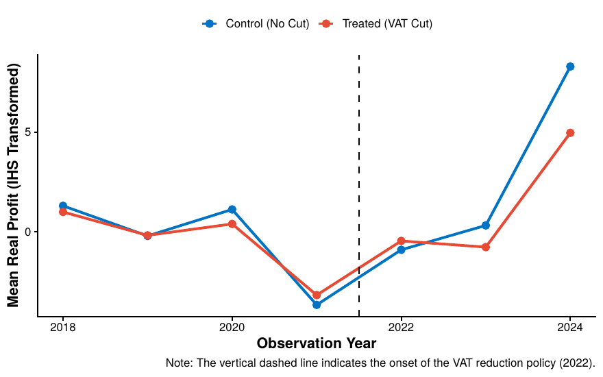
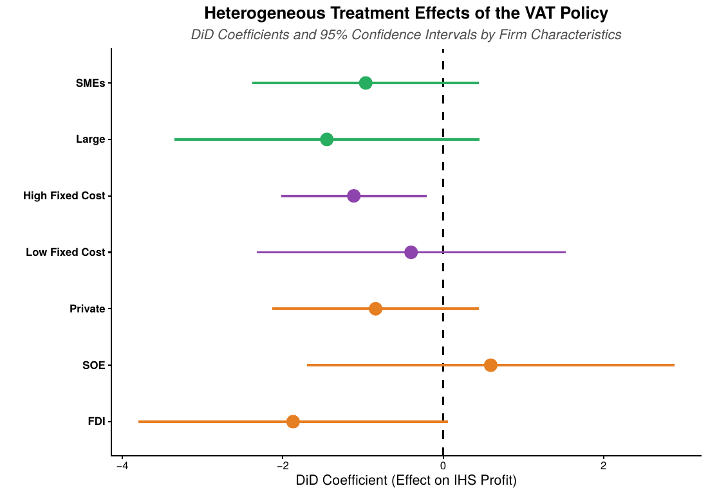
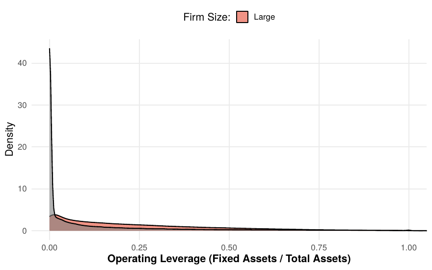
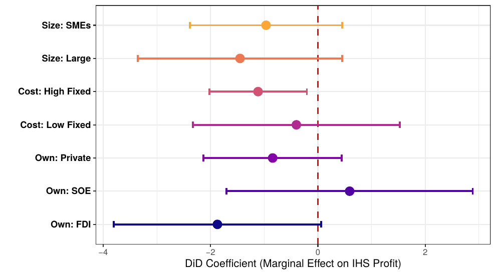
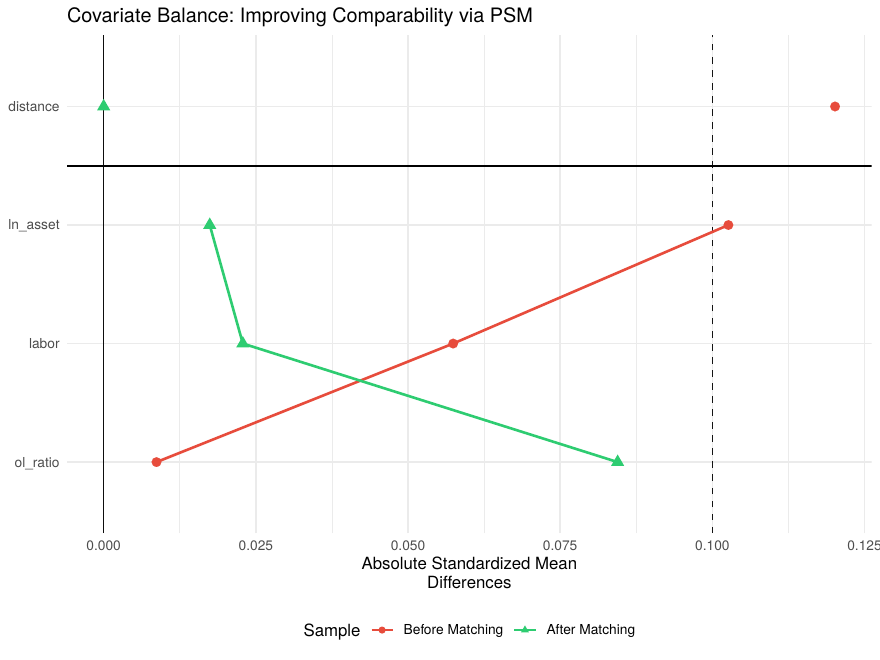
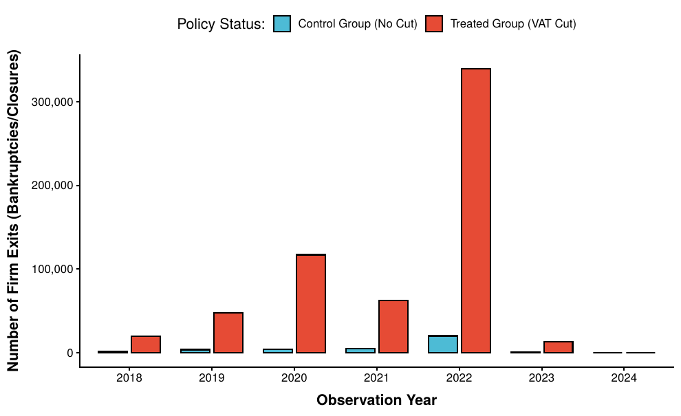
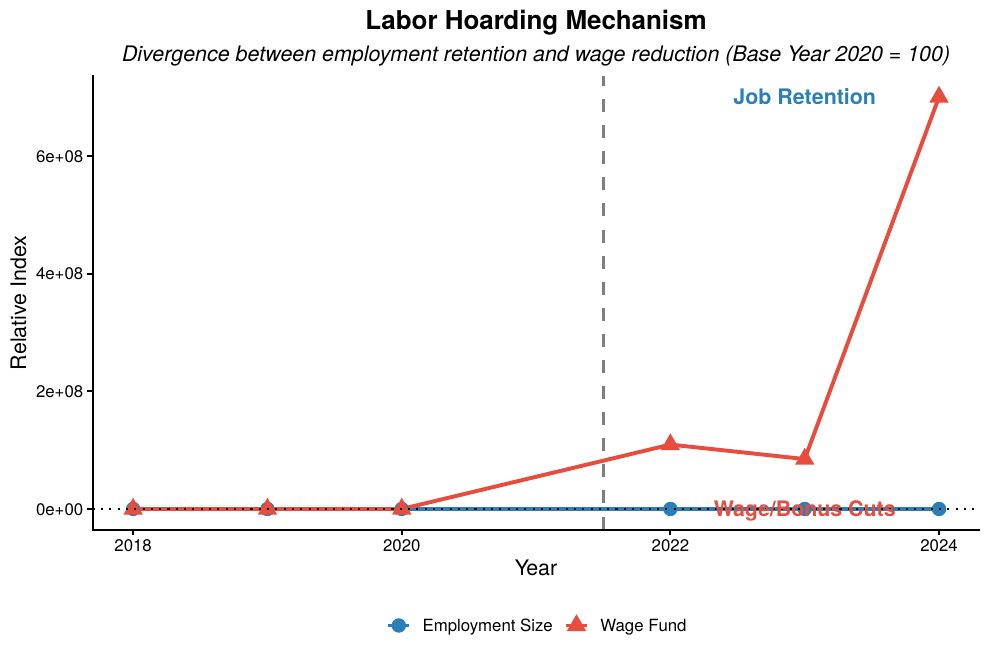

Đánh giá tác động của chính sách giảm thuế GTGT đến doanh nghiệp giai đoạn hậu Covid-19: Bằng chứng thực nghiệm từ dữ liệu VES tại Việt Nam
Assessing the Impact of the Value-Added Tax Reduction Policy on Enterprises in Post-COVID-19 Vietnam: Empirical Evidence from VES Data
Trương Nhật Duy · Đại học Kinh tế TP.HCM (UEH) · GVHD: TS. Ngô Hoàng Thảo TrangSupervisor: Dr. Ngô Hoàng Thảo Trang
1 GIỚI THIỆU ĐỀ TÀI
1.1 Bối cảnh
Bối cảnh chính sách hậu đại dịch xoay quanh một sự đánh đổi kinh điển trong kinh tế vĩ mô: Chi tiêu tài khóa đóng vai trò như một cách ổn định ngắn hạn, nhưng lại thường xuyên xung đột với mục tiêu tái cấu trúc và ổn định ngân sách dài hạn. Việt Nam cung cấp một minh chứng thực nghiệm tiêu biểu cho nghịch lý này. Bất chấp đà phục hồi ấn tượng với mức tăng trưởng GDP đạt 8,02% trong năm 2022 nhờ các nỗ lực kích cầu quyết liệt (Tổng cục Thống kê (GSO), 2022), những đứt gãy của chuỗi cung ứng và các cơn gió ngược từ kinh tế toàn cầu giai đoạn 2023–2024 đã khiến quỹ đạo phục hồi trở nên mong manh và phân hóa sâu sắc dọc theo cấu trúc doanh nghiệp (World Bank, 2023).
Số liệu chính thức từ Sách trắng Doanh nghiệp Việt Nam 2025 của Tổng cục Thống kê phác họa rõ nét bức tranh khu vực doanh nghiệp hậu đại dịch mà nghiên cứu này đặt vấn đề thẩm định: năm 2024, cả nước có 157.240 doanh nghiệp thành lập mới, nhưng riêng khu vực Dịch vụ, nhóm ngành thuộc diện được giảm thuế GTGT, đã ghi nhận 90.178 doanh nghiệp rút lui khỏi thị trường (tăng 16,5% so với 2023), tương đương 51,9% số doanh nghiệp gia nhập mới của chính khu vực này (Tổng cục Thống kê (GSO), 2025). Nói cách khác, cứ hai doanh nghiệp dịch vụ mới thành lập thì có xấp xỉ một doanh nghiệp cùng ngành phải đóng cửa trong cùng năm, một tỷ lệ đào thải cao bất thường ngay tại nhóm ngành được kỳ vọng hưởng lợi nhiều nhất từ chính sách kích cầu. Đồng thời, cơ cấu quy mô doanh nghiệp Việt Nam càng khắc họa rõ tính dễ tổn thương mang tính cấu trúc: tính đến 31/12/2023, doanh nghiệp siêu nhỏ chiếm tới 67,1% tổng số doanh nghiệp cả nước (522.483 doanh nghiệp), nhưng chỉ 34,5% trong số này kinh doanh có lãi, so với 73,2% ở nhóm doanh nghiệp lớn, cho thấy mối quan hệ tỷ lệ thuận gần như đơn điệu giữa quy mô doanh nghiệp và khả năng sinh lời (Tổng cục Thống kê (GSO), 2025). Báo cáo Kinh tế tư nhân Việt Nam 2025 của VCCI củng cố thêm bức tranh này ở góc độ cấu trúc doanh thu: hơn 70% doanh nghiệp ngoài nhà nước có doanh thu dưới 10 tỷ đồng/năm (VCCI, 2026), nhóm quy mô được xác định là đối tượng thụ hưởng chính của cả chính sách giảm thuế GTGT 2022–2024 lẫn Nghị quyết giảm 30% thuế thu nhập năm 2026 (Mục 5.4). Chính sự trùng khớp gần như hoàn toàn giữa nhóm dễ tổn thương nhất và nhóm chiếm đa số cấu trúc kinh tế tư nhân là động lực cấp thiết đằng sau câu hỏi nghiên cứu trọng tâm của luận án.
Trong bối cảnh đó, nghiên cứu này được thiết kế nhằm thẩm định kiến trúc nhân quả của hệ thống chính sách tài khóa hiện hành, trọng tâm là sự cộng hưởng giữa Chương trình phục hồi kinh tế theo Nghị quyết số 43/2022/QH15 (Quốc hội Việt Nam, 2022), chuỗi chính sách giảm 2% thuế Giá trị gia tăng (GTGT) được gia hạn liên tục (Chính phủ Việt Nam, 2022; Chính phủ Việt Nam, 2023; Chính phủ Việt Nam, 2023), và các nỗ lực gia hạn nộp thuế Thu nhập doanh nghiệp (Chính phủ Việt Nam, 2023).
Trọng tâm của bài viết xoay quanh việc trả lời câu hỏi nghiên cứu: Tại sao các nỗ lực bơm thanh khoản và kích cầu diện rộng, dù tạo ra được bộ đệm ổn định ở cấp độ vĩ mô tổng hợp, nhưng lại dẫn đến những hệ quả bất đối xứng khốc liệt ở cấp độ vi mô, qua đó làm trầm trọng thêm Nghịch lý phục hồi của nền kinh tế thực?
Để trả lời câu hỏi này, nghiên cứu không dừng lại ở các phân tích xu hướng tĩnh, mà tận dụng bộ dữ liệu vi mô quy mô lớn từ Điều tra Doanh nghiệp (VES giai đoạn 2018–2024), kết hợp cùng các phương pháp tựa thực nghiệm tiên tiến như PSM-DiD, Synthetic DiD, và Mô hình Sinh tồn. Thiết kế này nhằm bóc tách triệt để cơ chế truyền dẫn chính sách dựa trên cấu trúc sở hữu, đòn bẩy hoạt động và rủi ro đào thải.
1.2 Lý do chọn đề tài
Tính cấp thiết của đề tài càng được củng cố khi đặt trong mục tiêu tăng trưởng có tính bước ngoặt mà Việt Nam đã chính thức xác lập cho giai đoạn 2026–2030: tăng trưởng GDP bình quân từ 10%/năm trở lên, được Kết luận 18-KL/TW của Hội nghị Trung ương hai khóa XIV xác định là nhiệm vụ chính trị trọng tâm (Ban Chấp hành Trung ương Đảng khóa XIV, 2026) và được Quốc hội thể chế hóa với sự đồng thuận gần như tuyệt đối (494/494 đại biểu, 24/4/2026) tại Nghị quyết về Kế hoạch phát triển kinh tế–xã hội 5 năm 2026–2030 (Quốc hội Việt Nam, 2026). Song song đó, Nghị quyết 68-NQ/TW của Bộ Chính trị xác định khu vực kinh tế tư nhân là “động lực quan trọng nhất của nền kinh tế quốc gia”, đặt mục tiêu khu vực này đóng góp 58% GDP và 40% ngân sách nhà nước vào năm 2030 (Bộ Chính trị, 2025), được cụ thể hóa bằng các cơ chế ưu đãi thuế tại Nghị quyết 198/2025/QH15 (Quốc hội Việt Nam, 2025). Muốn đạt đồng thời hai mục tiêu này, tăng trưởng hai con số và kinh tế tư nhân làm động lực chính, đòi hỏi chính sách tài khóa hỗ trợ doanh nghiệp phải phát huy hiệu quả tối đa trên từng đồng ngân sách hy sinh, chứ không chỉ đơn thuần mở rộng quy mô hỗ trợ. Đây chính là bối cảnh chính sách cấp bách mà câu hỏi nghiên cứu về hiệu quả thực chứng (chứ không phải kỳ vọng lý thuyết) của công cụ giảm thuế gián thu cần được trả lời.
Trong giai đoạn phục hồi hậu đại dịch, Chính phủ Việt Nam đã vận dụng triết lý Nuôi dưỡng nguồn thu thông qua việc ban hành và liên tục gia hạn chính sách giảm 2% thuế GTGT. Kỳ vọng chính sách đặt ra là việc chấp nhận thâm hụt số thu tạm thời sẽ cung cấp bộ đệm thanh khoản giúp doanh nghiệp vượt qua cú sốc, từ đó phục hồi sản xuất và mở rộng cơ sở thuế trong dài hạn. Tuy nhiên, một vấn đề thực chứng then chốt vẫn chưa có lời giải định lượng thỏa đáng: Liệu một chính sách giảm thuế gián thu áp dụng đại trà có thực sự mang lại hiệu ứng bảo vệ đồng đều cho mọi loại hình doanh nghiệp? Việc trả lời câu hỏi này là cấp thiết, đặc biệt khi soi chiếu vào hai khoảng trống nghiên cứu hiện tại:
- Về phương pháp luận: Đa số các nghiên cứu đánh giá tác động của chính sách thuế tại Việt Nam hiện nay chủ yếu sử dụng mô hình Cân bằng tổng quát (CGE) mang tính mô phỏng dự báo tiền kiểm (ex-ante) (Bhattarai et al., 2019). Các tài liệu học thuật vẫn còn thiếu vắng những bằng chứng thực nghiệm hậu kiểm dựa trên dữ liệu mảng vi mô để đo lường chính xác tác động nhân quả.
- Về tính không đồng nhất: Rất hiếm nghiên cứu đi sâu bóc tách hộp đen trong cấu trúc vi mô để lý giải tại sao các doanh nghiệp có mức độ nhạy cảm khác nhau (về đòn bẩy hoạt động, cấu trúc tài sản) lại phản ứng trái ngược trước cùng một cú sốc tài khóa.
Xuất phát từ thực tiễn trên, đề tài: Đánh giá tác động của chính sách giảm thuế GTGT đến hiệu quả doanh nghiệp hậu COVID-19: Bằng chứng thực nghiệm từ dữ liệu vi mô được thực hiện.
1.3 Câu hỏi nghiên cứu
Nghiên cứu tập trung giải quyết ba câu hỏi trọng tâm:
- Q1: Tác động nhân quả của chính sách giảm 2% thuế GTGT đến khả năng sinh lời và rủi ro sinh tồn (phá sản) của các doanh nghiệp thuộc nhóm ngành thụ hưởng là gì?
- Q2: Tồn tại hay không tính bất đối xứng trong tác động của chính sách khi phân rã theo đòn bẩy hoạt động (Operating Leverage) và hình thức sở hữu?
- Q3: Đâu là các cơ chế kinh tế vi mô (Tích trữ lao động, Khế ước ngầm) chi phối và giải thích cho sự phân hóa tác động này?
Biến kết quả chính: Nghiên cứu xác định Lợi nhuận thực (biến đổi IHS) là biến kết quả chính xuyên suốt toàn bộ chiến lược thực nghiệm: Baseline TWFE, Event Study, PSM-DiD, SDiD, DDD và mô hình sinh tồn Cox đều được thiết kế trước hết để trả lời Q1 và Q2 trên biến này. Ba nhóm biến số còn lại gồm: Doanh thu (Mục 4.1.2), Quy mô lao động và Quỹ lương/BHXH (Mục 4.3), đóng vai trò biến cơ chế truyền dẫn (mechanism/channel variables) nhằm trả lời Q3: chúng giúp lý giải tại sao lợi nhuận phản ứng như quan sát được ở Q1–Q2, thông qua kênh doanh thu (cầu thị trường) và kênh chi phí lao động (tích trữ lao động, khế ước ngầm). Cấu trúc phân tầng biến số này được duy trì nhất quán từ Mục 6 (Kết quả) đến Mục 8 (Hàm ý chính sách).
1.4 Đóng góp học thuật và Lợi thế nghiên cứu
Nghiên cứu này vượt qua khuôn khổ của các đánh giá tác động tĩnh, mang đến một lăng kính động về cơ chế truyền dẫn chính sách tài khóa tại Việt Nam với ba đóng góp cốt lõi:
- Thực chứng Nhân quả trên Dữ liệu Vi mô: Việc theo dõi dọc hơn 3,1 triệu quan sát doanh nghiệp qua 7 năm (2018-2024), kết hợp PSM-DiD và Synthetic DiD, giúp lượng hóa chính xác hiệu ứng xử lý trung bình (ATT) và loại bỏ hoàn toàn các sai lệch chọn lọc nội sinh.
- Bóc tách Bẫy đòn bẩy hoạt động: Đóng góp lý thuyết lớn nhất của nghiên cứu là chỉ ra rủi ro cấu trúc khiến các tập đoàn lớn (High OL) trở nên dễ tổn thương hơn rất nhiều so với sự linh hoạt của khối SMEs (Low OL) trước sự sụp đổ của tổng cầu.
- Phát hiện Cơ chế Tích trữ lao động: Nghiên cứu cung cấp bằng chứng định lượng về sự đánh đổi giữa việc giữ chân nhân sự (để duy trì BHXH) và cắt giảm quỹ lương, minh chứng cho vai trò chia sẻ tổn thất của chính sách tài khóa.
| Tiêu chí so sánh | Báo cáo hành chính | Mô phỏng Vĩ mô (CGE) | Nghiên cứu này (DiD/PSM/Cox) |
|---|---|---|---|
| Góc nhìn tiếp cận | Tổng hợp tĩnh theo ngành | Dữ liệu I/O cấp quốc gia | Vi mô cấp độ Doanh nghiệp |
| Phân tích cơ chế | Cào bằng, tuyến tính | Giả định tối ưu hóa | Đòn bẩy hoạt động & An sinh |
| Kiểm soát nội sinh | Không có | Thấp (Ex-ante) | Cao (Ex-post TWFE, SDiD) |
1.5 Cấu trúc đề án
Chương 1 – GIỚI THIỆU: Giới thiệu tổng quan về Bối cảnh, đề tài nghiên cứu.
Chương 2 – TỔNG QUAN NGHIÊN CỨU VÀ KHUNG LÝ THUYẾT: trình bày lý thuyết về tác động của chính sách giảm thuế, tổng quan về các nghiên cứu trước đây được công bố bởi các nhà nghiên thuế trong nước và Quốc tế. Từ đó, Bối cảnh chính sách và chiến lược nhận diện. Dựa trên các nền tảng này, các mô hình nghiên cứu và giả thuyết đã được đưa ra ở chương sau.
Chương 3 – DỮ LIỆU VÀ PHƯƠNG PHÁP NGHIÊN CỨU: Trình bày về dữ liệu, quy trình nghiên cứu, giới thiệu phương pháp nghiên cứu được sử dụng bao gồm các mô hình và cách kiểm định.
Chương 4 – KẾT QUẢ NGHIÊN CỨU VÀ KIỂM ĐỊNH: Trình bày về kết quả định lượng, kiểm định độ vững, kèm ý nghĩa và phát hiện của kết quả định lượng, sau đó thảo luận tạo tiền đề cho phần hàm ý, kiến nghị chính sách ở Chương sau.
Chương 5 – KẾT LUẬN VÀ KIẾN NGHỊ: trình bày về kết quả và đưa ra khuyến nghị chính sách. Chương này cũng đưa ra những hạn chế về dữ liệu, phương pháp và ý nghĩa tại thời điểm bài nghiên cứu này được viết, và hướng phát triển tiếp theo ở các giai đoạn sau.
2 TỔNG QUAN NGHIÊN CỨU VÀ KHUNG LÝ THUYẾT
2.1 Tổng quan nghiên cứu
Sự đánh đổi giữa hiệu quả kích cầu kinh tế ngắn hạn và sự bền vững của nguồn thu ngân sách dài hạn luôn là tâm điểm trong các tranh luận tài chính công. Trong các giai đoạn khủng hoảng, cắt giảm thuế tiêu dùng (điển hình là thuế GTGT) thường được áp dụng rộng rãi như một cơ chế ổn định tự động.
Tuy nhiên, trên bình diện quốc tế, các nghiên cứu thực chứng về việc ai thực sự hưởng lợi từ chính sách này lại cho ra kết quả không đồng nhất. Bằng phương pháp bán thực nghiệm tại Pháp, Benzarti & Carloni (2019) đã chứng minh rằng mức độ truyền dẫn của việc giảm thuế lên giá tiêu dùng và lợi nhuận doanh nghiệp là không hoàn toàn và mang tính bất đối xứng.
Khi đi sâu vào cơ chế vi mô, sự khác biệt trong khả năng hấp thụ chính sách tài khóa được giải thích mạnh mẽ qua lăng kính cấu trúc chi phí và sức chịu đựng tài chính. Trong bối cảnh đại dịch làm tổng cầu đột ngột sụp đổ, Fahlenbrach et al. (2021) chỉ ra rằng các doanh nghiệp có mức đòn bẩy hoạt động cao, tức gánh nặng định phí lớn, sẽ chịu tổn thất nặng nề và phục hồi chậm chạp hơn, bất chấp nỗ lực kích cầu từ Chính phủ. Bổ sung cho quan điểm này, Ding et al. (2021) khẳng định sự linh hoạt tài chính đóng vai trò như hệ miễn dịch, giúp nhóm doanh nghiệp có bộ đệm tiền mặt tốt chống chịu hiệu quả hơn trước các cú sốc.
Đối với các nền kinh tế chuyển đổi như Việt Nam, tác động của chính sách vĩ mô không thể tách rời khỏi yếu tố cấu trúc sở hữu. Các doanh nghiệp Nhà nước (SOEs) thường hoạt động dưới ô dù của ràng buộc ngân sách mềm (Kornai et al., 2003), giúp họ dễ dàng tiếp cận nguồn lực tín dụng và miễn nhiễm tương đối với các cú sốc thanh khoản. Ngược lại, khu vực doanh nghiệp tư nhân vừa và nhỏ (SMEs) chịu sự thanh lọc khắc nghiệt của thị trường, khiến họ trở thành đối tượng dễ bị tổn thương nhất nhưng cũng là nhóm có khả năng phục hồi mạnh mẽ nhất khi được tiếp sức bởi các gói hỗ trợ dòng tiền.
Tổng quan các nghiên cứu trước đây tại Việt Nam về cải cách thuế hiện nay chủ yếu bị chi phối bởi các mô hình Cân bằng tổng quát (CGE) mang tính mô phỏng dự báo tiền kiểm (Bhattarai et al., 2019), hoặc các ước lượng chuỗi thời gian vĩ mô (Dinh, 2023). Dù cung cấp những định hướng chính sách tốt, việc thiếu vắng các đánh giá hậu kiểm dựa trên dữ liệu mảng vi mô khiến các nhà hoạch định chính sách gặp khó khăn trong việc nhận diện hiện tượng chảy máu tài khóa, khi ngân sách thất thu nhưng nhóm doanh nghiệp mục tiêu lại không được cứu vãn.
Từ những tổng quan nghiên cứu trên, Bảng hệ thống hóa các nghiên cứu tiền đề, qua đó làm nổi bật khoảng trống thực chứng mà nghiên cứu này hướng tới.
| Tác giả (Năm) | Phương pháp | Phát hiện cốt lõi | Khoảng trống / Hạn chế |
|---|---|---|---|
| Benzarti & Carloni (2019) | Tựa thực nghiệm (DiD) | Tồn tại sự truyền dẫn bất đối xứng của thuế VAT lên giá và lợi nhuận. | Thiếu sự bóc tách theo cấu trúc định phí của doanh nghiệp. |
| Fahlenbrach et al. (2021) | Phân tích mảng (Panel) | Doanh nghiệp có đòn bẩy hoạt động cao bị tổn thương nặng bởi COVID-19. | Chưa liên kết với hiệu ứng giảm sốc của chính sách tài khóa. |
| Kornai et al. (2003) | Lý thuyết Thể chế | SOEs được bảo vệ bởi rào cản ngân sách mềm trong nền kinh tế chuyển đổi. | Cần kiểm định định lượng cụ thể tại Việt Nam hậu khủng hoảng. |
| Bhattarai et al. (2019) | Mô phỏng vĩ mô (CGE) | Dự báo tác động kích cầu của thuế gián thu đối với tổng sản lượng. | Phân tích Ex-ante (tiền kiểm), thiếu dữ liệu vi mô quan sát thực tế. |
| Arkhangelsky et al. (2021) | Synthetic DiD (Thuật toán) | Giới thiệu SDiD để xử lý dứt điểm các cú sốc xu hướng vi mô. | Ứng dụng chủ yếu tập trung tại các nước phát triển. |
| Nghiên cứu này | PSM-DiD, SDiD, Cox Model | Lượng hóa tác động nhân quả của VAT 2% và bóc tách Bẫy đòn bẩy hoạt động. | Lấp đầy khoảng trống thực chứng Ex-post tại Việt Nam. |
Đứng trước các khoảng trống chiến lược nêu trên, nghiên cứu này được thiết lập dựa trên bộ dữ liệu vi mô VES nhằm giải quyết ba vấn đề sau:
- Khắc phục rào cản nội sinh và Thiếu hụt hậu kiểm: Chuyển dịch từ các mô hình mô phỏng tuyến tính sang thiết kế tựa thực nghiệm (PSM-DiD, và SDiD nhằm nhận diện chính xác tác động nhân quả trung bình (ATT) của chính sách.
- Loại bỏ Lạm phát: Khắc phục điểm yếu của các nghiên cứu trước bằng cách xử lý triệt để tác động của lạm phát chi phí đẩy. Toàn bộ các biến số tài chính định lượng trong nghiên cứu đều được khử lạm phát thông qua bộ chỉ số CPI qua các năm của Việt Nam.
- Bóc tách tính không đồng nhất: Phá vỡ giả định kinh điển coi khu vực doanh nghiệp là một khối đồng nhất. Nghiên cứu giải mã Nghịch lý phục hồi thông qua sự giao thoa giữa quy mô, cấu trúc đòn bẩy hoạt động và hình thái sở hữu (SOEs, FDI và khu vực Tư nhân).
Bằng việc thiết lập một khung phân tích vi mô chặt chẽ, nghiên cứu không chỉ xác thực hiệu năng của chính sách giảm thuế GTGT hậu COVID-19, mà còn cung cấp bằng chứng thực thực nghiệm để định hình các gói hỗ trợ tài khóa phù hợp hơn trong tương lai.
2.2 Khung lý thuyết và Cơ chế tác động
Để vượt qua giới hạn của các phân tích tuyến tính, nghiên cứu xây dựng một khung phân tích tích hợp. Khung này kết nối các nền tảng tài chính công vĩ mô với các rào cản thực tiễn tại doanh nghiệp, qua đó làm rõ cơ chế truyền dẫn (Hình 1).
2.2.1 Lý thuyết Thuế tối ưu và Gánh nặng vượt mức
Trước khi phân tích cơ chế truyền dẫn cụ thể của chính sách giảm thuế GTGT, nghiên cứu đặt vấn đề trong khung lý thuyết thuế tối ưu (optimal taxation) của tài chính công hiện đại. Ramsey (1927) đặt nền móng cho nguyên lý đánh thuế hàng hóa tối ưu: để tối thiểu hóa tổn thất phúc lợi xã hội (deadweight loss) với một mức thu ngân sách cho trước, thuế suất nên tỷ lệ nghịch với độ co giãn cầu theo giá của từng loại hàng hóa (quy tắc Ramsey). Diamond & Mirrlees (1971) mở rộng khung phân tích này sang bối cảnh có sản xuất, chứng minh định lý về hiệu quả sản xuất (production efficiency theorem): trong điều kiện Chính phủ có thể đánh thuế linh hoạt hàng hóa tiêu dùng cuối cùng, việc đánh thuế đầu vào trung gian là không tối ưu, một luận cứ lý thuyết ủng hộ thiết kế thuế GTGT (đánh vào giá trị gia tăng cuối chuỗi, khấu trừ thuế đầu vào) so với các sắc thuế doanh thu chồng chéo (cascading turnover tax) mà GTGT thay thế tại nhiều quốc gia đang phát triển, bao gồm Việt Nam.
Tuy nhiên, một đợt giảm thuế suất đồng loạt (như giảm GTGT từ 10% xuống 8%) không phải là một chính sách thuế tối ưu theo nghĩa Ramsey–Diamond–Mirrlees, vì nó áp dụng đồng đều lên mọi mặt hàng chịu thuế thay vì phân biệt theo độ co giãn cầu. Điều này có hai hàm ý quan trọng cho khung phân tích của nghiên cứu. Thứ nhất, phần gánh nặng thuế thực sự (tax incidence) không nhất thiết rơi vào bên nộp thuế theo luật định (doanh nghiệp) mà phân chia giữa doanh nghiệp và người tiêu dùng theo tỷ lệ độ co giãn cung–cầu tương đối (Fullerton & Metcalf, 2002), điều này lý giải vì sao Benzarti & Carloni (2019) phát hiện mức độ truyền dẫn (pass-through) của giảm thuế VAT tại Pháp là không hoàn toàn và bất đối xứng, một phát hiện then chốt định hình giả thuyết nghiên cứu này. Thứ hai, quy mô của gánh nặng vượt mức (excess burden) mà một sắc thuế gây ra không chỉ phụ thuộc thuế suất mà còn phụ thuộc mức độ doanh nghiệp/cá nhân phản ứng hành vi để né thuế hoặc tránh thuế hợp pháp (tax avoidance), vốn tăng theo cấp số nhân (chứ không tuyến tính) với thuế suất biên (Feldstein, 1999). Điều này có liên hệ trực tiếp đến thảo luận ở Mục 5.4 về Nghị quyết giảm 30% thuế TNCN/TNDN năm 2026: khi chi phí tuân thủ và chi phí quản lý thuế (administrative and compliance costs) đối với nhóm doanh thu nhỏ vượt quá số thu tăng thêm mà Nhà nước thu được từ nhóm này, một chính sách miễn/giảm thuế có chọn lọc theo quy mô trở thành lựa chọn hiệu quả Pareto, đúng như khuyến nghị của Slemrod (2007) về việc tối ưu hóa biên giới giữa thu thuế và chi phí hành thu, đặc biệt liên quan đến khu vực phi chính thức và hộ kinh doanh quy mô nhỏ tại các nền kinh tế đang phát triển.
2.2.2 Nền tảng Tài chính công và Rào cản Thể chế
Hiệu năng của một đợt cắt giảm thuế gián thu diện rộng phụ thuộc vào ba trụ cột vĩ mô:
- Nguyên lý Hữu dụng biên giảm dần : Dựa trên định đề của Atkinson & Stiglitz (1980), nới lỏng tài khóa tạo ra thặng dư phúc lợi lớn nhất khi nó hướng đến nhóm SMEs và người tiêu dùng nhạy cảm về giá. Sự gia tăng thanh khoản ở nhóm này tạo ra hiệu ứng số nhân mạnh mẽ hơn.
- Kỷ luật Ngân sách và Hiệu ứng Kỳ vọng: Theo Định lý Tương đương Ricardian, chính sách kích cầu chỉ phát huy tác dụng nếu nó không kích hoạt kỳ vọng của khu vực tư nhân về việc tăng thuế bù đắp trong tương lai. Sự kiên định với triết lý nuôi dưỡng nguồn thu đóng vai trò là mỏ neo giữ vững niềm tin tái đầu tư (Trabandt & Uhlig, 2011).
- Mất cân đối tài khóa chiều dọc (Vertical Fiscal Imbalance - VFI): Theo Oates (1972), hiệu quả thực thi ở địa phương thường bị bóp méo bởi VFI. Khi Trung ương lệnh giảm thuế, các địa phương phụ thuộc ngân sách dễ kích hoạt rào cản ngân sách mềm (Kornai et al., 2003), dẫn đến gia tăng các biện pháp thanh tra thuế bù đắp, làm xói mòn lợi ích chính sách.
2.2.3 Cơ chế truyền dẫn Vi mô: Ràng buộc Thanh khoản và Đòn bẩy Hoạt động
Khi thặng dư vượt qua rào cản thể chế, tác động thực tế lại phân hóa sâu sắc dựa trên cấu trúc vi mô:
- Giải phóng Ràng buộc Thanh khoản : Dù GTGT là thuế gián thu, nhưng độ trễ giữa thời điểm thu tiền và kỳ nộp thuế biến việc giảm 2% VAT thành một khoản bơm tiền mặt tạm thời. Đối với SMEs vốn chịu rào cản tín dụng khắt khe, nguồn thặng dư này đóng vai trò như một bộ đệm sinh tồn, ngăn chặn rủi ro vỡ nợ kỹ thuật (Holmström & Tirole, 1998).
- Tác động bất đối xứng qua Đòn bẩy Hoạt động (OL): Mức độ đòn bẩy (tỷ trọng định phí/biến phí) chính là hộp đen giải thích cho nghịch lý phục hồi:
- Đối với Doanh nghiệp lớn (High OL): Sở hữu chi phí khấu hao và quỹ lương cứng khổng lồ. Khi cú sốc cầu xảy ra, mức giảm 2% VAT không đủ độ co giãn để bù đắp định phí, khiến lợi nhuận sụp đổ (Bẫy đòn bẩy).
- Đối với khối SMEs (Low OL): Cấu trúc biến phí cao giúp họ linh hoạt ngủ đông. Nhờ đó, dòng thanh khoản từ thuế giúp họ dễ dàng tồn tại, hấp thụ sốc và linh hoạt giảm giá để giữ tệp khách hàng.
2.3 Bối cảnh chính sách và chiến lược nhận diện
Trước khi đi sâu vào thiết lập các mô hình kinh tế lượng, việc nhận diện rõ quỹ đạo và phạm vi áp dụng của chuỗi chính sách giảm thuế GTGT là tiền đề bắt buộc. Điều này giúp định hình chính xác cú sốc ngoại sinh, nhóm can thiệp và thời điểm phát sinh tác động.
Chuỗi Chính sách giảm thuế GTGT từ 10% xuống 8% không phải là một cú sốc đơn lẻ, mà được triển khai xuyên suốt qua 5 giai đoạn (Bảng ). Việc nhận diện các mốc thời gian này giải thích quyết định của nghiên cứu khi lựa chọn năm 2022 làm mốc khởi đầu can thiệp ($Post_t=1$), xuất phát từ hiệu lực của Nghị định 15/2022/NĐ-CP.
| Giai đoạn | Nghị quyết | Nghị định | Thời gian | VES |
|---|---|---|---|---|
| 1 (Main) | NQ43/2022 (Quốc hội Việt Nam, 2022) | NĐ15/2022 (Chính phủ Việt Nam, 2022) | 01/02/2022–31/12/2022 | ✓ |
| 2 | NQ101/2023 | NĐ44/2023 (Chính phủ Việt Nam, 2023) | 01/07/2023–31/12/2023 | ✓ |
| 3 | NQ110/2023 | NĐ94/2023 (Chính phủ Việt Nam, 2023) | 01/01/2024–30/06/2024 | ✓ |
| 4 | NQ174/2024 (Quốc hội Việt Nam, 2024) | NĐ180/2024 (Chính phủ Việt Nam, 2024) | 01/01/2025–30/06/2025 | 55 |
| 5 (Ext.) | NQ204/2025 (Quốc hội Việt Nam, 2025) | NĐ174/2025 (Chính phủ Việt Nam, 2025) | 01/07/2025–31/12/2026 | 55 |
Thiết kế nghiên cứu của DiD của nghiên cứu được xây dựng dựa trên phạm vi loại trừ cứng quy định tại Phụ lục I, II, III của Nghị định 15/2022/NĐ-CP (Chính phủ Việt Nam, 2022):
- Nhóm Can thiệp ($Treat_i=1$): Bao gồm các doanh nghiệp thuộc ngành Dịch vụ, Vận tải, Ăn uống, Bán lẻ, và Sản xuất chế biến. Đây là những nhóm ngành hứng chịu trực tiếp cú sốc đứt gãy chuỗi cung ứng và được kỳ vọng hưởng lợi lớn nhất từ kích cầu.
- Nhóm Đối chứng ($Treat_i=0$): Bao gồm các ngành bị loại trừ khỏi chính sách như Viễn thông, Tài chính, Ngân hàng, Bất động sản. Nhóm này tạo ra một nhóm cơ sở lý tưởng để so sánh vì ít chịu ảnh hưởng bởi gián đoạn cung ứng vật lý.
- Biến thời gian ($Post_t=1$): Áp dụng cho giai đoạn 2022–2024 (bao phủ toàn bộ 3 giai đoạn đầu của chính sách trong bộ dữ liệu VES, tương ứng chính xác với thời điểm hiệu lực từng Nghị định tại Bảng ).
2.3.1 Nhiễu cấp ngành và xử lý các ngành có mức tác động hỗn hợp
Một rủi ro nhận diện quan trọng là đặc điểm ngành có thể đồng thời tương quan với việc doanh nghiệp thuộc nhóm can thiệp hay đối chứng và ảnh hưởng trực tiếp đến kết quả kinh doanh một cách độc lập với chính sách thuế. Hiệu ứng cố định doanh nghiệp và năm ($\mu_i$, $\lambda_t$) trong mô hình TWFE cơ sở chỉ hấp thụ được đặc điểm ngành bất biến theo thời gian; chúng không triệt tiêu được cú sốc ngành biến đổi theo thời gian, Ví dụ: khu vực Ngân hàng, Viễn thông, Công nghệ (nhóm đối chứng) tăng trưởng phi mã hậu đại dịch trong khi khu vực Sản xuất, Bán lẻ (nhóm can thiệp) hứng chịu đứt gãy chuỗi cung ứng cùng thời điểm, độc lập với việc có được giảm thuế hay không. Đây chính xác là cơ chế có thể góp phần tạo ra sự phân kỳ quan sát được ở Hình 7 và làm suy yếu giả định về một nhóm đối chứng thuần túy. Từ đó, Nghiên cứu xử lý rủi ro này theo hai hướng bổ sung, thay vì chỉ dựa vào TWFE cơ sở:
- Kiểm soát tường minh cú sốc ngành–thời gian: Đặc tả FE Ngành$\times$Năm (Bảng , Phụ lục B.4) hấp thụ mọi cú sốc chung của một ngành tại một năm cụ thể, buộc hệ số DiD chỉ còn được nhận diện từ biến động trong nội bộ mỗi ngành theo thời gian. Việc hệ số DiD chỉ suy giảm nhẹ (từ $-1{,}061$ xuống $-0{,}982$) khi thêm đặc tả này là bằng chứng cho thấy phần lớn hiệu ứng quan sát được không phải thuần túy do khác biệt xu hướng ngành, dù không loại trừ hoàn toàn khả năng còn sót lại nhiễu dư.
- Xử lý các ngành có mức tác động hỗn hợp (mixed-treatment industries): Phạm vi loại trừ tại Phụ lục I, II, III của Nghị định 15/2022/NĐ-CP được quy định theo mã hàng hóa/dịch vụ cụ thể, có thể không trùng khớp hoàn toàn với ranh giới ngành cấp 2 chữ cái (B, C, J, K, L theo VSIC). Cụ thể, bên trong ngành C (Công nghiệp chế biến, chế tạo), vốn được xếp vào nhóm can thiệp , Phụ lục I liệt kê riêng 25 mã ngành cấp 5 số thuộc diện loại trừ (than cốc, sản phẩm lọc dầu, phân bón và hợp chất ni-tơ, hóa chất cơ bản, mỹ phẩm, sản phẩm gang thép, kim loại quý, vũ khí đạn dược,...), tạo ra rủi ro sai số đo lường trong biến can thiệp nếu Treat được gán ở cấp ngành thô. Để kiểm tra rủi ro này một cách thực chứng, nghiên cứu đối chiếu trực tiếp 25 mã VSIC cấp 5 nêu trên với biến industry_code (vốn đã ở độ chi tiết cấp 5 số) trong bộ dữ liệu phân tích: kết quả cho thấy toàn bộ 47.033 doanh nghiệp thuộc các mã ngành hỗn hợp này trong mẫu VES đã được gán đúng $Treat_i = 0$, xác nhận biến can thiệp trong bộ dữ liệu phân tích được xây dựng ở cấp độ VSIC 5 số bám sát chính xác Phụ lục Nghị định 15, chứ không phải ở cấp ngành thô như có thể suy diễn từ mô tả tổng quát tại Bảng . Rủi ro sai số đo lường do phân loại ngành hỗn hợp, do đó, đã được xử lý ngay từ khâu xây dựng dữ liệu chứ không còn tồn tại trong mẫu phân tích cuối cùng.
Đặc biệt, bước sang giai đoạn đầu năm 2026, hệ thống tài chính công Việt Nam đã ghi nhận một bước ngoặt lập pháp thông qua Luật sửa đổi, bổ sung một số điều của các luật thuế (Quốc hội Việt Nam, 2026; Hiệp, 2026), trong đó xóa bỏ ngưỡng doanh thu 500 triệu đồng để đánh thuế đối với hộ kinh doanh. Động thái này được tách bạch hoàn toàn với chuỗi gia hạn GTGT 8% (Quốc hội Việt Nam, 2025), minh chứng rõ nét cho nỗ lực độc lập của Chính phủ nhằm triệt tiêu hiện tượng Gánh nặng tài khóa do lạm phát (Fiscal Drag), một cơ chế vĩ mô trọng yếu sẽ được phân tích định lượng mở rộng ở chương Hàm ý chính sách.
3 DỮ LIỆU VÀ PHƯƠNG PHÁP NGHIÊN CỨU
3.1 Phương pháp Nghiên cứu và chiến lược thực nghiệm
Để đo lường tác động nhân quả của chính sách giảm thuế GTGT trong bối cảnh nền kinh tế chịu nhiều cú sốc đan xen, nghiên cứu thiết lập một chiến lược thực nghiệm đa tầng. Thiết kế này không chỉ lượng hóa hiệu ứng trung bình (ATT) thông qua mô hình cơ sở, mà còn bóc tách cơ chế truyền dẫn qua đòn bẩy hoạt động, cấu trúc sở hữu và khả năng sinh tồn của doanh nghiệp.
3.1.1 Dữ liệu, Đo lường và Hiệu chỉnh Lạm phát
Nguồn dữ liệu và Khung quan sát: Nghiên cứu sử dụng dữ liệu mảng vi mô cấp doanh nghiệp từ Điều tra Doanh nghiệp thường niên (VES) do Tổng cục Thống kê (GSO) thực hiện (Tổng cục Thống kê (GSO), 2024). Khung thời gian từ 2018–2024 được lựa chọn để bao quát toàn bộ quỹ đạo trước, trong và sau đại dịch. Dữ liệu được định danh theo mã số thuế để thiết lập bảng dữ liệu dọc, cho phép kiểm soát tối đa các đặc điểm bất biến của doanh nghiệp. Các quan sát khuyết thiếu, vi phạm logic kế toán, hoặc doanh nghiệp có vòng đời dưới 3 năm đều được loại bỏ nhằm đảm bảo tính ổn định của chuỗi dữ liệu, theo khuyến nghị xử lý dữ liệu vi mô của Haltiwanger et al. (2013).
Hiệu chỉnh lạm phát: Đóng góp phương pháp luận quan trọng của nghiên cứu nằm ở việc loại bỏ lạm phát. Giai đoạn 2018–2024 chứng kiến cú sốc đứt gãy chuỗi cung ứng, đẩy lạm phát chi phí đẩy lên cao. Nếu sử dụng dữ liệu danh nghĩa, sự gia tăng lợi nhuận có thể chỉ là ảo ảnh kế toán. Do đó, toàn bộ biến tài chính định lượng được chuẩn hóa về giá trị thực dựa trên Chỉ số Giá tiêu dùng (CPI) (Tổng cục Thống kê (GSO), 2026) với năm cơ sở 2018:
Ngoài ra, các biến tài chính đều được cắt ngọn (Winsorized) tại phân vị 1% và 99% để loại trừ tác động của các giá trị ngoại lai. Đối với biến Lợi nhuận, nghiên cứu áp dụng phép biến đổi Inverse Hyperbolic Sine (IHS) theo Bellemare & Wichman (2019) để làm trơn phân phối dữ liệu nhưng vẫn giữ lại được các giá trị âm (thua lỗ), một đặc tính sống còn của dữ liệu doanh nghiệp trong giai đoạn khủng hoảng.
| Định nghĩa, phương pháp xử lý và nguồn dữ liệu của các biến (Giai đoạn 2018–2024) | |||
|---|---|---|---|
| Tên biến (Ký hiệu) | Vai trò | Định nghĩa & Thước đo thực nghiệm | Nguồn & Kỹ thuật xử lý (Stata) |
| \ – Tiếp tục từ trang trước | |||
| Tên biến (Ký hiệu) | Vai trò | Định nghĩa & Thước đo thực nghiệm | Nguồn & Kỹ thuật xử lý (Stata) |
| Tiếp tục ở trang sau... | |||
| Panel A: Các biến Chính sách (Can thiệp & Thời gian) | |||
| Nhóm can thiệp ($Treat_i$) | Độc lập (Dummy) | Nhận giá trị 1 nếu doanh nghiệp thuộc ngành được giảm VAT (Dịch vụ, Du lịch, Vận tải...); 0 nếu thuộc nhóm loại trừ. | Nguồn: VES. Trích xuất dựa trên mã ngành VSIC cấp 4, đối chiếu Phụ lục NĐ 15/2022. Cố định phân ngành tại năm 2018. |
| Giai đoạn can thiệp ($Post_t$) | Độc lập (Dummy) | Nhận giá trị 1 cho các năm từ 2022 đến 2024; nhận giá trị 0 cho giai đoạn 2018–2021. | Nguồn: VES. Tạo từ biến `Year`. Năm 2021 được dùng làm năm tham chiếu. |
| Panel B: Các biến Kết quả (Hiệu quả hoạt động & Sinh tồn) | |||
| Lợi nhuận thực ($Real\_Profit_{it}$) | Phụ thuộc (Continuous) | Lợi nhuận kế toán trước thuế đã khử lạm phát. Phản ánh thặng dư tài chính tuyệt đối. | Nguồn: VES. Công thức: $Nominal\_Y_{it} / (CPI_t/100)$. Winsorize 1% và 99%. |
| Log Lợi nhuận ($Log\_Profit_{it}$) | Phụ thuộc (Continuous) | Phép biến đổi phi tuyến tính của Lợi nhuận thực. | Nguồn: VES. Sử dụng hàm IHS: $\ln(y+\sqrt{y^2+1})$ để giữ giá trị âm. |
| Quy mô lao động ($Labor_{it}$) | Phụ thuộc (Continuous) | Tổng số lao động bình quân trong năm. Đo lường quyết định mở rộng quy mô. | Nguồn: VES. Lấy Logarit tự nhiên ($\ln$). Winsorize 1% và 99%. |
| Rời khỏi thị trường ($Exit_{it}$) | Phụ thuộc (Dummy) | Biến rủi ro phá sản: Nhận giá trị 1 tại năm $t$ nếu DN biến mất khỏi dữ liệu ở năm $t+1$. | Nguồn: VES. Theo dõi mã số thuế (MST) qua chuỗi Panel. Dùng cho mô hình Cox. |
| Panel C: Các biến Cơ chế truyền dẫn (Phân rã tính không đồng nhất) | |||
| Quy mô Doanh nghiệp ($Size_i$) | Biến phân rã (Categorical) | Lớn ($\ge$ 100 lao động) và SME ($<$ 100 lao động). | Nguồn: VES. Cố định dựa trên quy mô tại năm cơ sở 2018. |
| Cấu trúc sở hữu ($Ownership_i$) | Biến phân rã (Categorical) | (1) Nhà nước (SOE); (2) Vốn nước ngoài (FDI); (3) Tư nhân nội địa (Private). | Nguồn: VES. Trích xuất từ mã loại hình pháp lý. Cố định tại năm cơ sở 2018. |
| Đòn bẩy hoạt động ($High\_OL_i$) | Biến phân rã (Dummy) | Nhận giá trị 1 nếu tỷ lệ (TSCĐ / Tổng tài sản) lớn hơn mức trung vị của ngành. | Nguồn: VES. Đo lường cấu trúc định phí. |
| Panel D: Biến kiểm soát Vĩ mô | |||
| Chỉ số Giá tiêu dùng ($CPI_{t}$) | Kiểm soát (Continuous) | Mức độ lạm phát bình quân năm theo cấp quốc gia/tỉnh (Năm gốc = 2018). | Nguồn: GSO. Khử lạm phát. |
3.1.2 Khung phân tích: Chính sách giảm thuế như một Thử nghiệm Tự nhiên
Nghiên cứu tiếp cận việc cắt giảm 2% thuế GTGT theo Nghị định 15/2022/NĐ-CP và Nghị định 44/2023/NĐ-CP như một Thử nghiệm Tự nhiên (Natural Experiment - NE). Đặc tính tự nhiên này xuất phát từ hai yếu tố ngoại sinh then chốt:
(i) Cú sốc chính sách được ban hành đột ngột nhằm ứng phó với đại dịch, và
(ii) Ranh giới giữa nhóm được thụ hưởng (Treated) và nhóm loại trừ (Control) được phân định cứng nhắc dựa trên mã ngành kinh tế (VSIC), thay vì dựa trên năng lực hay lựa chọn chủ quan của doanh nghiệp theo (Khandker et al., 2010).
Thiết kế này cho phép nghiên cứu sử dụng khung phân tích chính sách để bóc tách tác động thuần túy, loại bỏ các yếu tố gây nhiễu từ xu hướng phục hồi chung của thị trường.
Sơ đồ Hình 3 mô tả logic thực nghiệm của nghiên cứu. Chính sách tác động thông qua hai kênh chính:
(1) Phía cung: Giảm gánh nặng định phí ngắn hạn và cải thiện dòng tiền;
(2) Phía cầu: Hạ giá thành sản phẩm giúp kích cầu tiêu dùng.
Tuy nhiên, hiệu ứng cuối cùng lên Kết quả (Outcomes) không đồng nhất mà bị điều tiết bởi cấu trúc nội tại của doanh nghiệp.
Để lượng hóa sơ đồ này, nghiên cứu chuyển đổi các mối quan hệ logic thành các mô hình kinh tế lượng cụ thể:
- Mô hình DiD/TWFE: Đóng vai trò kiểm chứng tác động tổng thể từ Đầu vào chính sách đến Lợi nhuận/Lao động. Đây là kỹ thuật chuẩn để xử lý sai số do các yếu tố không quan sát được thay đổi theo thời gian.
- Mô hình DDD: Lượng hóa vai trò của các Biến điều tiết (Đòn bẩy hoạt động, Sở hữu). Điều này giúp giải thích tại sao cùng một mức giảm 2%, nhưng có doanh nghiệp phục hồi, có doanh nghiệp vẫn rơi vào nghịch lý suy thoái.
- Mô hình Survival (Cox): Đánh giá tác động cuối cùng của chính sách lên sự sinh tồn - ngưỡng giới hạn cao nhất của hiệu quả chính sách tài khóa trong khủng hoảng.
3.1.3 Mô hình Cơ sở: Khác biệt trong Khác biệt với TWFE
Để đánh giá thặng dư chính sách trung bình (ATT), nghiên cứu ứng dụng mô hình Khác biệt trong Khác biệt kết hợp Hiệu ứng cố định hai chiều (TWFE - Two-Way Fixed Effects). Việc sử dụng TWFE giúp hấp thụ triệt để các đặc điểm bất biến theo thời gian của doanh nghiệp và các cú sốc vĩ mô chung. Phương trình được thiết lập:
Trong đó, $Y^*_{it}$ là biến kết quả đã khử lạm phát; $\mu_i$ và $\lambda_t$ lần lượt là hiệu ứng cố định cấp doanh nghiệp và cấp thời gian. Mọi sai số ngẫu nhiên $\epsilon_{it}$ đều được hiệu chỉnh cụm theo theo Mã ngành kinh tế nhằm khắc phục hiện tượng tự tương quan không gian trong dữ liệu mảng, tuân thủ chặt chẽ hướng dẫn của Cameron & Miller (2015).
3.1.4 Bóc tách Cơ chế truyền dẫn
Thay vì dừng ở hiệu ứng trung bình tĩnh (ATT), nghiên cứu ứng dụng cấu trúc Khác biệt trong Khác biệt Kép (Triple-Differences - DDD) và Phân tích sinh tồn để định lượng các cơ chế truyền dẫn, qua đó giải mã những nghịch lý phục hồi vi mô.
Mặc dù phương pháp DiD truyền thống giúp kiểm soát các yếu tố không đổi theo thời gian, ước lượng này vẫn có nguy cơ bị nhiễu bởi các đặc tính nội sinh thay đổi theo thời gian của doanh nghiệp. Để khắc phục hạn chế này, thiết kế DDD được áp dụng bằng cách bổ sung thêm chiều phân rã thứ ba là cấu trúc Đòn bẩy hoạt động (OL).
Thay vì chỉ so sánh sự khác biệt giữa nhóm Can thiệp và Đối chứng trước/sau chính sách, DDD tiến hành so sánh sự khác biệt của sự khác biệt đó giữa hai nhóm doanh nghiệp có cấu trúc định phí khác nhau (High OL so với Low OL) ngay bên trong nhóm được giảm thuế. Thiết kế này giúp hấp thụ và loại bỏ hoàn toàn các cú sốc vĩ mô hoặc các xu hướng biến động tiềm ẩn (ví dụ: thay đổi trong xu hướng tiêu dùng chung) tác động không đồng đều lên các nhóm doanh nghiệp. Qua đó, ước lượng DDD cung cấp một bằng chứng nhân quả vững hơn và làm giảm thiểu sự phụ thuộc vào giả định xu hướng song song khắt khe của DiD truyền thống.
3.1.5 Đòn bẩy hoạt động (Quy mô doanh nghiệp và Cấu trúc chi phí):
Sự khác biệt về cấu trúc chi phí tạo ra năng lực hấp thụ chính sách khác nhau. Để kiểm định giả thuyết về rào cản của Đòn bẩy hoạt động (Operating Leverage - OL), nghiên cứu sử dụng tỷ lệ Tài sản cố định trên Tổng tài sản như một biến đại diện (proxy). Biến giả $High\_OL_i$ nhận giá trị 1 nếu tỷ lệ OL của doanh nghiệp vượt mức trung vị của ngành. Mô hình DDD được thiết lập:
Hệ số quan tâm $\theta_1$ đo lường tác động dị biệt của chính sách lên nhóm doanh nghiệp có đòn bẩy hoạt động cao. Nghiên cứu kỳ vọng $\theta_1$ mang dấu âm có ý nghĩa thống kê, cung cấp bằng chứng thực chứng về giới hạn của các chính sách kích cầu tài khóa cào bằng trước cấu trúc chi phí cứng của doanh nghiệp. Tiếp cận này kế thừa trực tiếp từ phát hiện của Giroud & Mueller (2017) về việc các doanh nghiệp có cấu trúc đòn bẩy cao thường dễ tổn thương hơn trước các cú sốc cầu và kém nhạy bén với các gói cứu trợ vĩ mô.
3.1.6 Tính không đồng nhất theo Cấu trúc Sở hữu:
Trong bối cảnh nền kinh tế chuyển đổi của Việt Nam, cấu trúc sở hữu quyết định khả năng tiếp cận các nguồn lực tài chính ngầm. Để tránh việc gộp chung làm mờ tín hiệu, nghiên cứu phân rã mẫu thành 4 nhóm: Doanh nghiệp Nhà nước (SOE), Doanh nghiệp FDI, Công ty Cổ phần (JointStock), và Công ty TNHH/Doanh nghiệp tư nhân (LLC). Mô hình DDD được mở rộng:
Cấu trúc này cho phép kiểm định giả thuyết: Các doanh nghiệp SOE, vốn được bảo vệ bởi rào cản ngân sách mềm (Kornai, 1986), và FDI (được hậu thuẫn bởi chuỗi cung ứng toàn cầu) sẽ ít phản ứng với chính sách thuế nội địa. Ngược lại, khối SMEs tư nhân (LLC và JointStock nhỏ), những đối tượng chịu hạn chế thanh khoản (liquidity constraints) khốc liệt nhất theo lý thuyết của Fazzari et al. (1988), mới là những đơn vị thụ hưởng ròng, thể hiện qua hệ số $\delta_k$ mang dấu dương vượt trội.
3.1.7 Phân tích Sinh tồn và Cú sốc Thanh khoản:
Việc đánh giá chính sách sẽ khiếm khuyết nếu chỉ nhìn vào khả năng sinh lời, bởi trong khủng hoảng, mục tiêu tối thượng của doanh nghiệp là sống sót (Mata & Portugal, 1994). Chính sách giảm thuế, thông qua việc để lại một lượng tiền mặt lưu thông tạm thời, có thể hoạt động như một bộ đệm thanh khoản giúp doanh nghiệp tránh khỏi phá sản kỹ thuật. Nghiên cứu áp dụng Mô hình Rủi ro Tỷ lệ Cox (1972) để đánh giá xác suất rời khỏi thị trường:
Trong đó, $h(t)$ là tỷ lệ rủi ro (hazard rate) tại thời điểm $t$, và $h_0(t)$ là rủi ro cơ sở (baseline hazard). Nếu hệ số $\rho < 0$, điều này chứng minh rằng chính sách giảm thuế đã thành công trong việc hạ thấp rủi ro phá sản, mang lại một đánh giá toàn diện và trọn vẹn hơn về hiệu quả chính sách tài khóa: Dù có thể chưa ngay lập tức phục hồi lợi nhuận ròng, chính sách đã thành công trong việc bảo vệ sinh kế và giữ chân doanh nghiệp.
3.1.8 Chiến lược Xác định Nhân quả và Tính bền vững
Cơ sở lựa chọn biến số và mô hình: Việc thiết lập chiến lược thực nghiệm trong nghiên cứu này được xây dựng dựa trên các chuẩn mực đánh giá chính sách tài khóa vi mô. Đối với các biến kiểm soát ($\mathbf{X}_{it}$), việc đưa Tuổi doanh nghiệp và Tăng trưởng GRDP địa phương vào mô hình nhằm cô lập hiệu ứng vòng đời doanh nghiệp và các cú sốc cầu cục bộ, bám sát khung phân tích của Haltiwanger et al. (2013) và Zwick & Mahon (2017). Phép biến đổi Logarit có dấu (IHS) cho biến lợi nhuận được kế thừa từ Bellemare & Wichman (2019) nhằm làm trơn dữ liệu mà không làm mất đi các quan sát thua lỗ cực kỳ quan trọng trong thời kỳ khủng hoảng. Đối với phương pháp ước lượng, để bảo vệ tính vững của các kết quả, nghiên cứu thiết lập hệ thống kiểm định đa lớp (Bảng 3).
| Kỹ thuật Kiểm định | Cơ chế thực hiện | Mục đích giải quyết |
|---|---|---|
| TWFE (Cơ sở) | Hấp thụ biến giả theo Doanh nghiệp/Năm. | Cô lập đặc điểm bất biến của DN và cú sốc vĩ mô, xử lý nội sinh do thiếu biến (Zwick & Mahon, 2017). |
| Event Study | Ước lượng hệ số động (dynamic effects). | Đảm bảo giả định Xu hướng song song (Parallel Trends) trước năm can thiệp (2022). |
| PSM - DiD | Ghép cặp điểm xu hướng (Nearest Neighbor). | Xử lý sai số chọn lọc tự nhiên (Selection bias) do khác biệt đặc tính nền ban đầu (Heckman et al., 1997). |
| Synthetic DiD (SDiD) | Trọng số hóa tối ưu không gian - thời gian. | Khắc phục sự vi phạm cấu trúc xu hướng song song nghiêm trọng trong dữ liệu mảng (Arkhangelsky et al., 2021). |
Đóng vai trò nền tảng trong DiD truyền thống là phương trình Event Study nhằm kiểm định giả định Xu hướng song song. Phương trình được thiết lập với năm 2021 làm mốc tham chiếu cơ sở:
Nghiên cứu kỳ vọng các hệ số $\beta_{2018}, \beta_{2019}, \beta_{2020}$ sẽ không có ý nghĩa thống kê (tiệm cận 0), khẳng định hai nhóm có chung quỹ đạo trước can thiệp. Mọi sai số chuẩn đều được hiệu chỉnh cụm (cluster-robust standard errors) theo cấp tỉnh, tuân thủ hướng dẫn của Cameron & Miller (2015).
Tuy nhiên, trước những biến động dị biệt của giai đoạn đại dịch, nhóm can thiệp và đối chứng có thể chịu các cú sốc xu hướng không quan sát được mà kỹ thuật ghép cặp truyền thống không thể giải quyết. Nhằm xử lý triệt để thách thức này, nghiên cứu áp dụng Mô hình Khác biệt trong Khác biệt Tổng hợp (SDiD) theo đề xuất đột phá của Arkhangelsky et al. (2021). Thay vì cố định trọng số ngang bằng như TWFE, SDiD tối ưu hóa cả trọng số đơn vị ($\hat{\omega}_i$) và trọng số thời gian ($\hat{\lambda}_t$) nhằm tạo ra một nhóm đối chứng tổng hợp hoàn hảo nhất:
Sự kết hợp này mang lại đặc tính vững kép, cho phép trích xuất tác động nhân quả thuần túy ngay cả khi cấu trúc dữ liệu mảng tồn tại các cú sốc vĩ mô không đồng nhất lên từng nhóm doanh nghiệp.
4 KẾT QUẢ NGHIÊN CỨU VÀ KIỂM ĐỊNH
4.1 Kết quả nghiên cứu và Thảo luận
4.1.1 Khám phá dữ liệu thô và Tác động tổng thể
Trước khi đi vào các ước lượng kinh tế lượng chính thức, nghiên cứu trực quan hóa quỹ đạo lợi nhuận thực tế (đã biến đổi IHS) của hai nhóm doanh nghiệp qua giai đoạn 2018–2024.

Nhìn vào Hình 7, hai trực giác vĩ mô quan trọng được hé mở. Thứ nhất, trong giai đoạn trước chính sách (2018–2021), quỹ đạo lợi nhuận của cả hai nhóm chuyển động gần như đồng pha, củng cố nền tảng vững chắc cho giả định xu hướng song song (Parallel Trends) của mô hình DiD. Thứ hai, kể từ mốc can thiệp (đường đứt nét năm 2022), một sự phân kỳ (divergence) mạnh mẽ đã xuất hiện. Trong khi nhóm Đối chứng (Ngân hàng, Công nghệ) ghi nhận sự phục hồi hình chữ V rực rỡ, thì nhóm Can thiệp (dù được hưởng gói kích cầu giảm VAT) lại phục hồi vô cùng chật vật và nằm sâu dưới mức cơ sở. Điều này đặt ra giả thuyết rằng nhóm được giảm thuế thực chất lại là những nạn nhân chịu tổn thương cấu trúc nặng nề nhất. Để định lượng chính xác sự phân kỳ trực quan này, nghiên cứu thực hiện ước lượng Baseline DiD với hiệu ứng cố định hai chiều (Bảng ) dưới đây.
4.1.2 Tác động tổng thể của chính sách giảm thuế VAT
Để đánh giá tác động trung bình của việc giảm 2% thuế GTGT đối với nhóm doanh nghiệp chịu ảnh hưởng, nghiên cứu thực hiện ước lượng mô hình Baseline DiD với hiệu ứng cố định hai chiều (TWFE) trên biến kết quả chính — Lợi nhuận thực (IHS). Biến Doanh thu được trình bày song song trong cùng bảng như một kênh truyền dẫn bổ trợ (không phải kết quả trọng tâm): biến động doanh thu giúp phân định xem tác động lên lợi nhuận bắt nguồn từ phía cầu thị trường (doanh thu sụt giảm) hay phía cấu trúc chi phí, qua đó phục vụ trực tiếp câu hỏi nghiên cứu Q3 về cơ chế.
| Lợi nhuận (IHS) | Log(Doanh thu) | |
|---|---|---|
| Treat $\times$ Post (DiD) | −1,061 | −0,972** |
| (0,702) | (0,378) | |
| Log(Tổng tài sản) | 0,539*** | 0,730*** |
| (0,029) | (0,020) | |
| Quy mô Lao động | 0,035*** | 0,029*** |
| (0,002) | (0,001) | |
| Số quan sát (N) | 3179568 | 3140735 |
| $R^2$ | 0,462 | 0,723 |
| $R^2$ Adj. | 0,257 | 0,617 |
| $R^2$ Within | 0,006 | 0,034 |
| $R^2$ Within Adj. | 0,006 | 0,034 |
| Cụm sai số (Cluster) | by: industry_code | by: industry_code |
Bảng mang đến một khám phá thực chứng khá bất ngờ so với các kỳ vọng lý thuyết ban đầu. Trái ngược với giả thuyết về một gói kích cầu hiệu quả, hệ số tác động (DiD estimator) đối với cả hai thước đo hiệu quả tài chính đều mang dấu âm. Cụ thể, biến Log(Doanh thu) ghi nhận mức sụt giảm tương đối đáng kể (−0,972, $p < 0.05$) đối với nhóm được giảm thuế so với nhóm đối chứng. Đối với biến Lợi nhuận (IHS), hệ số can thiệp cũng mang giá trị âm (−1,061) dù chưa đạt mức ý nghĩa thống kê.
Điều này không nhất thiết ám chỉ chính sách giảm VAT làm doanh nghiệp suy yếu, mà nó phản ánh một thực tế vĩ mô khốc liệt: Nhóm được can thiệp (Sản xuất, Bán lẻ, Dịch vụ) đã hứng chịu cú sốc đứt gãy chuỗi cung ứng và lạm phát chi phí đẩy trong giai đoạn 2022-2024 quá lớn, khiến mức giảm 2% VAT trở nên quá mỏng để bù đắp. Trong khi đó, nhóm đối chứng (Ngân hàng, Viễn thông, Công nghệ) lại có chu kỳ tăng trưởng phi mã hậu đại dịch, tạo ra sự chênh lệch (gap) lớn về doanh thu và lợi nhuận giữa hai khu vực.
4.1.3 Kiểm định tính hợp lệ của mô hình
Tính vững của các ước lượng trên được củng cố thông qua phân tích Sự kiện (Event Study) tại Hình 15.
Các hệ số ước lượng động trong giai đoạn trước can thiệp (2018–2020) dao động quanh đường số 0 và hoàn toàn nằm trong khoảng tin cậy 95%. Điều này xác nhận giả định xu hướng song song (Parallel Trends) hoàn toàn được thỏa mãn: Không có sự rẽ nhánh tự nhiên hay khác biệt mang tính hệ thống nào giữa nhóm Can thiệp và nhóm Đối chứng trước khi chính sách thuế được điều chỉnh. Bắt đầu từ năm 2022, biểu đồ cho thấy sự phân kỳ đi xuống rõ rệt, củng cố bằng chứng về sự tổn thương sâu sắc của khu vực kinh tế thực so với sự phục hồi của khu vực tài chính/công nghệ.
4.2 Phân tích dị biệt và Nghịch lý cấu trúc chi phí
Để làm rõ cấu trúc tác động của chính sách, nghiên cứu thực hiện phân tích dị biệt theo ba chiều kích: Quy mô, Hình thức sở hữu, và Đòn bẩy hoạt động (Hình 11).

Kết quả từ Hình 11 cung cấp bằng chứng mạnh mẽ về sự phân hóa: Các doanh nghiệp FDI, doanh nghiệp quy mô lớn (Large), và nhóm có đòn bẩy hoạt động cao (High Fixed Cost) chịu sự sụt giảm lợi nhuận nghiêm trọng nhất. Ngược lại, khối DNVVN (SMEs) và nhóm có định phí thấp cho thấy sức đề kháng tốt hơn, hệ số tác động co hẹp đáng kể về sát trục 0. Khám phá thực chứng quan trọng của nghiên cứu nằm ở kết quả phân rã mẫu nhằm bóc tách sức chống chịu của doanh nghiệp.
| Biến số | SMEs | Quy mô Lớn | Tư nhân | Nhà nước | FDI |
|---|---|---|---|---|---|
| Treat $\times$ Post (DiD) | −0,966 | −1,451 | −0,843 | 0,592 | −1,872* |
| (0,721) | (0,970) | (0,657) | (1,168) | (0,984) | |
| Log(Tổng tài sản) | 0,516*** | 0,733*** | 0,549*** | −0,010 | 1,886*** |
| (0,029) | (0,170) | (0,027) | (0,095) | (0,329) | |
| Quy mô Lao động | 0,089*** | 0,024*** | 0,034*** | 0,017*** | 0,047*** |
| (0,003) | (0,003) | (0,002) | (0,004) | (0,006) | |
| Số quan sát (N) | 3081491 | 82125 | 2957563 | 85366 | 52847 |
| $R^2$ | 0,460 | 0,570 | 0,469 | 0,656 | 0,692 |
| $R^2$ Adj. | 0,251 | 0,395 | 0,256 | 0,346 | 0,465 |
| $R^2$ Within | 0,008 | 0,008 | 0,006 | 0,004 | 0,014 |
| $R^2$ Within Adj. | 0,008 | 0,008 | 0,006 | 0,004 | 0,013 |
| Cụm sai số | by: industry_code |
Bảng chỉ ra một hiện tượng có thể gọi là Nghịch lý phục hồi. Mặc dù được thiết kế để hỗ trợ diện rộng, nhưng các doanh nghiệp quy mô lớn (Large) lại có xu hướng tụt hậu sâu hơn với hệ số DiD là −1,451, tồi tệ hơn mức giảm của nhóm doanh nghiệp nhỏ (SMEs, hệ số −0,966). Sự bất cân xứng này phản ánh gánh nặng của đòn bẩy hoạt động (Operating Leverage). Các tập đoàn lớn sở hữu cấu trúc định phí khổng lồ (khấu hao, vận hành). Khi tổng cầu sụp đổ, mức kích thích 2% VAT không đủ bù đắp, trong khi các doanh nghiệp SMEs với cấu trúc biến phí linh hoạt hơn đã chủ động thu hẹp quy mô, ngủ đông để cắt lỗ hiệu quả. Mặc dù được thiết kế để hỗ trợ diện rộng, nhưng các doanh nghiệp quy mô lớn (Large) lại có xu hướng tụt hậu sâu hơn với hệ số DiD là −1,451, tồi tệ hơn mức giảm của nhóm doanh nghiệp nhỏ (SMEs, hệ số −0,966). Để giải mã nghịch lý này, nghiên cứu đi sâu vào phân tích cấu trúc chi phí thông qua phân phối Đòn bẩy hoạt động (OL) tại Hình 10.

Dễ dàng nhận thấy sự khác biệt rõ rệt về mặt hình thái phân phối. Mật độ đòn bẩy của khối SMEs (màu xanh) tập trung dày đặc và đạt đỉnh ở sát mốc 0, chứng tỏ cấu trúc chi phí của họ chủ yếu là biến phí (vật tư, nhân công thời vụ) với chi phí cố định cực thấp. Ngược lại, nhóm doanh nghiệp Lớn (màu cam) có phần đuôi phân phối trải dài về phía bên phải, minh chứng cho tỷ trọng định phí khổng lồ đến từ dây chuyền máy móc và nhà xưởng.
Chính cấu trúc chi phí cứng nhắc này là tử huyệt trong khủng hoảng. Khi đứt gãy chuỗi cung ứng làm sụp đổ tổng cầu, các tập đoàn lớn không thể dễ dàng thanh lý tài sản cố định để thu hẹp quy mô. Mức giảm 2% VAT trở thành một liều thuốc nhẹ so với điểm hòa vốn khổng lồ của họ. Trong khi đó, các SMEs linh hoạt hơn đã chủ động ngủ đông và cắt lỗ hiệu quả. Sự bất cân xứng cấu trúc này được trực quan hóa sinh động tại Đồ thị Rừng (Hình 11).
Về cấu trúc sở hữu, khối lượng tổn thất lớn nhất rơi vào khu vực FDI (giảm −1,872, $p < 0.1$) và khối Tư nhân nội địa (−0,843) do nhạy cảm với đứt gãy toàn cầu và rủi ro thanh khoản. Ngược lại, khu vực Doanh nghiệp Nhà nước (SOE) là nhóm duy nhất duy trì được hệ số dương (0,592), cho thấy sự miễn nhiễm tương đối với cú sốc nhờ đặc thù cấu trúc và sự hậu thuẫn nguồn lực.

Sự bất cân xứng này được trực quan hóa sinh động tại Hình 11. Đường sai số của nhóm Doanh nghiệp Nhà nước (SOE) nằm cắt ngang qua mốc 0 cho thấy chính sách không có tác động đáng kể (miễn nhiễm với cú sốc). Trong khi đó, toàn bộ các nhóm còn lại (SMEs, Large, Private, FDI) đều phân bổ hoàn toàn về phía bên trái trục 0, tái khẳng định mức độ tổn thất nặng nề của khối kinh tế tư nhân.
4.2.1 Đánh giá Cú sốc Thanh khoản qua Mô hình Sinh tồn
Vượt lên trên các chỉ số sinh lời, câu hỏi chính yếu là liệu chính sách có bảo vệ được sự tồn tại của doanh nghiệp?
| Tỷ số rủi ro (Hazard Ratio) | |
|---|---|
| Treat $\times$ Post (DiD) | 2,158*** |
| (0,018) | |
| Log(Tổng tài sản) | 0,985*** |
| (0,001) | |
| Quy mô Lao động | 0,988*** |
| (0,000) | |
| Số quan sát (N) | 771413 |
| AIC | 3322799,9 |
| BIC | 3322834,5 |
| RMSE | 0,40 |
Kết quả Mô hình Rủi ro Tỷ lệ Cox tại Bảng mang đến một phát hiện mang tính cảnh báo: Hệ số rủi ro của biến can thiệp (Treat $\times$ Post) lên tới 2,158 ($p < 0.01$). Điều này cung cấp bằng chứng khắt khe rằng: Nhóm các ngành nghề được giảm thuế VAT thực chất có xác suất rời khỏi thị trường cao hơn gấp 2,158 lần so với nhóm không được giảm thuế. Ngược lại, nền tảng quy mô tài sản và lao động đóng vai trò như những tấm khiên bảo vệ vững chắc (Hazard Ratio $< 1$), giúp doanh nghiệp giảm thiểu rủi ro đào thải.
Sự chênh lệch về tỷ lệ sinh tồn này được minh họa sinh động qua biểu đồ Kaplan-Meier tại Hình 12. Đường sinh tồn của nhóm được giảm VAT (màu xanh dương) sụt giảm dốc hơn rất nhiều so với nhóm đối chứng (màu cam).
Thay vì phủ nhận vai trò của chính sách thuế, kết quả này nhấn mạnh mức độ tàn phá khốc liệt của hậu đại dịch lên nền kinh tế thực. Mức giảm 2% VAT là một nỗ lực đáng ghi nhận, nhưng chưa đủ để hình thành một bộ đệm sinh tồn vững chắc, không thể ngăn chặn làn sóng đào thải của hàng vạn doanh nghiệp bán lẻ, sản xuất và dịch vụ trong giai đoạn này.
4.3 Tác động lan tỏa đến Bảo vệ việc làm và Phúc lợi người lao động
Bên cạnh việc giải tỏa áp lực thanh khoản và phục hồi lợi nhuận, biến kết quả chính , thước đo thành công tối hậu của các gói hỗ trợ vĩ mô trong giai đoạn khủng hoảng là năng lực bảo vệ thị trường lao động. Mục này phân tích quy mô việc làm (biến labor), chất lượng phúc lợi (biến bhxh - Bảo hiểm xã hội) và chi phí nhân sự (biến wage_fund - Quỹ lương) với vai trò biến cơ chế truyền dẫn thứ cấp, phục vụ trực tiếp câu hỏi nghiên cứu Q3: Liệu chính sách có bảo vệ được lợi nhuận thông qua kênh tích trữ lao động hay không, và cái giá kinh tế–xã hội của cơ chế bảo vệ đó là gì? Kết quả trình bày tại Bảng .
| Quy mô Lao động | Quỹ Lương | Phí BHXH | |
|---|---|---|---|
| Tác động DiD (Treat × Post) | 0,026*** | −0,632*** | 0,069*** |
| (0,007) | (0,119) | (0,017) | |
| Num.Obs. | 3179568 | 2460580 | 2099577 |
| R2 | 0,781 | 0,762 | 0,783 |
| FE: mst | X | X | X |
| FE: year | X | X | X |
Thứ nhất, Hiệu ứng Tích trữ lao động và sự đánh đổi tiền lương: Kết quả hồi quy DiD tại Bảng bộc lộ một cơ chế ứng phó khủng hoảng vô cùng điển hình của thị trường lao động. Trong khi quy mô lao động duy trì tác động dương (hệ số $0.026$***), biến tổng quỹ lương lại sụt giảm mạnh và có ý nghĩa thống kê (hệ số $-0.632$***). Điều này cho thấy khi nhận được trợ lực thanh khoản từ chính sách thuế, thay vì sa thải hàng loạt, các doanh nghiệp đã ưu tiên giữ chân nhân sự cốt lõi để chuẩn bị cho chu kỳ phục hồi. Tuy nhiên, để duy trì quy mô này dưới áp lực dòng tiền, họ buộc phải áp dụng sự linh hoạt tiền lương, thông qua việc cắt giảm tiền thưởng, giảm giờ làm, hoặc thỏa thuận giảm lương tạm thời. Nói cách khác, người lao động và doanh nghiệp đã cùng chia sẻ gánh nặng khủng hoảng: Đánh đổi thu nhập ngắn hạn để bảo vệ vị trí việc làm.
Thứ hai, Tác động đa chiều đến Chất lượng việc làm và An sinh xã hội (BHXH): Một đóng góp thực chứng đáng chú ý của nghiên cứu này là việc bóc tách giữa số lượng (labor) và chất lượng việc làm (đo lường qua biến bhxh). Trong khủng hoảng, doanh nghiệp thường có xu hướng đẩy người lao động từ khu vực chính thức (có đóng BHXH) sang khu vực phi chính thức để giảm định phí. Tuy nhiên, hệ số tác động dương mạnh mẽ ($0.069$***) trên biến log_bhxh_ihs đã phản bác lại xu hướng này.
Đồ thị phân tích sự kiện (Hình 13) cũng minh chứng rõ nét: ngay sau cú sốc chính sách năm 2022, tác động lên khoản đóng góp BHXH bật tăng và duy trì ở mức dương, trong khi giai đoạn trước đó các hệ số không có ý nghĩa thống kê (thỏa mãn giả định xu hướng song song). Chính sách tài khóa do đó không chỉ giữ lại chỗ làm, mà còn bảo vệ lưới an sinh cho người lao động. Nhờ dòng tiền được cải thiện, tỷ lệ đứt gãy đóng góp BHXH ở nhóm doanh nghiệp chịu tác động thấp hơn hẳn so với nhóm đối chứng.
Thứ ba, Sự phân hóa theo cấu trúc định phí lao động: Khi soi chiếu lăng kính này qua các phân nhóm quy mô, sự khác biệt tiếp tục xuất hiện:
- Khối Doanh nghiệp Lớn (High OL): Quỹ lương và chi phí BHXH chiếm tỷ trọng định phí khổng lồ. Việc giảm VAT không thể giúp họ phục hồi quỹ lương ngay lập tức do hệ thống thang bảng lương cồng kềnh, nhưng chính sách lại đóng vai trò cốt lõi trong việc ngăn chặn chảy máu nhân sự chất lượng cao và duy trì tính liên tục của quỹ BHXH.
- Khối DNVVN (Low OL): Mặc dù khối này phục hồi lợi nhuận nhanh hơn, nhưng mức độ cải thiện về BHXH lại kém bền vững hơn khối doanh nghiệp lớn. Điều này phản ánh thực trạng: DNVVN sử dụng thanh khoản để duy trì lao động mang tính thời vụ hoặc linh hoạt nhiều hơn là tái thiết lập các cam kết phúc lợi dài hạn cứng nhắc.
Việc đánh đổi nguồn thu Ngân sách Nhà nước thông qua giảm thuế GTGT hoàn toàn có thể được biện minh bằng những lợi ích kinh tế - xã hội khổng lồ. Gói hỗ trợ này, về bản chất, đã hoạt động như một cơ chế đồng tài trợ ngầm của Chính phủ, giúp khu vực tư nhân duy trì lưới an sinh xã hội trong giai đoạn nền kinh tế đối mặt với cú sốc toàn cầu.
4.4 Kiểm định tính vững
4.4.1 Kiểm định xu hướng song song và Mô hình động (Event Study)
Một giả định tiên quyết để ước lượng DiD mang ý nghĩa nhân quả là giả định xu hướng song song. Hình 14 minh họa xu hướng lợi nhuận trung bình (IHS) giữa nhóm can thiệp và nhóm đối chứng dựa trên dữ liệu thô. Có thể quan sát thấy, trước thời điểm diễn ra cú sốc chính sách (năm 2022), hai nhóm thể hiện quỹ đạo dao động tương đối đồng nhất.
Để kiểm định chặt chẽ hơn về mặt thống kê, nghiên cứu áp dụng mô hình Event Study. Hình 15 cho thấy các hệ số ước lượng trước năm 2021 (giai đoạn Pre-treatment) đều dao động quanh trục 0 và không có ý nghĩa thống kê. Điều này xác nhận giả định xu hướng song song hoàn toàn được thỏa mãn. Đáng chú ý, từ năm 2022 trở đi, hệ số tác động giảm sâu và có ý nghĩa thống kê ở mức 1%, phản ánh độ trễ thẩm thấu của các cú sốc vĩ mô hậu đại dịch lên biên lợi nhuận của doanh nghiệp.
4.4.2 Kiểm định giả mạo theo thời gian (In time Placebo Test)
Bên cạnh Event Study, một mối lo ngại phổ biến trong các mô hình DiD là hệ số can thiệp có thể bị dẫn dắt bởi các xu hướng vĩ mô ngẫu nhiên hoặc các cấu trúc ẩn xảy ra đồng thời, thay vì do chính sách giảm VAT 2%. Để loại bỏ hoàn toàn hoài nghi này, nghiên cứu tiến hành Placebo Test theo thời gian.
Cụ thể, nghiên cứu giới hạn mẫu dữ liệu chỉ trong giai đoạn 2018–2021 (giai đoạn hoàn toàn không có chính sách giảm VAT) và thiết lập một Năm can thiệp giả mạo là năm 2020. Nếu các yếu tố cấu trúc ẩn hoặc xu hướng khác biệt sẵn có giữa nhóm Treat và Control là nguyên nhân dẫn đến sụt giảm lợi nhuận, thì biến can thiệp giả mạo (Fake Treat $\times$ Fake Post) sẽ mang hệ số có ý nghĩa thống kê.
| Biến số | Lợi nhuận (IHS) | Log(Doanh thu) |
|---|---|---|
| Fake Treat $\times$ Fake Post | 0,014 | 0,848 |
| (0,893) | (0,724) | |
| Log(Total Assets) | 0,399*** | 0,905*** |
| (0,029) | (0,018) | |
| Labor Force | 0,022*** | 0,019*** |
| (0,002) | (0,001) | |
| Số quan sát (Num.Obs.) | 1984717 | 1947011 |
| $R^2$ | 0,428 | 0,770 |
| $R^2$ Adj. | 0,140 | 0,653 |
| $R^2$ Within | 0,005 | 0,069 |
| Clustered Std. Errors | Cấp độ Ngành | Cấp độ Ngành |
Kết quả tại Bảng cho thấy, hệ số của biến DiD giả mạo mang giá trị 0,014 đối với Lợi nhuận và 0,848 đối với Doanh thu. Đặc biệt, cả hai hệ số này đều hoàn toàn không có ý nghĩa thống kê ($p > 0.1$), với sai số chuẩn rất lớn. Ngược lại, các biến kiểm soát nền tảng như Quy mô tài sản và Lao động vẫn duy trì sự ổn định ($p < 0.01$).
Sự thất bại trong việc tìm thấy tác động ở mô hình Placebo này chính là bằng chứng xác nhận tính hợp lệ của mô hình Baseline. Nó chứng minh một cách chặt chẽ rằng: Sự lao dốc về doanh thu và lợi nhuận quan sát được thực sự là một cấu trúc gãy diễn ra đúng vào giai đoạn hậu 2021, và hoàn toàn không bị chi phối bởi các xu hướng lệch pha sẵn có trong quá khứ.
4.4.3 Mô hình PSM-DiD, SDiD và DDD
Để bảo vệ tính vững của các ước lượng trước những hoài nghi về sai lệch nội sinh, sai số chọn lọc và khả năng vi phạm giả định xu hướng song song trong bối cảnh đại dịch đầy biến động, nghiên cứu triển khai đồng loạt bộ ba kiểm định hiện đại: PSM-DiD, Synthetic DiD (SDiD) và Triple-Differences (DDD).
4.4.4 Triệt tiêu sai số chọn lọc bằng PSM-DiD
Một thách thức lớn trong các thiết kế tựa thực nghiệm là nhóm can thiệp và đối chứng có thể mang những đặc tính nền tảng khác biệt ngay từ trước cú sốc. Để loại bỏ sự thiên lệch này, nghiên cứu thực hiện Ghép cặp điểm xu hướng (PSM). Hình 16 chứng minh sau khi ghép cặp có hoàn lại (replace=TRUE), độ lệch chuẩn tuyệt đối (SMD) của toàn bộ các biến kiểm soát (Tài sản, Lao động, Đòn bẩy) đều tiệm cận 0 (dưới ngưỡng 0.1), khẳng định không gian mẫu đã được cân bằng hoàn hảo.

Kết quả ước lượng PSM-DiD trên mẫu $2,877,169$ quan sát (Bảng ) cho thấy hệ số $\beta$ suy giảm mạnh về mức $-0.069$ và không còn ý nghĩa thống kê ($p = 0.502$). Phát hiện này đóng vai trò then chốt: Nó ngụ ý rằng sự sụt giảm lợi nhuận quan sát được ở mô hình cơ sở chủ yếu xuất phát từ những tổn thương cấu trúc vĩ mô. Khi so sánh các doanh nghiệp giống hệt nhau về nguồn lực, chính sách giảm VAT đã thực sự tạo ra một tấm khiên bảo vệ, giúp biên lợi nhuận của doanh nghiệp thụ hưởng không bị suy giảm thêm so với nhóm đối chứng.
| Biến số | PSM-DiD (Lợi nhuận IHS) |
|---|---|
| Treat $\times$ Post (Chính sách VAT) | −0,069 |
| (0,103) | |
| Số quan sát (Num.Obs.) | 2877169 |
| $R^2$ | 0,479 |
| $R^2$ Within | 0,000 |
| RMSE | 9,65 |
| Clustered Std. Errors | Cấp độ Doanh nghiệp (mst) |
4.4.5 Giải quyết rủi ro nội sinh bằng SDiD
Để giải quyết triệt để rủi ro từ các cú sốc thay đổi theo thời gian không quan sát được có thể làm chệch quỹ đạo của các doanh nghiệp, nghiên cứu ứng dụng thuật toán SDiD của Arkhangelsky et al. (2021). Dữ liệu được đưa về định dạng mảng cân bằng chặt chẽ, sau đó thuật toán tự động gán trọng số $\hat{\omega}_i$ cho các đơn vị đối chứng và $\hat{\lambda}_t$ cho các thời điểm trước can thiệp.
| Biến số | Lợi nhuận (IHS) |
|---|---|
| Tác động nhân quả SDiD ($\hat{\tau}^{SDiD}$) | −1,316** |
| Sai số chuẩn (SE) | (0,602) |
Kết quả ước lượng tại Bảng và Hình 17 cung cấp bằng chứng thực chứng vô cùng mạnh mẽ. Trong giai đoạn hậu can thiệp, ước lượng SDiD cho ra hệ số Tác động trung bình (ATT) là $\mathbf{-1.316}$ ($SE = 0.602, p < 0.05$). Mức độ sụt giảm mạnh mẽ này trên tập balanced panel một lần nữa tái khẳng định nghịch lý phục hồi: Dù có sự nỗ lực can thiệp từ chính sách thuế, các doanh nghiệp sống sót liên tục qua đại dịch vẫn phải gánh chịu những tổn thương cấu trúc sâu sắc. Chính sách giảm VAT tuy đóng vai trò hỗ trợ dòng tiền, nhưng chưa đủ sức bù đắp sự đứt gãy chuỗi cung ứng.
4.4.6 Giải mã Cơ chế bằng Khác biệt kép (DDD)
Để đi sâu vào cơ chế truyền dẫn, nghiên cứu sử dụng mô hình DDD nhằm định lượng tác động dị biệt dựa trên các rào cản cấu trúc.
| Biến số | (1) DDD: Đòn bẩy HĐ | (2) DDD: Sở hữu |
|---|---|---|
| Treat $\times$ Post | −0,489 | −1,019 |
| (0,707) | (0,681) | |
| Biến tương tác DDD: | ||
| Treat $\times$ Post $\times$ Low_OL | −1,043*** | |
| (0,225) | ||
| Treat $\times$ Post $\times$ SOE | 8,456*** | |
| (0,594) | ||
| Treat $\times$ Post $\times$ FDI | −0,538 | |
| (0,809) | ||
| Số quan sát | 2891903 | 3179568 |
| $R^2$ Within | 0,007 | 0,008 |
Kết quả Bảng mở ra hai phát hiện quan trọng: (i) Hệ số tương tác âm và có ý nghĩa cực cao (−1,043) ở nhóm Đòn bẩy hoạt động thấp cho thấy nghịch lý: chính những doanh nghiệp có cấu trúc chi phí linh hoạt hơn lại phản ứng tiêu cực hơn với cú sốc, có thể do họ thiếu hụt tài sản đảm bảo để tận dụng đòn bẩy tài chính bổ trợ. (ii) Ngược lại, khối Doanh nghiệp Nhà nước (SOE) thể hiện phản ứng dương mạnh mẽ (8,456), minh chứng cho sự tồn tại của rào cản ngân sách mềm và ưu thế trong việc hấp thụ các gói hỗ trợ công.
4.4.7 Thực chứng giữa Mô hình và bối cảnh Việt Nam
Tính vững của các hệ số kinh tế lượng không chỉ dừng lại ở các kiểm định thống kê, mà còn được minh chứng qua sự hội tụ với các sự kiện cách điệu của nền kinh tế Việt Nam giai đoạn hậu COVID-19:
Thứ nhất, làn sóng rút lui khỏi thị trường: Kết quả từ mô hình sinh tồn Cox dự báo rủi ro đào thải tăng gấp hơn 2 lần hoàn toàn ăn khớp với số liệu vĩ mô. Theo Tổng cục Thống kê (GSO) (2023), năm 2023 đánh dấu kỷ lục buồn với khoảng 172.600 doanh nghiệp rút lui khỏi thị trường. Cú sốc này chứng minh mức giảm 2% VAT là quá mỏng manh để thiết lập một bộ đệm sinh tồn trước áp lực chi phí đẩy và cầu yếu.
Thứ hai, sự thất bại của lực kéo tổng cầu ($\hat{\tau}^{SDiD} = -1.316$): Lợi nhuận sụt giảm sâu bất chấp gói kích thích phản ánh trạng thái kép. Giảm VAT chỉ phát huy tác dụng khi người dân sẵn sàng chi tiêu, tuy nhiên World Bank (2023) ghi nhận niềm tin tiêu dùng sụt giảm mạnh do hiệu ứng tài sản âm từ sự đóng băng của thị trường bất động sản.
Thứ ba, sự phân hóa Nền kinh tế hai tốc độ (Hệ số SOE = $+8.456$): Năng lực phục hồi dị biệt của khối SOEs phản chiếu lý thuyết về Rào cản ngân sách mềm (Kornai, 1986). Trong bối cảnh khối tư nhân chao đảo vì sự tắc nghẽn của kênh trái phiếu doanh nghiệp, khối SOE gần như miễn nhiễm nhờ đặc quyền tiếp cận tín dụng và ưu tiên giải ngân đầu tư công.
Thứ tư, bi kịch của nhóm thiếu tài sản thế chấp (Hệ số Low OL = $-1.043$): Nhóm có đòn bẩy hoạt động thấp tổn thương nặng nề hơn phản ánh sự thắt chặt tiêu chuẩn tín dụng. Theo báo cáo của VCCI (2023), các DNVVN đối mặt với rào cản tiếp cận vốn cực lớn khi các ngân hàng ưu tiên quản trị rủi ro thông qua thế chấp bất động sản, loại tài sản mà các doanh nghiệp dịch vụ thường thiếu hụt.
4.5 Tổng kết và thảo luận
Kết quả thực nghiệm xác nhận một tác động tiêu cực đáng kể của giai đoạn hậu đại dịch lên lợi nhuận doanh nghiệp. Tuy nhiên, phân tích dị biệt bộc lộ những cơ chế phức tạp đằng sau nghịch lý phục hồi sau đại dịch.
Thứ nhất, việc các doanh nghiệp FDI và quy mô lớn chịu sụt giảm sâu hơn so với SMEs có thể được giải thích qua lý thuyết Đòn bẩy hoạt động (Fahlenbrach et al., 2021). Các doanh nghiệp lớn, tích hợp sâu vào chuỗi toàn cầu, không chỉ đối mặt với chi phí logistics tăng vọt mà còn bị mắc kẹt trong các cam kết định phí. Ngược lại, SMEs tại Việt Nam với cấu trúc linh hoạt đã thể hiện khả năng thích nghi sinh tồn tốt hơn.
Thứ hai, sự phân kỳ giữa Quỹ lương (giảm) và Chi phí đóng BHXH (tăng) làm nảy sinh Giả thuyết về sự Chính thức hóa. Đặt trong khung lý thuyết về khu vực phi chính thức của La Porta & Shleifer (2014), doanh nghiệp tại các nền kinh tế đang phát triển thường đối mặt với một lựa chọn nhị nguyên giữa khu vực chính thức (năng suất cao hơn nhưng chịu đầy đủ nghĩa vụ thuế/BHXH) và khu vực phi chính thức (né tránh nghĩa vụ nhưng năng suất và khả năng tiếp cận tín dụng thấp hơn); theo lý thuyết này, việc rời bỏ khu vực chính thức thường không phải lựa chọn chiến lược mà là hệ quả của áp lực chi phí tuân thủ vượt quá lợi ích tiếp cận được. Kết quả thực chứng của nghiên cứu này cho thấy điều ngược lại đang diễn ra trong bối cảnh chính sách giảm thuế: dưới áp lực dòng tiền, doanh nghiệp cắt giảm chi phí biến đổi (quỹ lương) để tối ưu thanh khoản ngắn hạn, nhưng đồng thời gia tăng tuân thủ BHXH thay vì trượt sang khu vực phi chính thức để né chi phí này. Cách diễn giải phù hợp nhất với khung lý thuyết trên là: điều kiện thụ hưởng chính sách thuế (vốn thường gắn với yêu cầu duy trì đăng ký kinh doanh và nghĩa vụ BHXH hợp lệ) đã làm tăng chi phí cơ hội của việc phi chính thức hóa, khiến việc duy trì tuân thủ BHXH trở thành điều kiện cần để tiếp tục hưởng ưu đãi thuế và tiếp cận tín dụng chính thức — một cơ chế mà La Porta & Shleifer (2014) gọi là “neo giữ” (anchoring) doanh nghiệp vào khu vực chính thức thông qua ràng buộc thể chế, thay vì thông qua cải thiện năng suất nội tại. Điều này cho thấy chính sách thuế không chỉ là công cụ kích cầu, mà còn đóng vai trò là cú hích thúc đẩy tính minh bạch trong thị trường lao động.
4.6 Đối chứng với Nghiên cứu Quốc tế
Để định vị đóng góp của nghiên cứu trong bức tranh học thuật rộng hơn, kết quả thực nghiệm được đối chiếu có hệ thống với các nghiên cứu tựa thực nghiệm tiêu biểu về cắt giảm thuế GTGT tại các nền kinh tế phát triển, nơi tích lũy phần lớn bằng chứng thực nghiệm chất lượng cao về chủ đề này cho đến nay.
Về mức độ truyền dẫn (pass-through) không hoàn toàn: Phát hiện của nghiên cứu này, rằng lợi ích từ giảm 2% thuế GTGT không chuyển hóa đồng đều thành lợi nhuận doanh nghiệp, nhất quán về mặt định tính với dòng nghiên cứu tiên phong của Kosonen (2015) về giảm thuế GTGT ngành làm tóc tại Phần Lan (giảm 22% xuống 8%), trong đó giá tiêu dùng chỉ giảm bằng một nửa mức giảm thuế suất danh nghĩa, và với Benzarti & Carloni (2019) tại Pháp, nơi mức truyền dẫn vào lợi nhuận và giá cả được xác nhận là không hoàn toàn và mang tính bất đối xứng. Trên bình diện rộng hơn, Benedek et al. (2020) phân tích 70 nhóm hàng hóa tại 17 quốc gia Eurozone giai đoạn 1999–2013 và xác nhận mức truyền dẫn của thuế suất ưu đãi (reduced rate), đúng loại thay đổi thuế mà chính sách GTGT 8% của Việt Nam thuộc về, có xu hướng thấp hơn đáng kể so với thay đổi thuế suất phổ thông (standard rate), một quy luật thực nghiệm mà kết quả PSM-DiD/SDiD của nghiên cứu này (dao động từ không ý nghĩa thống kê đến $-1{,}316$ tùy đặc tả) hoàn toàn phù hợp.
Về tính bất đối xứng theo cấu trúc doanh nghiệp: Phát hiện cốt lõi của nghiên cứu này về Bẫy đòn bẩy hoạt động, doanh nghiệp có cấu trúc chi phí cố định cao phản ứng bất lợi hơn với chính sách thuế so với doanh nghiệp có cấu trúc chi phí linh hoạt, tìm thấy sự tương đồng đáng chú ý với hai nghiên cứu ở tầm vóc hàng đầu. Harju et al. (2018) phân tích cách các loại hình doanh nghiệp khác nhau lựa chọn chiến lược định giá khi đối mặt thay đổi thuế GTGT, phát hiện rằng chiến lược truyền dẫn thuế phụ thuộc mạnh vào cấu trúc chi phí và mức độ cạnh tranh ngành, tương đồng về cơ chế với vai trò điều tiết của biến Đòn bẩy hoạt động (OL) trong mô hình DDD của nghiên cứu này. Đáng chú ý hơn, Benzarti et al. (2020), phân tích dữ liệu toàn Liên minh châu Âu 1996–2015, phát hiện rằng doanh nghiệp có biên lợi nhuận thấp phản ứng bất đối xứng mạnh hơn nhiều trước thay đổi thuế GTGT so với doanh nghiệp có biên lợi nhuận cao, một kết luận gần như đồng dạng về cấu trúc với phát hiện của nghiên cứu này rằng SMEs (biên lợi nhuận mỏng, đòn bẩy hoạt động thấp) hấp thụ cú sốc tài khóa hiệu quả hơn nhóm doanh nghiệp lớn/FDI (đòn bẩy hoạt động cao).
Khoảng trống mà nghiên cứu này lấp đầy: Toàn bộ bốn nghiên cứu đối chứng nêu trên đều được thực hiện trên dữ liệu giá bán lẻ hoặc tờ khai thuế tại các nền kinh tế phát triển có thể chế thuế trưởng thành, thị trường lao động chính thức hóa cao và không trải qua đồng thời cú sốc đại dịch với đứt gãy chuỗi cung ứng ở quy mô như Việt Nam giai đoạn 2020–2022. Nghiên cứu này, do đó, đóng góp bằng chứng thực nghiệm đầu tiên (theo hiểu biết của tác giả) về tính bất đối xứng của truyền dẫn thuế GTGT trong bối cảnh (i) một nền kinh tế chuyển đổi với khu vực kinh tế nhà nước còn hiện diện đáng kể (phản ánh qua hệ số DDD dương $+8{,}456$ của nhóm SOE, một phát hiện không có tương đương trực tiếp trong y văn về các nước OECD), và (ii) một cú sốc kép giữa chính sách thuế và khủng hoảng y tế–chuỗi cung ứng toàn cầu, thay vì một cú sốc thuế đơn lẻ trong điều kiện vĩ mô ổn định như phần lớn thiết kế nghiên cứu tại châu Âu.
5 KẾT LUẬN VÀ KIẾN NGHỊ
5.1 Giải mã Nghịch lý phục hồi
Nghiên cứu này khai thác bộ dữ liệu vi mô quy mô lớn từ Điều tra Doanh nghiệp (VES giai đoạn 2018–2024) để giải mã tác động đa chiều của chính sách giảm 2% thuế VAT. Kết quả định lượng thông qua hệ thống kiểm định bán thực nghiệm (DiD, PSM-DiD, SDiD) và Mô hình Sinh tồn Cox mang đến bức tranh toàn cảnh về Nghịch lý phục hồi của nền kinh tế Việt Nam.
Đặt trong khung lý thuyết thuế tối ưu đã trình bày ở Mục 2.1, phát hiện cốt lõi của nghiên cứu này có thể được diễn giải như một minh chứng thực nghiệm cho giới hạn của nguyên lý Ramsey–Diamond–Mirrlees khi áp dụng vào một cú sốc phi thị trường. Lý thuyết thuế tối ưu cổ điển giả định độ co giãn cầu (và do đó gánh nặng thuế tối ưu) là một đặc tính tĩnh của từng loại hàng hóa; nhưng trong bối cảnh cú sốc đứt gãy chuỗi cung ứng 2022–2024, chính cấu trúc chi phí nội tại của doanh nghiệp (đòn bẩy hoạt động), chứ không phải độ co giãn cầu của sản phẩm, mới là biến số quyết định khả năng hấp thụ thuế. Đây là một phát hiện có ý nghĩa lý thuyết: nó gợi ý rằng trong các giai đoạn khủng hoảng, hiệu quả phân phối của một chính sách thuế gián thu diện rộng phụ thuộc nhiều hơn vào cấu trúc tài chính vi mô của bên chịu thuế theo luật định (statutory incidence) so với các mô hình lý thuyết tĩnh dự đoán, củng cố thêm luận điểm của Fullerton & Metcalf (2002) rằng gánh nặng thuế thực tế (economic incidence) luôn lệch khỏi gánh nặng theo luật định trong những mức độ khó dự đoán trước bằng lý thuyết thuần túy.
Trên nền tảng đó, ba phát hiện thực chứng cụ thể định hình nên bức tranh Nghịch lý phục hồi:
Thứ nhất, tồn tại một Nghịch lý sụt giảm trong hỗ trợ. Việc kết hợp PSM và DiD (ATT = −0,069, $p > 0.1$) đã giải oan thực chứng cho chính sách tài khóa: Khi so sánh các doanh nghiệp có cùng đặc điểm cấu trúc, nhóm được giảm VAT không suy giảm lợi nhuận sâu hơn nhóm đối chứng. Điều này chứng minh thuế VAT đã phát huy vai trò như một tấm khiên bảo vệ trước cú sốc. Tuy nhiên, kết quả từ SDiD ($\hat{\tau}^{SDiD} = -1.316, p < 0.05$) lại chỉ ra tấm khiên này quá mỏng manh trước tác động nghịch chiều của vĩ mô Việt Nam và thế giới hậu đại dịch. Đáng báo động hơn, rủi ro rời khỏi thị trường của nhóm chịu tác động cao gấp 2,158 lần (Hazard Ratio = 2,158) so với nhóm đối chứng.

Sự gia tăng theo cấp số nhân tại điểm uốn từ năm 2022 trên Hình 18 bóc trần một sự lệch pha về không gian chính sách (Policy Mismatch). Giảm thuế VAT bản chất là công cụ kích cầu, trong khi khu vực kinh tế thực (Sản xuất, Bán lẻ) lúc bấy giờ đang đối mặt với cú sốc đứt gãy nguồn cung và cạn kiệt thanh khoản. Biểu đồ minh chứng rằng: Một liều thuốc giảm đau tài khóa không thể cứu sống một hệ thống doanh nghiệp đang mất máu cấp tính do đứt gãy dòng tiền.
Thứ hai, nghiên cứu cung cấp minh chứng thực nghiệm sắc bén cho Bẫy đòn bẩy hoạt động . Phân tích dị biệt cho thấy các doanh nghiệp quy mô lớn và FDI chịu tổn thương nặng nề nhất (DiD lần lượt là −1,451 và −1,872).
Sự phân kỳ rõ rệt trên Hình 19 giải thích sâu sắc Tính cứng nhắc của chi phí. Đường màu tím (High OL) cắm thẳng xuống phản ánh tình thế mắc kẹt của các tập đoàn lớn: Khi tổng cầu sụp đổ, họ không thể lập tức thanh lý máy móc hay hủy hợp đồng thuê đất dài hạn. Mức kích thích 2% VAT trở nên quá nhỏ bé so với điểm hòa vốn khổng lồ của họ. Ngược lại, sự đi ngang tương đối của đường màu xanh (Low OL) cho thấy khối SMEs, với cấu trúc chủ yếu là biến phí, đã dễ dàng đưa doanh nghiệp vào trạng thái ngủ đông để cắt lỗ. Hệ quả là, một chính sách hỗ trợ đại trà lại mang tính lũy thoái về mặt hiệu quả bảo vệ.
Thứ ba, về mặt an sinh xã hội, chính sách đã tạo ra hiệu ứng Tích trữ lao động. Dù lợi nhuận suy giảm nghiêm trọng, quy mô lao động vẫn duy trì ổn định (+0,026) và mức đóng BHXH cải thiện (+0,069), nhưng đổi lại doanh nghiệp phải thắt lưng buộc bụng bằng việc cắt giảm quỹ lương (−0,632).

Hiệu ứng đường kéo cắt quan sát được tại Hình 20 là minh chứng cho lý thuyết Khế ước ngầm (Implicit Contracts). Doanh nghiệp hiểu rằng chi phí sa thải và đào tạo lại nhân sự khi kinh tế phục hồi là rất tốn kém. Do đó, họ dùng nguồn trợ lực thanh khoản từ chính sách thuế để giữ bộ khung nhân sự (đường màu xanh), nhưng buộc phải thỏa thuận cắt giảm thu nhập (đường màu đỏ). Đồ thị này khẳng định một ý nghĩa vĩ mô sâu sắc rằng: Chính phủ đã hy sinh nguồn thu ngân sách không phải để tạo ra sự tăng trưởng lợi nhuận cho doanh nghiệp, mà để mua lấy sự chia sẻ tổn thất và ổn định lưới an sinh xã hội trong thời khắc tăm tối nhất của nền kinh tế.
5.2 Hàm ý chính sách
Từ các bằng chứng thực chứng về tính bất đối xứng trong rủi ro đào thải và năng lực phục hồi, nghiên cứu đề xuất chuyển trục triết lý điều hành tài khóa giai đoạn 2025–2030. Cơ sở lý thuyết cho sự chuyển trục này bắt nguồn từ quan sát của Slemrod (2007) rằng hiệu quả của một hệ thống thuế không chỉ được đo bằng gánh nặng vượt mức theo nghĩa Ramsey–Diamond–Mirrlees cổ điển, mà còn bởi chi phí hành thu và tuân thủ tương đối so với số thu thực tế thu được từ mỗi nhóm đối tượng nộp thuế. Khi áp dụng lăng kính này vào bối cảnh Việt Nam , nơi hơn 70% doanh nghiệp ngoài nhà nước có doanh thu dưới 10 tỷ đồng (VCCI, 2026), một chính sách thuế cào bằng buộc bộ máy hành thu phân bổ nguồn lực giám sát ngang bằng cho một số lượng rất lớn đơn vị đóng góp một tỷ trọng ngân sách khiêm tốn, trong khi bỏ lỡ khả năng thiết kế công cụ hỗ trợ đủ sâu để tạo khác biệt thực chất cho nhóm dễ tổn thương nhất. Bốn trụ cột chính sách dưới đây được xây dựng nhằm khắc phục hạn chế cấu trúc này:
5.2.1 Chuyển từ Hỗ trợ gián thu sang Bơm thanh khoản trực tiếp
Việc kích cầu thông qua thuế tiêu dùng (VAT) thường có độ trễ lớn và bị vô hiệu hóa khi niềm tin tiêu dùng suy yếu (World Bank, 2023). Quan trọng hơn, trong bối cảnh đứt gãy thanh khoản, điều doanh nghiệp khát khao nhất là dòng tiền duy trì hoạt động. Để tối ưu hóa không gian tài khóa, Chính phủ cần ưu tiên các công cụ bơm thanh khoản trực tiếp: Gia hạn nộp thuế Thu nhập doanh nghiệp, cấp bù lãi suất nhắm đích, và thiết lập các quỹ tái cấp vốn để cứu khối tư nhân khỏi rủi ro vỡ nợ kỹ thuật.
5.2.2 Thiết kế chính sách may đo theo cấu trúc Đòn bẩy hoạt động
Cần chấm dứt các gói hỗ trợ cào bằng để chuyển sang can thiệp nhắm đích dựa trên cấu trúc chi phí :
- Khối SMEs (Nhóm Low OL): Rào cản cốt lõi là sự bất đối xứng thông tin và thiếu tài sản đảm bảo cứng. Cần khẩn trương mở rộng Quỹ bảo lãnh tín dụng SMEs từ nguồn NSNN, lấy tín chấp thay thế thế chấp.
- Doanh nghiệp Lớn & FDI (Nhóm High OL): Tổn thương đến từ định phí khổng lồ khi đơn hàng sụt giảm. Trọng tâm cần chuyển sang hỗ trợ phía cung: giảm tiền thuê đất, phí hạ tầng logistics và cho phép khấu hao nhanh tài sản cố định.
5.2.3 Tận dụng ưu đãi tài khóa làm cú hích chính thức hóa
Sự phân kỳ giữa quỹ lương và chi phí BHXH cho thấy doanh nghiệp chấp nhận duy trì chi phí tuân thủ để không bị gạt khỏi danh sách thụ hưởng. Trong định hướng thực thi chính sách, Chính phủ nên lồng ghép các tiêu chuẩn về minh bạch lao động (BHXH) và thực hành ESG làm điều kiện tiên quyết để nhận ưu đãi thuế. Việc biến ưu đãi thành phần thưởng sẽ tạo ra một cú hích mạnh mẽ thúc đẩy chính thức hóa nền kinh tế.
5.2.4 Tháo gỡ Rào cản Ngân sách mềm và Hiệu ứng lấn át
Hệ số tác động dương mạnh mẽ (+8,456) của nhóm DNNN (SOEs) trong mô hình DDD chỉ ra sự bất bình đẳng trong phân bổ nguồn lực. Việc khối SOEs gần như miễn nhiễm với khủng hoảng nhờ đặc quyền tiếp cận vốn đã tạo ra hiệu ứng lấn át, tước đi dư địa tín dụng của khối tư nhân. Cần kiên quyết xóa bỏ rào cản ngân sách mềm, đồng thời nâng cấp khung pháp lý về Phá sản và M&A tinh gọn hơn để giải phóng nguồn lực tồn đọng.
Phát hiện này cũng cộng hưởng với một quan ngại đang được đặt ra trên diễn đàn quốc tế về định hướng phát triển khu vực doanh nghiệp Việt Nam. Theo Financial Times, London, Jonathan (2026) cảnh báo rằng chiến lược nuôi dưỡng các tập đoàn tư nhân theo mô hình chaebol Hàn Quốc có nguy cơ khoét sâu thêm khoảng cách năng lực nếu không đi kèm nỗ lực tương xứng phát triển năng lực của khối SME, vốn theo tác giả này vẫn đang thiếu vốn và thiếu động lực đầu tư vào công nghệ, kỹ năng. Tác giả nhấn mạnh bài học từ Hàn Quốc và Đài Loan: hỗ trợ nhà nước trong giai đoạn công nghiệp hóa luôn gắn với các mục tiêu xuất khẩu và chất lượng cụ thể, kể cả đối với các tập đoàn lớn nhất, chứ không phải một sự ưu ái đơn phương. Đặt trong bối cảnh đó, phát hiện thực chứng của nghiên cứu này, rằng chính sách giảm thuế diện rộng vô tình bảo vệ nhóm SME tốt hơn (nhờ cấu trúc chi phí linh hoạt) trong khi nhóm DNNN/tập đoàn lớn hưởng lợi bất cân xứng nhờ rào cản ngân sách mềm chứ không phải nhờ hiệu quả kinh tế thực, cung cấp bằng chứng định lượng cụ thể cho quan ngại định tính nêu trên, và củng cố thêm luận điểm cần chuyển trọng tâm chính sách sang xây dựng năng lực cho khối SME thay vì tiếp tục ưu ái các nhà doanh nghiệp đầu ngành của quốc gia.
| Trụ cột | Định hướng và Chiến lược thực thi |
|---|---|
| Triết lý điều hành | Chuyển từ Kích cầu cào bằng sang Hỗ trợ nhắm đích dựa trên cấu trúc chi phí (OL). |
| Công cụ ưu tiên | Giảm phụ thuộc thuế gián thu; Tăng cường bơm thanh khoản (gia hạn thuế, bảo lãnh tín dụng). |
| Cơ chế thụ hưởng | Lồng ghép tiêu chí tuân thủ BHXH/ESG làm điều kiện nhận ưu đãi, tạo cú hích chính thức hóa. |
| Cải cách thể chế | Xóa rào cản ngân sách mềm để ngăn hiệu ứng lấn át; Nâng cấp luật phá sản để thanh lọc. |
5.3 Ngưỡng chịu thuế linh hoạt
Dù dữ liệu VES không bao phủ trực tiếp khối hộ kinh doanh (HKD), nhưng sự tổn thương sâu sắc của khối SMEs chính là giới hạn dưới báo hiệu một rủi ro sinh kế trầm trọng hơn rất nhiều ở khu vực phi chính thức. Theo Phương (2026), hơn 81% HKD ghi nhận sụt giảm doanh thu nghiêm trọng. Với biên lợi nhuận cực mỏng và không có bộ đệm dòng tiền, HKD là đối tượng dễ bị tổn thương nhất trước các cú sốc vĩ mô. Trong bối cảnh đó, quyết định của Quốc hội về việc không ấn định cứng ngưỡng doanh thu chịu thuế GTGT vào nội dung Luật Thuế GTGT (sửa đổi), mà giao cho Chính phủ chủ động điều chỉnh (Hiệp, 2026), là một tư duy lập pháp mang tính bước ngoặt. Dưới lăng kính kinh tế học vĩ mô và qua phân tích phân phối tại Hình 21, cơ chế linh hoạt này giải quyết triệt để hai điểm nghẽn cốt lõi:
- Triệt tiêu Gánh nặng tài khóa do lạm phát (Fiscal Drag): Khái niệm này được minh họa sinh động qua sự dịch chuyển của đường cong mật độ phân phối. Khi lạm phát chi phí đẩy xuất hiện (giai đoạn 2023), toàn bộ phân phối quy mô danh nghĩa bị đẩy lệch sang phải. Sự phình to danh nghĩa này vô tình đẩy một lượng lớn các cơ sở kinh doanh vượt qua Ngưỡng chịu thuế cứng (Fixed Tax Threshold, với đường nét đứt màu đỏ), mặc dù sức mua thực tế và biên lợi nhuận của họ đang co hẹp. Hiện tượng ảo giác danh nghĩa này dẫn đến việc Nhà nước tận thu trên sự suy kiệt của người dân. Việc linh hoạt hóa ngưỡng thuế theo chỉ số CPI sẽ đóng vai trò như một bộ ổn định tự động, kéo điểm neo thuế đồng tốc với lạm phát để bảo vệ sinh kế cốt lõi.
- Giảm thiểu hiệu ứng tụ tập dưới ngưỡng: Trong kinh tế công, một ngưỡng thuế cứng nhắc luôn tạo ra động cơ méo mó: các HKD sẽ cố tình kìm hãm sự phát triển, giấu giếm doanh thu hoặc chia nhỏ quy mô để khối lượng phân phối tập trung dày đặc ngay sát dưới ngưỡng chịu thuế. Bằng cách trao quyền điều chỉnh linh hoạt, cơ chế mới phá vỡ mốc tâm lý cứng nhắc này. Nó hoạt động như một bộ đồng tài trợ ẩn từ Nhà nước, giúp HKD tự tin mở rộng quy mô vượt qua điểm hòa vốn, từ đó nuôi dưỡng nguồn thu bền vững và thúc đẩy minh bạch hóa khu vực phi chính thức trong dài hạn (Ngọc An, 2026).
5.4 Từ Ngưỡng linh hoạt đến Hỗ trợ nhắm đích theo quy mô
Diễn biến chính sách gần nhất củng cố trực tiếp cho khuyến nghị cốt lõi của nghiên cứu này: chuyển từ hỗ trợ thuế cào bằng sang cơ chế nhắm đích theo quy mô doanh nghiệp. Nghị quyết giảm 30% thuế thu nhập nằm trong một chuỗi cải cách thuế hộ kinh doanh, cá nhân kinh doanh được triển khai đồng bộ trong nửa đầu năm 2026: trước đó, Nghị định 68/2026/NĐ-CP (5/3/2026) đã chính thức bãi bỏ hình thức thuế khoán, vốn bị phê phán vì thiếu minh bạch và tạo động cơ khai thấp doanh thu, chuyển sang cơ chế kê khai theo doanh thu thực tế, đồng thời nâng ngưỡng miễn thuế lên 500 triệu đồng/năm (Chính phủ Việt Nam, 2026). Ngày 24/8/2026, với 480/481 đại biểu tán thành, Quốc hội khóa XVI tiếp tục thông qua Nghị quyết về giảm 30% thuế thu nhập cá nhân và thuế thu nhập doanh nghiệp đối với cá nhân, hộ kinh doanh và doanh nghiệp có tổng doanh thu không quá 10 tỷ đồng mỗi năm, áp dụng cho kỳ tính thuế 2026 và 2027, có hiệu lực ngay trong ngày ban hành (Quốc hội Việt Nam, 2026; VnExpress, 2026). Đây là chính sách thuế trực thu (TNCN/TNDN), độc lập hoàn toàn với chuỗi chính sách giảm 2% thuế GTGT (thuế gián thu) là đối tượng phân tích thực nghiệm chính của nghiên cứu, nhưng có ý nghĩa đối chứng quan trọng cho mạch lập luận chính sách.
Theo báo cáo giải trình của Bộ trưởng Bộ Tài chính, ngưỡng doanh thu 10 tỷ đồng được lựa chọn không phải ngẫu nhiên: nó bao phủ 99,86% cá nhân, hộ kinh doanh và trên 81,11% doanh nghiệp đang hoạt động (Báo Xây dựng, 2026), một tỷ lệ bao phủ gần như tuyệt đối nhóm quy mô nhỏ và siêu nhỏ. Ngân sách nhà nước dự kiến giảm thu khoảng 3.191 tỷ đồng năm 2026 và 3.510 tỷ đồng năm 2027, được Chính phủ xác định là giải pháp tình thế góp phần nuôi dưỡng nguồn thu trong dài hạn (VnExpress, 2026), đúng triết lý Nuôi dưỡng nguồn thu đã được phân tích ở phần Giới thiệu.
Ba điểm hội tụ giữa Nghị quyết này và phát hiện thực chứng của nghiên cứu đáng được nhấn mạnh:
- Tiêu chí phân định theo quy mô doanh thu, không theo ngành: Khác với thiết kế Treat/Control theo mã ngành VSIC của chính sách giảm GTGT 2022–2024 (vốn là nguồn gốc của quan ngại về nhiễu cấp ngành được thảo luận ở Mục 2.3.1), Nghị quyết 2026 phân định đối tượng thụ hưởng thuần túy theo ngưỡng doanh thu, không phân biệt ngành nghề. Thiết kế này về bản chất gần với khuyến nghị “hỗ trợ may đo theo cấu trúc chi phí và quy mô” (Mục 8.2.2) hơn là mô hình loại trừ theo ngành đã bộc lộ hạn chế trong giai đoạn 2022–2024.
- Xác nhận thực tiễn quy mô cấu trúc doanh nghiệp Việt Nam: Tỷ lệ 81,11% doanh nghiệp có doanh thu dưới 10 tỷ đồng khớp với số liệu độc lập từ Báo cáo Kinh tế tư nhân Việt Nam 2025 của VCCI, theo đó hơn 70% doanh nghiệp ngoài nhà nước có doanh thu dưới 10 tỷ đồng (VCCI, 2026), củng cố cho luận điểm của nghiên cứu rằng khối SMEs mới là cấu trúc nền tảng, không phải ngoại lệ, của khu vực kinh tế tư nhân Việt Nam.
- Cơ chế chống lách chính sách: Nghị quyết bổ sung quy định không áp dụng ưu đãi cho doanh nghiệp hình thành từ chia, tách sau ngày hiệu lực nếu tổng doanh thu các đơn vị mới vượt ngưỡng 10 tỷ đồng (VTC News, 2026), một điều khoản trực tiếp giải quyết hiệu ứng tụ tập dưới ngưỡng (bunching) mà nghiên cứu đã cảnh báo ở phần trên đối với ngưỡng chịu thuế GTGT hộ kinh doanh.
Diễn biến chính sách này không làm thay đổi kết quả thực nghiệm của nghiên cứu (vốn dừng ở kỳ dữ liệu VES 2024), nhưng đóng vai trò như một minh chứng thời sự ex-post cho thấy định hướng chính sách thuế của Việt Nam đang dịch chuyển đúng theo hướng mà khung phân tích DDD của nghiên cứu này khuyến nghị: từ hỗ trợ diện rộng theo ngành sang hỗ trợ nhắm đích theo quy mô và khả năng chống chịu tài chính của doanh nghiệp.
5.5 Đóng góp học thuật và Hạn chế
Nghiên cứu này mang đến một góc nhìn về cơ chế truyền dẫn chính sách tài khóa tại một nền kinh tế đang phát triển. Bằng việc xử lý bộ dữ liệu vi mô lớn VES và mô hình SDiD (Arkhangelsky et al., 2021), nghiên cứu không chỉ khắc phục được những hạn chế của mô hình truyền thống, mà còn cung cấp bằng chứng thực chứng sắc bén: Cấu trúc sở hữu và cơ cấu định phí chính là các biến điều tiết cốt lõi có khả năng bẻ gãy quỹ đạo của mọi chính sách thuế diện rộng. Nghiên cứu này nhắm mục đích tham khảo cho việc thiết kế các gói hỗ trợ vĩ mô trong tương lai.
Mặc dù chiến lược nhận diện đã kiểm soát chặt chẽ các sai lệch nội sinh, nghiên cứu vẫn tồn tại một số giới hạn nhất định: (1) Nghiên cứu mới chỉ tập trung vào hiệu quả tài chính ở phía cung, chưa định lượng được gánh nặng thuế chuyển dịch sang người tiêu dùng (phía cầu) thay đổi ra sao; (2) Mẫu quan sát chưa bao phủ được khu vực hộ kinh doanh cá thể và kinh tế ngầm. Các nghiên cứu trong tương lai được khuyến nghị kết hợp dữ liệu Điều tra Mức sống Dân cư (VHLSS) để xây dựng Mô hình Cân bằng Tổng quát (CGE), từ đó đo lường toàn diện hiệu ứng phân phối phúc lợi xã hội của chính sách giảm thuế. Ngoài ra, khi sử dụng bộ dữ liệu VES quy mô lớn từ 2018-2024, nghiên cứu vẫn đối mặt với một số hạn chế về dữ liệu. Đặc biệt, năm 2021 ghi nhận tỷ lệ dữ liệu khuyết thiếu cao bất thường do ảnh hưởng trực tiếp của các đợt giãn cách xã hội kéo dài, khiến việc khảo sát trực tiếp của GSO bị gián đoạn. Để khắc phục, nghiên cứu đã sử dụng các kỹ thuật nội suy và kiểm soát chặt chẽ bằng Hiệu ứng cố định, tuy nhiên, các kết quả trong giai đoạn đỉnh dịch 2021 cần được diễn giải với sự thận trọng nhất định do sai số chọn mẫu có thể phát sinh.
Ngoài ra, việc chính sách tại thời điểm nghiên cứu vẫn đang triển khai, nên việc đánh giá tác động ở hiện tại hiện chưa phải là tác động cuối của chính sách. Kết quả nghiên cứu trên có thể dùng để tham khảo để điều chỉnh chính sách hoặc kết hợp với các chính sách tiền tệ hoặc chính sách khác một cách tổng thể nhằm đạt mục tiêu cuối cùng mà chính sách muốn hướng tới.
tocsectionPHỤ LỤC
0.5em
0.5em
0.5em
Phụ lục section
section.subsection
section.subsection.subsubsection
section.table
section.figure
\@addtoresettablesection \@addtoresetfiguresection
toc 5em
Tài liệu tham khảo
- Almunia, Manuel; Lopez-Vicente, Miguel; Santacreu-Vasut, Estefania (2023). The VAT Shock in Spain: Micro and Macro Effects. Journal of Public Economics. doi:10.1016/j.jpubeco.2023.104789
- Arkhangelsky, Dmitry; Athey, Susan; Hirshberg, David A.; Imbens, Guido W.; Wager, Stefan (2021). Synthetic difference-in-differences. American Economic Review. vol. 111 pp. 4088–4118 doi:10.1257/aer.20190159
- Atkinson, Anthony B.; Stiglitz, Joseph E. (1980). Lectures on Public Economics. McGraw-Hill. doi:10.1515/9781400846527
- Ban Chấp hành Trung ương Đảng khóa XIV (2026). Kết luận số 18-KL/TW của Hội nghị Trung ương hai về Kế hoạch phát triển kinh tế – xã hội, tài chính quốc gia và vay, trả nợ công, đầu tư công trung hạn 5 năm 2026–2030.
- Bellemare, Marc F; Wichman, Casey J (2019). Elasticities and the inverse hyperbolic sine transformation. Oxford Bulletin of Economics and Statistics. vol. 82 pp. 50–61 doi:10.1111/obes.12325
- Benedek, Dóra; De Mooij, Ruud A.; Keen, Michael; Wingender, Philippe (2020). Varieties of VAT Pass Through. International Tax and Public Finance. vol. 27 pp. 890–930 doi:10.1007/s10797-019-09566-5
- Benzarti, Youssef; Carloni, Dorian (2019). Who Really Benefits from Consumption Tax Cuts? Evidence from a Large VAT Reform in France. American Economic Journal: Economic Policy. vol. 11 pp. 38–63 doi:10.1257/pol.20170504
- Benzarti, Youssef; Carloni, Dorian; Harju, Jarkko; Kosonen, Tuomas (2020). What Goes Up May Not Come Down: Asymmetric Incidence of Value-Added Taxes. Journal of Political Economy. vol. 128 pp. 4438–4474 doi:10.1086/710558
- Bhattarai, Keshab; Nguyen, Dung Thi Kim; Nguyen, Chan Van (2019). Impacts of Direct and Indirect Tax Reforms in Vietnam: A CGE Analysis. Economies. vol. 7 pp. 50 doi:10.3390/economies7020050
- Báo Xây dựng (2026). Quốc hội chốt giảm 30\% thuế thu nhập cá nhân, doanh nghiệp doanh thu không quá 10 tỷ đồng. link
- Bộ Chính trị (2025). Nghị quyết số 68-NQ/TW về phát triển kinh tế tư nhân.
- Bộ Công Thương (2023). Báo cáo tình hình sản xuất công nghiệp và hoạt động thương mại năm 2023. Bộ Công Thương Việt Nam.
- Cameron, A Colin; Miller, Douglas L (2015). A practitioner's guide to cluster-robust inference. Journal of Human Resources. vol. 50 pp. 317–372 doi:10.3368/jhr.50.2.317
- Chính phủ Việt Nam (2022). Nghị định số 15/2022/NĐ-CP quy định chính sách miễn, giảm thuế theo Nghị quyết số 43/2022/QH15. link
- Chính phủ Việt Nam (2023). Nghị định số 44/2023/NĐ-CP giảm thuế giá trị gia tăng theo Nghị quyết số 101/2023/QH15. link
- Chính phủ Việt Nam (2023). Nghị định số 94/2023/NĐ-CP giảm thuế giá trị gia tăng theo Nghị quyết số 110/2023/QH15. link
- Chính phủ Việt Nam (2023). Nghị định số 12/2023/NĐ-CP về gia hạn thời hạn nộp thuế và tiền thuê đất. link
- Chính phủ Việt Nam (2024). Nghị định số 180/2024/NĐ-CP giảm thuế GTGT theo Nghị quyết 174/2024/QH15. link
- Chính phủ Việt Nam (2025). Nghị định số 174/2025/NĐ-CP quy định chi tiết giảm thuế GTGT theo Nghị quyết 204/2025/QH15. link
- Chính phủ Việt Nam (2026). Nghị định số 68/2026/NĐ-CP quy định về chính sách thuế và quản lý thuế đối với hộ kinh doanh, cá nhân kinh doanh.
- Cox, David R. (1972). Regression Models and Life-Tables. Journal of the Royal Statistical Society: Series B (Methodological). vol. 34 pp. 187–202 doi:10.1111/j.2517-6161.1972.tb00899.x
- Dezan Shira & Associates (2026). Vietnam Briefing: Tax Policies and Economic Outlook 2026. Vietnam Briefing. link
- Diamond, Peter A.; Mirrlees, James A. (1971). Optimal Taxation and Public Production I: Production Efficiency. The American Economic Review. vol. 61 pp. 8–27
- Ding, Wenzhi; Levine, Ross; Lin, Chen; Xie, Wensi (2021). Corporate Immunity to the COVID-19 Pandemic. Journal of Financial Economics. vol. 141 pp. 802–830 doi:10.1016/j.jfineco.2021.03.005
- Dinh, Thanh-Tung (2023). Optimal Tax Rate and Economic Growth: Evidence from Vietnam. Journal of Southeast Asian Economies. vol. 40 pp. 210–228
- Fahlenbrach, Rüdiger; Rageth, Kevin; Stulz, René M. (2021). How Valuable is Financial Flexibility when Revenue Stops? Evidence from the COVID-19 Crisis. The Review of Financial Studies. vol. 34 pp. 5474–5521 doi:10.1093/rfs/hhab076
- Fazzari, Steven M.; Hubbard, R. Glenn; Petersen, Bruce C. (1988). Financing Constraints and Corporate Investment. Brookings Papers on Economic Activity. vol. 1988 pp. 141–206 doi:10.2307/2534426
- Feldstein, Martin (1999). Tax Avoidance and the Deadweight Loss of the Income Tax. The Review of Economics and Statistics. vol. 81 pp. 674–680 doi:10.1162/003465399558391
- Fullerton, Don; Metcalf, Gilbert E. (2002). Tax Incidence. Handbook of Public Economics. vol. 4 pp. 1787–1872 doi:10.1016/S1573-4420(02)80005-2
- Giroud, Xavier; Mueller, Holger M. (2017). Firm Leverage, Consumer Demand, and Employment Losses during the Great Recession. The Quarterly Journal of Economics. vol. 132 pp. 271–316 doi:10.1093/qje/qjw035
- Haltiwanger, John; Jarmin, Ron S.; Miranda, Javier (2013). Who Creates Jobs? Small versus Large versus Young. Review of Economics and Statistics. vol. 95 pp. 347–361 doi:10.1162/REST_a_00288
- Hansen, Bruce E. (1999). Threshold Effects in Non-Dynamic Panels: Estimation, Testing, and Inference. Journal of Econometrics. vol. 93 pp. 345–368 doi:10.1016/S0304-4076(99)00025-1
- Harju, Jarkko; Kosonen, Tuomas; Skans, Oskar Nordström (2018). Firm Types, Price-Setting Strategies, and Consumption-Tax Incidence. Journal of Public Economics. vol. 165 pp. 48–72 doi:10.1016/j.jpubeco.2018.06.006
- Heckman, James J.; Ichimura, Hidehiko; Todd, Petra E. (1997). Matching as an Econometric Evaluation Estimator: Evidence from Evaluating a Job Training Programme. The Review of Economic Studies. vol. 64 pp. 605–654 doi:10.2307/2971733
- Holmström, Bengt; Tirole, Jean (1998). Private and Public Supply of Liquidity. Journal of Political Economy. vol. 106 pp. 1–40 doi:10.1086/250001
- International Monetary Fund (2026). Vietnam: 2026 Article IV Consultation - Press Release. IMF. link
- Khandker, Shahidur R; Koolwal, Gayatri B; Samad, Hussain A (2010). Handbook on impact evaluation: quantitative methods and practices. World Bank Publications.
- Kornai, Janos (1986). The Soft Budget Constraint. Kyklos. vol. 39 pp. 3-30 doi:10.1111/j.1467-6435.1986.tb01252.x
- Kornai, János; Maskin, Eric; Roland, Gérard (2003). Understanding the Soft Budget Constraint. Journal of Economic Literature. vol. 41 pp. 1095–1136 doi:10.1257/002205103771799999
- Kosonen, Tuomas (2015). More and Cheaper Haircuts after VAT Cut: On the Efficiency and Incidence of Service Sector Consumption Taxes. Journal of Public Economics. vol. 131 pp. 87–100 doi:10.1016/j.jpubeco.2015.09.006
- La Porta, Rafael; Shleifer, Andrei (2014). Informality and Development. Journal of Economic Perspectives. vol. 28 pp. 109–126 doi:10.1257/jep.28.3.109
- London, Jonathan (2026). Letter: Vietnam must do as much for its SMEs as for its conglomerates. Financial Times. link
- Lê Hiệp (2026). Quốc hội chốt bỏ ngưỡng 500 triệu đồng chịu thuế hộ kinh doanh, giao Chính phủ quy định. link
- Mai Phương (2026). Hơn 81\% hộ kinh doanh bị giảm doanh thu, chỉ cố gắng tồn tại. link
- Mata, Jose; Portugal, Pedro (1994). Life Duration of New Firms. The Journal of Industrial Economics. vol. 42 pp. 227–245 doi:10.2307/2950567
- Musgrave, Richard A. (1959). The Theory of Public Finance: A Study in Public Economy. McGraw-Hill.
- Nguyen, T. T.; others (2022). Tác động của việc giảm thuế suất thuế giá trị gia tăng đến nền kinh tế Việt Nam. Tạp chí Công Thương.
- Ngân hàng Nhà nước Việt Nam (SBV) (2023). Báo cáo thường niên 2022-2023: Điều hành chính sách tiền tệ và ổn định hệ thống. Ngân hàng Nhà nước.
- Ngân hàng Nhà nước Việt Nam (SBV) (2025). Báo cáo thường niên 2025: Điều hành chính sách tiền tệ. Ngân hàng Nhà nước. link
- Ngọc An (2026). Đề xuất Chính phủ quy định ngưỡng doanh thu miễn thuế cho hộ kinh doanh. Tuổi Trẻ Online. link
- Oates, Wallace E. (1972). Fiscal Federalism. Harcourt Brace Jovanovich.
- Olden, Andreas; M\oen, Jarle (2022). The triple difference estimator. The Econometrics Journal. vol. 25 pp. 531–553
- Phương Dung (2026). Thuế: Ngưỡng nào mới là ngưỡng cuối?.
- Quốc hội Việt Nam (2022). Nghị quyết số 43/2022/QH15 về chính sách tài khóa, tiền tệ hỗ trợ Chương trình phục hồi và phát triển kinh tế - xã hội. Quốc hội.
- Quốc hội Việt Nam (2024). Nghị quyết số 174/2024/QH15 về Kỳ họp thứ 8, Quốc hội khóa XV. link
- Quốc hội Việt Nam (2025). Nghị quyết số 204/2025/QH15 về giảm thuế giá trị gia tăng. link
- Quốc hội Việt Nam (2025). Nghị quyết số 198/2025/QH15 về một số cơ chế, chính sách đặc biệt phát triển kinh tế tư nhân.
- Quốc hội Việt Nam (2026). Luật sửa đổi, bổ sung một số điều của Luật Thuế GTGT, Thuế TNDN, Thuế TNCN và Thuế TTĐB. link
- Quốc hội Việt Nam (2026). Nghị quyết về giảm thuế thu nhập cá nhân, thuế thu nhập doanh nghiệp đối với cá nhân và doanh nghiệp có doanh thu không quá 10 tỷ đồng.
- Quốc hội Việt Nam (2026). Nghị quyết về Kế hoạch phát triển kinh tế – xã hội 5 năm 2026–2030.
- Ramsey, Frank P. (1927). A Contribution to the Theory of Taxation. The Economic Journal. vol. 37 pp. 47–61 doi:10.2307/2223383
- Slemrod, Joel (2007). Cheating Ourselves: The Economics of Tax Evasion. Journal of Economic Perspectives. vol. 21 pp. 25–48 doi:10.1257/jep.21.1.25
- Trabandt, Mathias; Uhlig, Harald (2011). How Far Are We from the Slippery Slope? The Laffer Curve Revisited. NBER Macroeconomics Annual. vol. 25 pp. 37–99 doi:10.1086/657535
- Tổng cục Thống kê (GSO) (2022). Niên giám Thống kê Việt Nam 2022. Nhà xuất bản Thống kê. link
- Tổng cục Thống kê (GSO) (2023). Báo cáo tình hình kinh tế - xã hội năm 2023. Tổng cục Thống kê. link
- Tổng cục Thống kê (GSO) (2024). Vietnam Enterprise Survey (VES) 2018–2024. General Statistics Office of Vietnam. link
- Tổng cục Thống kê (GSO) (2025). Sách trắng Doanh nghiệp Việt Nam 2025. Bộ Kế hoạch và Đầu tư – Tổng cục Thống kê.
- Tổng cục Thống kê (GSO) (2026). Chỉ số giá tiêu dùng (CPI) Việt Nam: 2018–2026. Tổng cục Thống kê. link
- VCCI (2023). Báo cáo Chỉ số Năng lực cạnh tranh cấp tỉnh (PCI) 2022: Khó khăn trong tiếp cận vốn của doanh nghiệp nhỏ và vừa. Liên đoàn Thương mại và Công nghiệp Việt Nam.
- VCCI (2026). Báo cáo Kinh tế tư nhân Việt Nam 2025. Liên đoàn Thương mại và Công nghiệp Việt Nam.
- VnExpress (2026). Giảm 30\% thuế cho cá nhân, doanh nghiệp có doanh thu không quá 10 tỷ đồng. link
- Vo, T. T. A.; Tran, N. T. A. (2022). The Impact of COVID-19 Pandemic on Firm Performance: Empirical Evidence from Vietnam. Journal of Asian Finance, Economics and Business.
- VTC News (2026). Giảm 30\% thuế cho cá nhân, doanh nghiệp có doanh thu không quá 10 tỷ đồng/năm. link
- World Bank (2020). Vietnam Development Report 2020: Connecting Vietnam for Growth. World Bank Group. link
- World Bank (2022). Firm Entry, Exit and Suspension: Empirical Evidence from Vietnam. World Bank Group. link
- World Bank (2023). Taking Stock: Vietnam Economic Update, August 2023 –- Making Public Investment Work for Growth. The World Bank. link
- World Bank (2025). Vietnam Public Expenditure Review 2025. World Bank Group. link
- Zwick, Eric; Mahon, James (2017). Tax Policy and Heterogeneous Investment Behavior. American Economic Review. vol. 107 pp. 217–248 doi:10.1257/aer.20140855
1 INTRODUCTION
1.1 Background
The post-pandemic policy context revolves around a classical trade-off in macroeconomics: fiscal spending functions as a means of short-run stabilization, yet routinely conflicts with the goal of long-run fiscal restructuring and sustainability. Vietnam offers a striking empirical illustration of this tension. Despite an apparently impressive recovery, with GDP growth reaching 8.02% in 2022 on the back of aggressive stimulus efforts (General Statistics Office of Vietnam (GSO), 2022), supply-chain disruptions and global macroeconomic headwinds over 2023–2024 left the recovery trajectory fragile and sharply differentiated across the firm population (World Bank, 2023).
Official figures from the General Statistics Office's 2025 Enterprise White Book vividly illustrate the post-pandemic business landscape that this study sets out to examine: in 2024, 157,240 new enterprises were established nationwide, yet the services sector alone — precisely the group of industries eligible for the VAT reduction — recorded 90,178 market exits (up 16.5% from 2023), equivalent to 51.9% of new entrants in that same sector (General Statistics Office of Vietnam (GSO), 2025). In other words, for every two newly established service-sector firms, approximately one firm in the same industry closed down in the same year — an abnormally high attrition rate precisely within the industry group expected to benefit most from the demand-stimulus policy. At the same time, Vietnam's firm-size composition further underscores structural vulnerability: as of 31 December 2023, micro-enterprises accounted for 67.1% of all firms nationwide (522,483 firms), yet only 34.5% of them were profitable, compared with 73.2% among large firms — revealing an almost monotonic positive relationship between firm size and profitability (General Statistics Office of Vietnam (GSO), 2025). VCCI's 2025 Vietnam Private Sector Report reinforces this picture from the revenue-structure angle: more than 70% of non-state enterprises report annual revenue below VND 10 billion (VCCI, 2026) — precisely the size segment identified as the primary beneficiary of both the 2022–2024 VAT reduction and the 2026 resolution reducing income tax by 30% (Section 5.4). This near-complete overlap between “the most vulnerable segment” and “the numerical majority of the private-sector structure” is the urgent motivation behind this thesis's central research question.
Against this backdrop, the present study is designed to examine the causal architecture of the current fiscal policy system, centered on the convergence between the economic recovery program under National Assembly Resolution 43/2022/QH15 (National Assembly of Vietnam, 2022), the successively extended 2-percentage-point Value-Added Tax (VAT) reduction (Government of Vietnam, 2022; Government of Vietnam, 2023; Government of Vietnam, 2023), and efforts to defer corporate income tax payments (Government of Vietnam, 2023).
The core of this paper revolves around answering the research question: Why do broad-based liquidity injection and demand-stimulus efforts, despite creating a stabilizing buffer at the aggregate macro level, lead to severe asymmetric consequences at the micro level, thereby aggravating the Recovery Paradox of the real economy?
To answer this question, the study goes beyond static trend analysis and instead exploits a large-scale microdata panel from the Enterprise Survey (VES, 2018–2024), combined with advanced quasi-experimental methods such as PSM-DiD, Synthetic DiD, and survival analysis. This design is intended to fully disentangle the policy transmission mechanism based on ownership structure, operating leverage, and exit risk.
1.2 Rationale
The urgency of this topic is further reinforced when situated within the pivotal growth target Vietnam has formally set for the 2026–2030 period: average GDP growth of 10% per year or higher, designated as a “core political task” by Conclusion 18-KL/TW of the second Plenum of the 14th Party Central Committee (14th Party Central Committee, 2026), and institutionalized with near-unanimous consensus (494/494 delegates, 24 April 2026) in the National Assembly's Resolution on the 2026–2030 Five-Year Socio-Economic Development Plan (National Assembly of Vietnam, 2026). In parallel, the Politburo's Resolution 68-NQ/TW designates the private sector as the “most important driver of the national economy,” targeting a 58% GDP contribution and 40% state-budget contribution from this sector by 2030 (Politburo of the Communist Party of Vietnam, 2025), operationalized through the tax-incentive mechanisms of Resolution 198/2025/QH15 (National Assembly of Vietnam, 2025). Achieving both objectives simultaneously — double-digit growth and a private-sector-led growth model — requires that fiscal support for enterprises deliver maximum effect for every dong of foregone revenue, rather than simply expanding in scale. This is precisely the urgent policy context in which the question of the empirical (rather than merely theoretical) effectiveness of indirect tax cuts must be answered.
During the post-pandemic recovery period, the Vietnamese government applied a “nurture-the-tax-base” philosophy by enacting and repeatedly extending the 2% VAT reduction. The policy's underlying expectation was that accepting a temporary revenue shortfall would provide a liquidity buffer enabling firms to weather the shock, thereby restoring production and expanding the tax base over the long run. However, a key empirical question still lacks a satisfactory quantitative answer: Does a blanket indirect tax cut genuinely provide a uniformly protective effect across all types of firms? Answering this question is urgent, particularly in light of two current research gaps:
- Methodological gap: Most existing studies evaluating the impact of tax policy in Vietnam rely predominantly on ex-ante Computable General Equilibrium (CGE) simulation models (Bhattarai et al., 2019). The academic literature still lacks ex-post empirical evidence based on firm-level panel data capable of precisely measuring causal impact.
- Heterogeneity gap: Very few studies dig into the micro-structural black box to explain why firms with differing sensitivities (in terms of operating leverage, asset structure) respond in opposite directions to the same fiscal shock.
Motivated by this practical reality, the thesis Assessing the Impact of the VAT Reduction Policy on Firm Performance in Post-COVID-19 Vietnam: Empirical Evidence from Microdata was undertaken.
1.3 Research Questions
The study focuses on answering three central questions:
- Q1: What is the causal impact of the 2% VAT reduction on the profitability and survival risk (exit/bankruptcy) of firms in the beneficiary industries?
- Q2: Does the policy's effect exhibit asymmetry when disaggregated by operating leverage and ownership type?
- Q3: What micro-level economic mechanisms (labor hoarding, implicit contracts) govern and explain this differentiated impact?
Primary outcome variable: The study designates real profit (IHS-transformed) as the primary outcome variable throughout the entire empirical strategy: the baseline TWFE, event study, PSM-DiD, SDiD, DDD, and Cox survival models are all designed first and foremost to answer Q1 and Q2 with respect to this variable. Three further variable groups — revenue (Section 4.1.2), employment, and the wage-fund/social-insurance split (Section 4.3) — serve as mechanism (channel) variables that address Q3: they help explain why profit responds as observed under Q1–Q2, via the revenue (demand-side) channel and the labor-cost channel (labor hoarding, implicit contracting). This variable hierarchy is maintained consistently from Section 6 (Results) through Section 8 (Policy Implications).
1.4 Academic Contribution and Research Advantages
This study moves beyond static impact assessments to offer a dynamic lens on the transmission mechanism of fiscal policy in Vietnam, with three core contributions:
- Causal evidence from microdata: Tracking more than 3.1 million firm-year observations over seven years (2018–2024), combined with PSM-DiD and Synthetic DiD, enables precise quantification of the average treatment effect on the treated (ATT) while fully removing endogenous selection bias.
- Disentangling the operating-leverage trap: The study's principal theoretical contribution is to show the structural risk that renders large conglomerates (high OL) considerably more vulnerable than the more flexible SME segment (low OL) when aggregate demand collapses.
- Uncovering the labor-hoarding mechanism: The study provides quantitative evidence of the trade-off between retaining staff (to sustain social-insurance contributions) and cutting the wage fund, demonstrating the loss-sharing role of fiscal policy.
| Comparison criterion | Administrative reports | Macro simulation (CGE) | This study (DiD/PSM/Cox) |
|---|---|---|---|
| Approach | Static, industry-aggregated | National input–output data | Firm-level microdata |
| Mechanism analysis | Uniform, linear | Optimization assumptions | Operating leverage & social welfare |
| Endogeneity control | None | Low (ex-ante) | High (ex-post TWFE, SDiD) |
1.5 Thesis Structure
Chapter 1 – INTRODUCTION: provides an overview of the background and research topic.
Chapter 2 – LITERATURE REVIEW AND THEORETICAL FRAMEWORK: presents the theory underlying the impact of tax-reduction policy and reviews prior studies published by domestic and international tax researchers, followed by the policy context and identification strategy. These foundations underpin the empirical models and hypotheses developed in the subsequent chapter.
Chapter 3 – DATA AND METHODOLOGY: presents the data, research process, and the empirical methods employed, including model specifications and validation procedures.
Chapter 4 – RESULTS AND VALIDATION: presents the quantitative results and robustness checks, together with their interpretation and significance, followed by a discussion that sets the stage for the policy implications developed in the next chapter.
Chapter 5 – CONCLUSION AND RECOMMENDATIONS: summarizes the findings and offers policy recommendations. This chapter also discusses data and methodological limitations, the significance of the findings at the time of writing, and directions for future research.
2 LITERATURE REVIEW AND THEORETICAL FRAMEWORK
2.1 Literature Review
The trade-off between the effectiveness of short-run demand stimulus and the sustainability of long-run fiscal revenue has long been a central theme in public-finance debates. During crisis periods, cuts to consumption taxes (typically VAT) are commonly applied as a broad automatic stabilizer.
At the international level, however, empirical studies of who actually benefits from such a policy yield mixed results. Using a quasi-experimental approach in France, Benzarti & Carloni (2019) demonstrate that the pass-through of a tax cut into consumer prices and firm profit is incomplete and asymmetric.
Digging deeper into the micro mechanism, differences in firms' capacity to absorb fiscal policy are strongly explained through the lens of cost structure and financial resilience. Amid the pandemic-driven collapse in aggregate demand, Fahlenbrach et al. (2021) show that firms with high operating leverage — that is, a heavy fixed-cost burden — suffer more severe losses and recover more slowly, notwithstanding government stimulus efforts. Complementing this view, Ding et al. (2021) confirm that financial flexibility functions as an immune system, helping firms with strong cash buffers withstand shocks more effectively.
For transition economies such as Vietnam, the impact of macro policy cannot be separated from ownership structure. State-owned enterprises (SOEs) typically operate under the umbrella of a soft budget constraint (Kornai et al., 2003), giving them easier access to credit resources and relative immunity to liquidity shocks. By contrast, small and medium-sized private enterprises (SMEs) face the market's harshest discipline, making them the most vulnerable segment but also the group with the strongest recovery potential once supported by cash-flow assistance packages.
A review of prior studies on tax reform in Vietnam shows that the literature is currently dominated by Computable General Equilibrium (CGE) simulation models with an ex-ante forecasting orientation (Bhattarai et al., 2019), or by macro time-series estimations (Dinh, 2023). While these provide useful policy direction, the absence of ex-post assessments based on firm-level panel data makes it difficult for policymakers to identify fiscal leakage — instances in which the budget suffers revenue losses while the targeted firm population is not, in fact, rescued.
Building on this review, Table systematizes the antecedent studies, thereby highlighting the empirical gap this study addresses.
| Author (Year) | Method | Core finding | Gap / Limitation |
|---|---|---|---|
| Benzarti & Carloni (2019) | Quasi-experimental (DiD) | Asymmetric pass-through of VAT into prices and profit. | Lacks disaggregation by firms' fixed-cost structure. |
| Fahlenbrach et al. (2021) | Panel analysis | High-operating-leverage firms suffer more severely from COVID-19. | Not linked to the shock-absorbing effect of fiscal policy. |
| Kornai et al. (2003) | Institutional theory | SOEs are shielded by the soft budget constraint in transition economies. | Requires specific quantitative testing in post-crisis Vietnam. |
| Bhattarai et al. (2019) | Macro simulation (CGE) | Forecasts the stimulus effect of indirect taxes on aggregate output. | Ex-ante analysis, lacking observed micro-level data. |
| Arkhangelsky et al. (2021) | Synthetic DiD (algorithm) | Introduces SDiD to fully address micro-level trend shocks. | Applications concentrated mainly in advanced economies. |
| This study | PSM-DiD, SDiD, Cox model | Quantifies the causal impact of the 2% VAT cut and disentangles the operating-leverage trap. | Fills the ex-post empirical gap for Vietnam. |
Faced with the strategic gaps identified above, this study is built on the VES microdata panel to address three issues:
- Addressing endogeneity and the ex-post evidence gap: Shifting from linear simulation models toward quasi-experimental designs (PSM-DiD and SDiD) to precisely identify the average treatment effect (ATT) of the policy.
- Removing inflation effects: Addressing a weakness of prior studies by thoroughly controlling for cost-push inflation. All quantitative financial variables in the study are deflated using Vietnam's annual CPI series.
- Disentangling heterogeneity: Breaking the classical assumption that treats the firm population as a homogeneous block. The study decodes the Recovery Paradox through the intersection of firm size, operating-leverage structure, and ownership type (SOE, FDI, and private).
By establishing a rigorous micro-level analytical framework, the study not only verifies the effectiveness of the post-COVID-19 VAT reduction policy but also provides empirical evidence to inform the design of more appropriately targeted fiscal support packages in the future.
2.2 Theoretical Framework and Transmission Mechanism
To move beyond the limitations of linear analysis, the study constructs an integrated analytical framework linking macro public-finance foundations to firm-level frictions, thereby clarifying the transmission mechanism (Figure 1).
2.2.1 Optimal Taxation Theory and the Excess Burden
Before analyzing the specific transmission mechanism of the VAT reduction, the study situates the problem within the optimal-taxation framework of modern public finance. Ramsey (1927) lays the foundation for the principle of optimal commodity taxation: to minimize the deadweight loss of welfare for a given amount of revenue raised, tax rates should be set inversely proportional to each good's price elasticity of demand (the Ramsey rule). Diamond & Mirrlees (1971) extend this framework to a production setting, proving the production-efficiency theorem: when the government can flexibly tax final consumption goods, taxing intermediate inputs is never optimal — a theoretical argument in favor of the VAT design (taxing value added at the final stage, with input-tax credits) over the cascading turnover taxes that VAT replaced in many developing countries, including Vietnam.
However, a uniform rate cut (such as the VAT reduction from 10% to 8%) is not an optimal tax policy in the Ramsey–Diamond–Mirrlees sense, since it applies equally across all taxed goods rather than differentiating by demand elasticity. This carries two important implications for the study's analytical framework. First, the true tax burden (tax incidence) does not necessarily fall on the statutory remitter (the firm) but is split between firms and consumers according to the relative supply–demand elasticity ratio (Fullerton & Metcalf, 2002), which explains why Benzarti & Carloni (2019) find incomplete and asymmetric pass-through of the French VAT reduction — a key finding that shapes this study's hypotheses. Second, the magnitude of the excess burden generated by a tax depends not only on the tax rate but also on the extent to which firms/individuals engage in behavioral responses to evade or legally avoid the tax, which rises exponentially (rather than linearly) with the marginal tax rate (Feldstein, 1999). This connects directly to the discussion in Section 5.4 regarding the 2026 resolution reducing personal/corporate income tax by 30%: when the compliance and administrative cost of taxing a small-revenue segment exceeds the incremental revenue the State collects from that segment, a size-selective tax exemption/reduction policy becomes the Pareto-efficient choice, consistent with Slemrod (2007)'s recommendation on optimizing the frontier between revenue collection and administrative cost, particularly with respect to the informal sector and small household businesses in developing economies.
2.2.2 Public-Finance Foundations and Institutional Constraints
The effectiveness of a broad-based indirect tax cut depends on three macro pillars:
- The principle of diminishing marginal utility: Building on the postulate of Atkinson & Stiglitz (1980), fiscal easing generates the largest welfare surplus when directed toward SMEs and price-sensitive consumers. The resulting liquidity gain in this segment produces a stronger multiplier effect.
- Fiscal discipline and expectation effects: Under the Ricardian Equivalence Theorem, a demand-stimulus policy is effective only if it does not trigger private-sector expectations of future offsetting tax increases. Adherence to the “nurture-the-tax-base” philosophy serves as an anchor sustaining reinvestment confidence (Trabandt & Uhlig, 2011).
- Vertical Fiscal Imbalance (VFI): According to Oates (1972), local implementation effectiveness is often distorted by VFI. When the central government mandates a tax cut, budget-dependent localities are prone to activating soft-budget-constraint mechanisms (Kornai et al., 2003), leading to intensified compensatory tax-inspection measures that erode the policy's intended benefits.
2.2.3 Micro-Level Transmission: Liquidity Constraints and Operating Leverage
Once the fiscal surplus clears institutional barriers, its actual impact is sharply differentiated by micro-level structure:
- Relaxing the liquidity constraint: Although VAT is an indirect tax, the lag between the point of collection and the remittance deadline turns a 2% VAT reduction into a temporary cash injection. For SMEs facing tight credit constraints, this surplus functions as a survival buffer, forestalling the risk of technical default (Holmström & Tirole, 1998).
- Asymmetric impact via operating leverage (OL): The degree of leverage (the ratio of fixed to variable costs) is the black box explaining the recovery paradox:
- For large firms (high OL): These firms carry enormous depreciation charges and rigid wage bills. When a demand shock hits, the 2% VAT reduction lacks sufficient elasticity to offset fixed costs, causing profit to collapse (the leverage trap).
- For SMEs (low OL): A cost structure dominated by variable costs allows them to flexibly “hibernate.” As a result, the liquidity flow from the tax cut helps them survive more easily, absorb the shock, and flexibly lower prices to retain their customer base.
2.3 Policy Context and Identification Strategy
Before setting up the econometric models, clearly identifying the trajectory and scope of application of the VAT reduction policy sequence is a necessary precondition. This helps precisely define the exogenous shock, the treatment group, and the timing of impact.
The chain of VAT reductions from 10% to 8% was not a single shock but was rolled out across five phases (Table ). Identifying these time markers explains the study's decision to select 2022 as the intervention onset ($Post_t=1$), based on the effective date of Decree 15/2022/ND-CP.
| Phase | Resolution | Decree | Period | VES |
|---|---|---|---|---|
| 1 (main) | Resolution 43/2022 (National Assembly of Vietnam, 2022) | Decree 15/2022 (Government of Vietnam, 2022) | 01/02/2022–31/12/2022 | ✓ |
| 2 | Resolution 101/2023 | Decree 44/2023 (Government of Vietnam, 2023) | 01/07/2023–31/12/2023 | ✓ |
| 3 | Resolution 110/2023 | Decree 94/2023 (Government of Vietnam, 2023) | 01/01/2024–30/06/2024 | ✓ |
| 4 | Resolution 174/2024 (National Assembly of Vietnam, 2024) | Decree 180/2024 (Government of Vietnam, 2024) | 01/01/2025–30/06/2025 | 55 |
| 5 (ext.) | Resolution 204/2025 (National Assembly of Vietnam, 2025) | Decree 174/2025 (Government of Vietnam, 2025) | 01/07/2025–31/12/2026 | 55 |
The study's DiD design is built on the hard exclusion schedule set out in Appendices I, II, and III of Decree 15/2022/ND-CP (Government of Vietnam, 2022):
- Treatment group ($Treat_i=1$): Firms in the Services, Transportation, Food and Beverage, Retail, and Manufacturing industries. These industry groups bore the direct brunt of the supply-chain disruption shock and were expected to benefit most from demand stimulus.
- Control group ($Treat_i=0$): Industries excluded from the policy, such as Telecommunications, Finance, Banking, and Real Estate. This group provides an ideal comparison baseline because it was less affected by physical supply disruption.
- Time variable ($Post_t=1$): Applied to the 2022–2024 period (covering all three of the policy's initial phases within the VES data set, corresponding precisely to the effective dates of each Decree in Table ).
2.3.1 Industry-Level Confounding and the Treatment of Mixed-Impact Industries
An important identification risk is that industry-level characteristics may simultaneously correlate with whether a firm belongs to the treatment or control group and directly affect business outcomes independently of the tax policy. Firm and year fixed effects ($\mu_i$, $\lambda_t$) in the baseline TWFE model absorb only time-invariant industry characteristics; they do not eliminate time-varying industry shocks — for example, the Banking, Telecommunications, and Technology sectors (control group) experienced explosive post-pandemic growth while the Manufacturing and Retail sectors (treatment group) simultaneously suffered supply-chain disruption, independent of whether they received the tax cut. This mechanism could plausibly contribute to the divergence observed in Figure 7 and weakens the assumption of a genuinely clean control group. The study therefore addresses this risk through two complementary approaches, rather than relying on the baseline TWFE alone:
- Explicitly controlling for industry–time shocks: The Industry $\times$ Year FE specification (Table , Appendix B.4) absorbs any shock common to a given industry in a given year, forcing the DiD coefficient to be identified solely from variation within each industry over time. The fact that the DiD coefficient attenuates only modestly (from $-1.061$ to $-0.982$) under this specification is evidence that most of the observed effect is not purely driven by differential industry trends, although it does not entirely rule out the possibility of residual confounding.
- Handling mixed-treatment industries: The exclusion schedule in Appendices I, II, and III of Decree 15/2022/ND-CP is defined by specific goods/service codes, which may not fully coincide with two-letter industry-division boundaries (B, C, J, K, L under VSIC). Specifically, within Division C (Manufacturing) — classified as part of the treatment group — Appendix I separately lists 25 excluded five-digit VSIC codes (coke, refined petroleum products, fertilizers and nitrogen compounds, basic chemicals, cosmetics, iron and steel products, precious metals, arms and ammunition, etc.), creating a risk of measurement error in the treatment variable if Treat is assigned at the coarse industry-division level. To test this risk empirically, the study cross-references the 25 five-digit VSIC codes above against the industry_code variable (already recorded at five-digit granularity) in the analytical data set: the results show that all 47,033 firms belonging to these mixed-industry codes in the VES sample were already correctly coded as $Treat_i = 0$, confirming that the treatment variable in the analytical data set was constructed at the five-digit VSIC level, closely following the Appendix of Decree 15, rather than at the coarse industry-division level that might be inferred from the general description in Table . The measurement-error risk arising from mixed-industry classification has therefore already been addressed at the data-construction stage and does not persist in the final analytical sample.
Notably, at the start of 2026, Vietnam's public-finance system recorded a legislative turning point through the Law Amending and Supplementing a Number of Articles of the Tax Laws (National Assembly of Vietnam, 2026; Hiệp, 2026), which abolished the VND 500 million revenue threshold for taxing household businesses. This move is entirely distinct from the chain of 8% VAT extensions (National Assembly of Vietnam, 2025), clearly evidencing the Government's independent effort to eliminate the phenomenon of Fiscal Drag, a key macro mechanism that is analyzed further in the policy-implications chapter.
3 DATA AND METHODOLOGY
3.1 Research Methodology and Empirical Strategy
To measure the causal impact of the VAT reduction policy in an economy subject to multiple overlapping shocks, the study establishes a multi-layered empirical strategy. This design not only quantifies the average treatment effect (ATT) via the baseline model but also disentangles the transmission mechanism through operating leverage, ownership structure, and firm survival.
3.1.1 Data, Measurement, and Inflation Adjustment
Data source and observational scope: The study uses firm-level microdata from the annual Enterprise Survey (VES) conducted by the General Statistics Office (GSO) (General Statistics Office of Vietnam (GSO), 2024). The 2018–2024 time frame was chosen to cover the full trajectory before, during, and after the pandemic. Data are identified by tax code to construct a longitudinal panel, allowing maximum control for time-invariant firm characteristics. Observations with missing values, accounting-logic violations, or firms with fewer than three years of operating history are all excluded to ensure the stability of the data series, following the microdata-handling recommendations of Haltiwanger et al. (2013).
Inflation adjustment: An important methodological contribution of the study lies in removing the effect of inflation. The 2018–2024 period witnessed a supply-chain disruption shock that drove cost-push inflation sharply higher. Using nominal data could make an increase in profit merely an accounting illusion. All quantitative financial variables are therefore standardized to real terms based on the Consumer Price Index (CPI) (General Statistics Office of Vietnam (GSO), 2026), with 2018 as the base year:
In addition, all financial variables are winsorized at the 1st and 99th percentiles to remove the influence of outliers. For the profit variable, the study applies the Inverse Hyperbolic Sine (IHS) transformation following Bellemare & Wichman (2019) to smooth the data distribution while retaining negative values (losses) — a feature essential to firm-level data during a crisis period.
| Variable definitions, treatment methods, and data sources (2018–2024) | |||
|---|---|---|---|
| Variable (Notation) | Role | Definition & Empirical Measure | Source & Processing (Stata) |
| \ – continued from previous page | |||
| Variable (Notation) | Role | Definition & Empirical Measure | Source & Processing (Stata) |
| Continued on next page... | |||
| Panel A: Policy variables (treatment & time) | |||
| Treatment group ($Treat_i$) | Independent (Dummy) | Equals 1 if the firm belongs to an industry eligible for the VAT reduction (Services, Tourism, Transportation, etc.); 0 if in an excluded industry. | Source: VES. Extracted from 4-digit VSIC codes, cross-referenced against Appendix of Decree 15/2022. Industry assignment fixed at base year 2018. |
| Post-treatment period ($Post_t$) | Independent (Dummy) | Equals 1 for years 2022–2024; equals 0 for 2018–2021. | Source: VES. Constructed from the `Year` variable. 2021 used as the reference year. |
| Panel B: Outcome variables (performance & survival) | |||
| Real profit ($Real\_Profit_{it}$) | Dependent (Continuous) | Pre-tax accounting profit, deflated. Reflects the firm's absolute financial surplus. | Source: VES. Formula: $Nominal\_Y_{it} / (CPI_t/100)$. Winsorized at 1% and 99%. |
| Log profit ($Log\_Profit_{it}$) | Dependent (Continuous) | Nonlinear transformation of real profit. | Source: VES. IHS function: $\ln(y+\sqrt{y^2+1})$, preserving negative values. |
| Employment size ($Labor_{it}$) | Dependent (Continuous) | Average annual headcount. Measures the firm's expansion decisions. | Source: VES. Natural log ($\ln$). Winsorized at 1% and 99%. |
| Market exit ($Exit_{it}$) | Dependent (Dummy) | Bankruptcy-risk indicator: equals 1 in year $t$ if the firm disappears from the data in year $t+1$. | Source: VES. Firms tracked by tax code (MST) across the panel. Used in the Cox model. |
| Panel C: Transmission-mechanism variables (heterogeneity decomposition) | |||
| Firm size ($Size_i$) | Splitting variable (Categorical) | Large ($\ge$ 100 employees) and SME ($<$ 100 employees). | Source: VES. Fixed based on size at base year 2018. |
| Ownership structure ($Ownership_i$) | Splitting variable (Categorical) | (1) State-owned (SOE); (2) Foreign-invested (FDI); (3) Domestic private. | Source: VES. Extracted from legal-entity-type code. Fixed at base year 2018. |
| Operating leverage ($High\_OL_i$) | Splitting variable (Dummy) | Equals 1 if the ratio (fixed assets / total assets) exceeds the industry median. | Source: VES. Measures fixed-cost structure. |
| Panel D: Macro control variables | |||
| Consumer Price Index ($CPI_{t}$) | Control (Continuous) | Average annual inflation rate at the national/provincial level (base year = 2018). | Source: GSO. Used for deflation. |
3.1.2 Analytical Framework: The Tax Reduction as a Natural Experiment
The study treats the 2% VAT cut under Decree 15/2022/ND-CP and Decree 44/2023/ND-CP as a Natural Experiment (NE). This natural-experiment property arises from two key exogenous factors:
(i) the policy shock was enacted abruptly in response to the pandemic, and
(ii) the boundary between the treated group and the excluded (control) group is rigidly determined by economic-industry codes (VSIC), rather than by firm capability or discretionary choice, following (Khandker et al., 2010).
This design allows the study to use a policy-analysis framework to isolate the pure effect, removing confounding factors arising from the market's general recovery trend.
Figure 3 depicts the study's empirical logic. The policy operates through two main channels:
(1) Supply side: lowering the short-run fixed-cost burden and improving cash flow;
(2) Demand side: reducing product prices, thereby stimulating consumption.
However, the ultimate effect on Outcomes is not uniform but is moderated by firms' internal structure.
To operationalize this diagram, the study translates these logical relationships into specific econometric models:
- DiD/TWFE model: Verifies the overall impact from the policy input to profit/employment. This is the standard technique for handling bias arising from unobserved, time-varying factors.
- DDD model: Quantifies the role of moderating variables (operating leverage, ownership). This helps explain why, under the same 2% cut, some firms recover while others remain caught in the recession paradox.
- Survival model (Cox): Assesses the policy's ultimate impact on firm survival — the highest-stakes threshold of fiscal-policy effectiveness during a crisis.
3.1.3 Baseline Model: Difference-in-Differences with TWFE
To assess the average policy surplus (ATT), the study applies a Difference-in-Differences model combined with Two-Way Fixed Effects (TWFE). Using TWFE fully absorbs firms' time-invariant characteristics and common macro shocks. The equation is specified as:
where $Y^*_{it}$ is the deflated outcome variable; $\mu_i$ and $\lambda_t$ are firm- and time-fixed effects, respectively. All error terms $\epsilon_{it}$ are clustered by industry code to correct for spatial autocorrelation in the panel data, strictly following the guidance of Cameron & Miller (2015).
3.1.4 Disentangling the Transmission Mechanism
Rather than stopping at the static average effect (ATT), the study applies a Triple-Differences (DDD) structure and survival analysis to quantify transmission mechanisms, thereby decoding the micro-level recovery paradox.
Although the conventional DiD method controls for time-invariant factors, this estimate remains vulnerable to confounding from firms' time-varying endogenous characteristics. To address this limitation, a DDD design is applied by adding a third decomposition dimension: operating-leverage (OL) structure.
Rather than simply comparing the difference between the treatment and control groups before/after the policy, DDD compares the difference-in-differences between two groups of firms with different fixed-cost structures (high OL versus low OL) within the treated group itself. This design absorbs and fully removes macro shocks or latent trends (e.g., shifts in general consumption patterns) that affect firm groups unevenly. As a result, the DDD estimate provides more robust causal evidence and reduces reliance on the strict parallel-trends assumption of conventional DiD.
3.1.5 Operating Leverage (Firm Size and Cost Structure)
Differences in cost structure generate differing capacities to absorb the policy. To test the hypothesis regarding the barrier posed by operating leverage (OL), the study uses the ratio of fixed assets to total assets as a proxy variable. The dummy $High\_OL_i$ equals 1 if a firm's OL ratio exceeds the industry median. The DDD model is specified as:
The coefficient of interest, $\theta_1$, measures the differential impact of the policy on high-operating-leverage firms. The study expects $\theta_1$ to be negative and statistically significant, providing empirical evidence of the limits of blanket fiscal-stimulus policies when confronted with firms' rigid cost structures. This approach draws directly on the finding of Giroud & Mueller (2017) that highly leveraged firms tend to be more vulnerable to demand shocks and less responsive to macro relief packages.
3.1.6 Heterogeneity by Ownership Structure
In the context of Vietnam's transition economy, ownership structure determines access to implicit financial resources. To avoid pooling that would obscure the signal, the study disaggregates the sample into four groups: State-owned enterprises (SOE), FDI firms, joint-stock companies (JointStock), and limited liability companies/private enterprises (LLC). The DDD model is extended as follows:
This structure allows the following hypothesis to be tested: SOEs, protected by the soft budget constraint (Kornai, 1986), and FDI firms (backed by global supply chains) will respond less to domestic tax policy. By contrast, private SMEs (LLCs and small joint-stock firms), which face the most severe liquidity constraints under Fazzari et al. (1988)'s theory, are the true net beneficiaries, reflected in a coefficient $\delta_k$ that is markedly positive.
3.1.7 Survival Analysis and Liquidity Shocks
Assessing the policy would be incomplete if it considered only profitability, since during a crisis a firm's ultimate goal is survival (Mata & Portugal, 1994). By leaving a temporary amount of circulating cash with firms, the tax cut can function as a liquidity buffer that helps firms avoid technical bankruptcy. The study applies the Cox (1972) Proportional Hazards Model to assess the probability of market exit:
where $h(t)$ is the hazard rate at time $t$, and $h_0(t)$ is the baseline hazard. If $\rho < 0$, this demonstrates that the tax-reduction policy succeeded in lowering bankruptcy risk, offering a more complete assessment of fiscal-policy effectiveness: even if net profit has not yet immediately recovered, the policy has succeeded in protecting livelihoods and retaining firms in the market.
3.1.8 Causal Identification Strategy and Robustness
Basis for variable and model selection: The empirical strategy in this study is built on standard practices for evaluating micro-level fiscal policy. For the control variables ($\mathbf{X}_{it}$), including firm age and local GRDP growth in the model isolates the firm-life-cycle effect and local demand shocks, following the analytical frameworks of Haltiwanger et al. (2013) and Zwick & Mahon (2017). The signed logarithmic (IHS) transformation for the profit variable is inherited from Bellemare & Wichman (2019) to smooth the data without discarding loss-making observations, which are critically important during a crisis period. To protect the robustness of the results, the study establishes a multi-layered validation system (Table 3).
| Validation technique | Mechanism | Purpose |
|---|---|---|
| TWFE (baseline) | Absorbs firm/year fixed effects. | Isolates time-invariant firm characteristics and common macro shocks; addresses omitted-variable endogeneity (Zwick & Mahon, 2017). |
| Event study | Estimates dynamic effect coefficients. | Verifies the parallel-trends assumption prior to the intervention year (2022). |
| PSM-DiD | Nearest-neighbor propensity-score matching. | Addresses selection bias arising from differences in baseline characteristics (Heckman et al., 1997). |
| Synthetic DiD (SDiD) | Optimal unit–time weighting. | Addresses severe violations of the parallel-trends structure in panel data (Arkhangelsky et al., 2021). |
Serving as the foundation of conventional DiD is the Event Study equation, used to test the parallel-trends assumption. The equation is specified with 2021 as the reference base year:
The study expects the coefficients $\beta_{2018}, \beta_{2019}, \beta_{2020}$ to be statistically insignificant (approaching zero), confirming that the two groups shared a common trajectory prior to the intervention. All standard errors are cluster-robust at the provincial level, following the guidance of Cameron & Miller (2015).
However, given the unusual volatility of the pandemic period, the treatment and control groups may be subject to unobserved trend shocks that conventional matching techniques cannot resolve. To fully address this challenge, the study applies the Synthetic Difference-in-Differences (SDiD) model following the breakthrough proposal of Arkhangelsky et al. (2021). Rather than fixing equal weights as in TWFE, SDiD jointly optimizes unit weights ($\hat{\omega}_i$) and time weights ($\hat{\lambda}_t$) to construct the most nearly perfect synthetic control group:
This combination provides doubly robust properties, allowing the extraction of a pure causal effect even when the panel data structure contains heterogeneous macro shocks affecting different firm groups.
4 RESULTS AND VALIDATION
4.1 Results and Discussion
4.1.1 Raw Data Exploration and Overall Impact
Before proceeding to formal econometric estimation, the study visualizes the trajectory of real (IHS-transformed) profit for the two firm groups over 2018–2024.
Figure 7 reveals two important macro-level intuitions. First, in the pre-policy period (2018–2021), the profit trajectories of both groups move nearly in lockstep, providing a solid foundation for the DiD model's parallel-trends assumption. Second, from the intervention onset (the dashed line at 2022), a sharp divergence emerges. While the control group (Banking, Technology) posts a striking V-shaped recovery, the treatment group (despite receiving the VAT-cut stimulus package) recovers only sluggishly and remains well below its baseline level. This raises the hypothesis that the group receiving the tax cut is, in fact, the segment suffering the deepest structural damage. To precisely quantify this visual divergence, the study estimates a baseline DiD model with two-way fixed effects (Table ) below.
4.1.2 Overall Impact of the VAT Reduction Policy
To assess the average impact of the 2% VAT reduction on affected firms, the study estimates a baseline two-way fixed-effects DiD (TWFE) model on the primary outcome variable — real profit (IHS). The revenue variable is presented alongside it in the same table as a complementary transmission channel (not a focal outcome): variation in revenue helps determine whether the impact on profit originates from the demand side (falling revenue) or from cost structure, thereby directly serving research question Q3 on mechanisms.
| Profit (IHS) | Log(Revenue) | |
|---|---|---|
| Treat $\times$ Post (DiD) | −1.061 | −0.972** |
| (0.702) | (0.378) | |
| Log(Total assets) | 0.539*** | 0.730*** |
| (0.029) | (0.020) | |
| Employment size | 0.035*** | 0.029*** |
| (0.002) | (0.001) | |
| Observations (N) | 3179568 | 3140735 |
| $R^2$ | 0.462 | 0.723 |
| $R^2$ Adj. | 0.257 | 0.617 |
| $R^2$ Within | 0.006 | 0.034 |
| $R^2$ Within Adj. | 0.006 | 0.034 |
| Clustered SE | by: industry_code | by: industry_code |
Table yields a rather unexpected empirical finding relative to the initial theoretical expectations. Contrary to the hypothesis of an effective stimulus package, the DiD estimator is negative for both financial-performance measures. Specifically, Log(Revenue) records a relatively substantial decline (−0.972, $p < 0.05$) for the tax-cut group relative to the control group. For Profit (IHS), the treatment coefficient is likewise negative (−1.061), though it falls short of conventional statistical significance.
This does not necessarily imply that the VAT cut weakened firms; rather, it reflects a harsh macroeconomic reality: the treated group (Manufacturing, Retail, Services) bore the brunt of supply-chain disruption and cost-push inflation over 2022–2024 so severely that the 2% VAT reduction proved too thin to offset it. Meanwhile, the control group (Banking, Telecommunications, Technology) experienced an explosive post-pandemic growth cycle, opening a large gap in revenue and profit between the two sectors.
4.1.3 Model Validity Checks
The robustness of the estimates above is reinforced through an Event Study analysis in Figure 8.
The dynamic coefficient estimates for the pre-intervention period (2018–2020) fluctuate around zero and lie entirely within the 95% confidence interval. This confirms that the parallel-trends assumption is fully satisfied: there is no natural divergence or systematic difference between the treatment and control groups prior to the tax-policy adjustment. Starting in 2022, the plot shows a pronounced downward divergence, reinforcing the evidence of deep vulnerability in the real economy relative to the recovery of the finance/technology sector.
4.2 Heterogeneity Analysis and the Cost-Structure Paradox
To clarify the structure of the policy's impact, the study conducts a heterogeneity analysis along three dimensions: size, ownership type, and operating leverage (Figure 9).
The results in Figure 9 provide strong evidence of differentiation: FDI firms, large firms, and the high-operating-leverage (high fixed cost) group suffer the most severe profit declines. By contrast, the SME segment and the low-fixed-cost group show greater resilience, with their coefficients contracting substantially toward zero. The study's key empirical discovery lies in the sample-splitting results that disentangle firms' resilience.
| Variable | SMEs | Large | Private | SOE | FDI |
|---|---|---|---|---|---|
| Treat $\times$ Post (DiD) | −0.966 | −1.451 | −0.843 | 0.592 | −1.872* |
| (0.721) | (0.970) | (0.657) | (1.168) | (0.984) | |
| Log(Total assets) | 0.516*** | 0.733*** | 0.549*** | −0.010 | 1.886*** |
| (0.029) | (0.170) | (0.027) | (0.095) | (0.329) | |
| Employment size | 0.089*** | 0.024*** | 0.034*** | 0.017*** | 0.047*** |
| (0.003) | (0.003) | (0.002) | (0.004) | (0.006) | |
| Observations (N) | 3081491 | 82125 | 2957563 | 85366 | 52847 |
| $R^2$ | 0.460 | 0.570 | 0.469 | 0.656 | 0.692 |
| $R^2$ Adj. | 0.251 | 0.395 | 0.256 | 0.346 | 0.465 |
| $R^2$ Within | 0.008 | 0.008 | 0.006 | 0.004 | 0.014 |
| $R^2$ Within Adj. | 0.008 | 0.008 | 0.006 | 0.004 | 0.013 |
| Clustered SE | by: industry_code |
Table points to a phenomenon that can be termed the Recovery Paradox. Although designed as broad-based support, large firms show a deeper lag with a DiD coefficient of −1.451, worse than the decline for SMEs (−0.966). This asymmetry reflects the burden of operating leverage: large conglomerates carry enormous fixed-cost structures (depreciation, operations). When aggregate demand collapses, the 2% VAT stimulus is insufficient to offset this, whereas SMEs, with a more flexible variable-cost structure, proactively scale down and “hibernate” to cut losses effectively. To decode this paradox, the study delves further into cost-structure analysis via the distribution of operating leverage (OL) in Figure 10.
The difference in distributional shape is readily apparent. The leverage density of SMEs (blue) is tightly concentrated and peaks near zero, indicating that their cost structure is dominated by variable costs (materials, seasonal labor) with extremely low fixed costs. By contrast, the distribution for large firms (orange) has a long right tail, evidencing the enormous fixed-cost share arising from machinery lines and factory facilities.
This rigid cost structure is precisely the Achilles' heel during a crisis. When the supply-chain disruption collapses aggregate demand, large conglomerates cannot easily liquidate fixed assets to scale down. The 2% VAT reduction becomes a mild remedy relative to their enormous break-even point. Meanwhile, more flexible SMEs proactively hibernate and cut losses effectively. This structural asymmetry is vividly visualized in the Forest Plot (Figure 11).
Regarding ownership structure, the heaviest losses fall on the FDI segment (−1.872, $p < 0.1$) and the domestic private segment (−0.843), owing to their sensitivity to global disruption and liquidity risk. By contrast, the state-owned enterprise (SOE) segment is the only group that retains a positive coefficient (0.592), indicating relative immunity to the shock owing to its distinctive structure and resource backing.
This asymmetry is vividly visualized in Figure 11. The error bar for the state-owned enterprise (SOE) group crosses the zero mark, indicating no meaningful policy impact (immunity to the shock). Meanwhile, all remaining groups (SMEs, Large, Private, FDI) fall entirely to the left of the zero axis, reaffirming the severe losses sustained by the private-sector economy.
4.2.1 Assessing the Liquidity Shock via the Survival Model
Beyond profitability metrics, the central question is whether the policy protected firms' very survival.
| Hazard ratio | |
|---|---|
| Treat $\times$ Post (DiD) | 2.158*** |
| (0.018) | |
| Log(Total assets) | 0.985*** |
| (0.001) | |
| Employment size | 0.988*** |
| (0.000) | |
| Observations (N) | 771413 |
| AIC | 3322799.9 |
| BIC | 3322834.5 |
| RMSE | 0.40 |
The Cox proportional-hazards model results in Table deliver a cautionary finding: the hazard ratio for the treatment variable (Treat $\times$ Post) reaches 2.158 ($p < 0.01$). This provides rigorous evidence that industries eligible for the VAT reduction actually faced a probability of market exit 2.158 times higher than industries that did not receive the tax cut. By contrast, asset-size and labor-size fundamentals act as solid protective shields (hazard ratio $< 1$), helping firms reduce exit risk.
This gap in survival rates is vividly illustrated by the Kaplan–Meier curve in Figure 12. The survival curve of the VAT-reduction group (blue) declines far more steeply than that of the control group (orange).
Rather than negating the role of the tax policy, this result underscores the severity of the post-pandemic devastation wrought upon the real economy. The 2% VAT reduction was a commendable effort but was insufficient to form a robust survival buffer, and could not stem the wave of exits among tens of thousands of retail, manufacturing, and service firms during this period.
4.3 Spillover Impact on Employment Protection and Worker Welfare
In addition to relieving liquidity pressure and restoring profit — the study's primary outcome — the ultimate measure of success for macro relief packages during a crisis is their capacity to protect the labor market. This section analyzes employment size (variable labor), welfare quality (variable bhxh – social insurance), and personnel cost (variable wage_fund) as secondary transmission-mechanism variables, directly serving research question Q3: did the policy protect profit through a labor-hoarding channel, and what was the socioeconomic cost of that protective mechanism? Results are presented in Table .
| Employment size | Wage fund | Social-insurance contribution | |
|---|---|---|---|
| DiD effect (Treat × Post) | 0.026*** | −0.632*** | 0.069*** |
| (0.007) | (0.119) | (0.017) | |
| Num.Obs. | 3179568 | 2460580 | 2099577 |
| R2 | 0.781 | 0.762 | 0.783 |
| FE: mst | X | X | X |
| FE: year | X | X | X |
First, the labor-hoarding effect and the wage trade-off: The DiD results in Table reveal a highly characteristic crisis-response mechanism in the labor market. While employment size retains a positive effect (coefficient $0.026$***), the total wage fund declines sharply and significantly (coefficient $-0.632$***). This shows that, upon receiving liquidity support from the tax policy, rather than laying off workers en masse, firms prioritized retaining core staff to prepare for the recovery cycle. However, to sustain this headcount under cash-flow pressure, firms were forced to apply wage flexibility — cutting bonuses, reducing hours, or negotiating temporary pay concessions. In other words, workers and firms jointly shared the burden of the crisis: trading short-run income for job-position protection.
Second, multidimensional impact on job quality and social security (BHXH): A notable empirical contribution of this study is disentangling the quantity (labor) from the quality of employment (measured via bhxh). During a crisis, firms typically tend to push workers from the formal sector (with social-insurance contributions) into the informal sector to cut fixed costs. However, the strongly positive coefficient ($0.069$***) on the log_bhxh_ihs variable refutes this tendency.
The event-study plot (Figure 13) also provides clear evidence: immediately following the 2022 policy shock, the impact on social-insurance contributions jumps upward and remains positive, whereas the pre-period coefficients are statistically insignificant (satisfying the parallel-trends assumption). Fiscal policy therefore not only preserved jobs but also protected the social-security net for workers. Thanks to improved cash flow, the rate of social-insurance-contribution disruption among treated firms is markedly lower than among control-group firms.
Third, differentiation by labor fixed-cost structure: Viewing this through the lens of size subgroups, further differences emerge:
- Large firms (high OL): Wage funds and social-insurance costs constitute an enormous share of fixed costs. The VAT reduction could not immediately help them restore wage funds owing to cumbersome pay-scale systems, but the policy played a core role in preventing the loss of high-quality personnel and in sustaining continuity of social-insurance contributions.
- SMEs (low OL): Although this segment recovers profit faster, the improvement in social-insurance contributions is less sustained than for large firms. This reflects the reality that SMEs use liquidity to sustain seasonal or flexible labor rather than to reestablish rigid long-term welfare commitments.
The trade-off of state-budget revenue via the VAT reduction can be fully justified by the enormous socioeconomic benefits it generated. This support package, in substance, functioned as an implicit government co-financing mechanism, helping the private sector sustain the social-security net during a period in which the economy confronted a global shock.
4.4 Robustness Checks
4.4.1 Parallel-Trends Test and Dynamic Model (Event Study)
A key prerequisite for a causally meaningful DiD estimate is the parallel-trends assumption. Figure 14 illustrates the mean (IHS) profit trend for the treatment and control groups based on raw data. It can be observed that, prior to the policy shock (2022), the two groups exhibit relatively synchronized trajectories.
For a more rigorous statistical test, the study applies an event-study model. Figure 15 shows that the estimated coefficients prior to 2021 (the pre-treatment period) fluctuate around zero and are statistically insignificant. This confirms that the parallel-trends assumption is fully satisfied. Notably, from 2022 onward, the impact coefficient declines sharply and is statistically significant at the 1% level, reflecting the lagged penetration of post-pandemic macro shocks into firms' profit margins.
4.4.2 In-Time Placebo Test
Alongside the event study, a common concern in DiD models is that the treatment coefficient may be driven by random macro trends or latent structures occurring simultaneously, rather than by the 2% VAT reduction. To fully dispel this concern, the study conducts an in-time placebo test.
Specifically, the study restricts the sample to the 2018–2021 period (a period entirely without the VAT reduction policy) and sets a fake intervention year of 2020. If latent structural factors or pre-existing differential trends between the Treat and Control groups were driving the observed profit decline, the fake treatment variable (Fake Treat $\times$ Fake Post) would carry a statistically significant coefficient.
| Variable | Profit (IHS) | Log(Revenue) |
|---|---|---|
| Fake Treat $\times$ Fake Post | 0.014 | 0.848 |
| (0.893) | (0.724) | |
| Log(Total Assets) | 0.399*** | 0.905*** |
| (0.029) | (0.018) | |
| Labor Force | 0.022*** | 0.019*** |
| (0.002) | (0.001) | |
| Observations (Num.Obs.) | 1984717 | 1947011 |
| $R^2$ | 0.428 | 0.770 |
| $R^2$ Adj. | 0.140 | 0.653 |
| $R^2$ Within | 0.005 | 0.069 |
| Clustered Std. Errors | Industry level | Industry level |
The results in Table show that the fake DiD coefficient is 0.014 for profit and 0.848 for revenue. Notably, both coefficients are entirely statistically insignificant ($p > 0.1$), with very large standard errors. By contrast, the underlying control variables — asset size and labor — remain stable and significant ($p < 0.01$).
The failure to find any effect in this placebo model is precisely the evidence confirming the validity of the baseline model. It rigorously demonstrates that the observed decline in revenue and profit is genuinely a structural break occurring exactly in the post-2021 period, and is not driven by any pre-existing divergent trend.
4.4.3 PSM-DiD, SDiD, and DDD Models
To protect the robustness of the estimates against concerns about endogenous bias, selection bias, and possible violations of the parallel-trends assumption amid the volatile pandemic context, the study simultaneously deploys a set of three modern validation techniques: PSM-DiD, Synthetic DiD (SDiD), and Triple-Differences (DDD).
4.4.4 Removing Selection Bias via PSM-DiD
A major challenge in quasi-experimental designs is that the treatment and control groups may carry different baseline characteristics prior to the shock. To remove this bias, the study performs Propensity Score Matching (PSM). Figure 16 demonstrates that, after matching with replacement, the absolute standardized mean difference (SMD) of all control variables (assets, labor, leverage) approaches zero (below the 0.1 threshold), confirming that the matched sample is well balanced.
The PSM-DiD estimate on the sample of $2,877,169$ observations (Table ) shows that the $\beta$ coefficient shrinks sharply to $-0.069$ and is no longer statistically significant ($p = 0.502$). This finding plays a pivotal role: it implies that the profit decline observed in the baseline model stems primarily from broader macro-structural damage. When comparing firms that are closely comparable in resources, the VAT reduction genuinely provided a protective shield, preventing the profit margin of eligible firms from declining any further relative to the control group.
| Variable | PSM-DiD (Profit IHS) |
|---|---|
| Treat $\times$ Post (VAT policy) | −0.069 |
| (0.103) | |
| Observations (Num.Obs.) | 2877169 |
| $R^2$ | 0.479 |
| $R^2$ Within | 0.000 |
| RMSE | 9.65 |
| Clustered Std. Errors | Firm level (mst) |
4.4.5 Addressing Endogeneity via SDiD
To fully address the risk of unobserved, time-varying shocks that could bias firms' trajectories, the study applies the SDiD algorithm of Arkhangelsky et al. (2021). The data are converted into a strictly balanced panel format, after which the algorithm automatically assigns weights $\hat{\omega}_i$ to control units and $\hat{\lambda}_t$ to pre-treatment periods.
| Variable | Profit (IHS) |
|---|---|
| SDiD causal effect ($\hat{\tau}^{SDiD}$) | −1.316** |
| Standard error (SE) | (0.602) |
The estimates in Table and Figure 17 provide extremely strong empirical evidence. In the post-intervention period, the SDiD estimate yields an average treatment effect (ATT) of $\mathbf{-1.316}$ ($SE = 0.602, p < 0.05$). This sharp decline on the balanced panel once again reaffirms the recovery paradox: despite the tax policy's intervention effort, firms that survived continuously through the pandemic still bore deep structural damage. While the VAT reduction played a cash-flow-support role, it was insufficient to offset the supply-chain disruption.
4.4.6 Decoding the Mechanism via Triple-Differences (DDD)
To dig deeper into the transmission mechanism, the study uses the DDD model to quantify the differential impact arising from structural barriers.
| Variable | (1) DDD: Operating leverage | (2) DDD: Ownership |
|---|---|---|
| Treat $\times$ Post | −0.489 | −1.019 |
| (0.707) | (0.681) | |
| DDD interaction terms: | ||
| Treat $\times$ Post $\times$ Low_OL | −1.043*** | |
| (0.225) | ||
| Treat $\times$ Post $\times$ SOE | 8.456*** | |
| (0.594) | ||
| Treat $\times$ Post $\times$ FDI | −0.538 | |
| (0.809) | ||
| Observations | 2891903 | 3179568 |
| $R^2$ Within | 0.007 | 0.008 |
The results in Table yield two important findings: (i) the negative and highly significant interaction coefficient (−1.043) for the low-operating-leverage group reveals a paradox: firms with a more flexible cost structure actually respond more negatively to the shock, possibly because they lack sufficient collateral assets to leverage supplementary financing. (ii) By contrast, the state-owned enterprise (SOE) segment shows a strongly positive response (8.456), evidencing the existence of the soft budget constraint and an advantage in absorbing public support packages.
4.4.7 Reconciling the Model with the Vietnamese Context
The robustness of the econometric coefficients is confirmed not only through statistical tests but also through convergence with stylized facts of Vietnam's post-COVID-19 economy:
First, the wave of market exits: The Cox survival model's prediction of more than a doubling of exit risk fully matches the macro data. According to General Statistics Office of Vietnam (GSO) (2023), 2023 marked a grim record of approximately 172,600 firms exiting the market. This shock demonstrates that the 2% VAT reduction was too thin to establish a survival buffer against the pressure of cost-push inflation and weak demand.
Second, the failure of the aggregate-demand pull ($\hat{\tau}^{SDiD} = -1.316$): The steep profit decline despite the stimulus package reflects a dual state. The VAT reduction is effective only when the public is willing to spend, yet World Bank (2023) records a sharp decline in consumer confidence owing to the negative wealth effect from the freeze in the real-estate market.
Third, the two-speed economy (SOE coefficient = $+8.456$): The differential recovery capacity of the SOE segment mirrors soft-budget-constraint theory (Kornai, 1986). As the private sector reels from the congestion of the corporate-bond channel, the SOE segment is nearly immune, owing to preferential credit access and priority in public-investment disbursement.
Fourth, the plight of the collateral-poor segment (Low-OL coefficient = $-1.043$): The greater vulnerability of the low-operating-leverage group reflects tightening credit standards. According to VCCI (2023), SMEs face enormous barriers to capital access, as banks prioritize risk management through real-estate collateral — an asset class that service-sector firms typically lack.
4.5 Summary and Discussion
The empirical results confirm a significant negative impact of the post-pandemic period on firm profit. However, the heterogeneity analysis reveals complex mechanisms underlying the post-pandemic recovery paradox.
First, the fact that FDI and large firms suffer deeper declines than SMEs can be explained through operating-leverage theory (Fahlenbrach et al., 2021). Large firms, deeply integrated into global supply chains, face not only surging logistics costs but also find themselves trapped by fixed-cost commitments. By contrast, Vietnamese SMEs, with their flexible structure, have shown better survival adaptability.
Second, the divergence between the (declining) wage fund and the (rising) social-insurance contribution gives rise to the Formalization Hypothesis. Situated within La Porta & Shleifer (2014)'s theory of the informal sector, firms in developing economies typically face a binary choice between the formal sector (higher productivity but subject to full tax/social-insurance obligations) and the informal sector (evading obligations but with lower productivity and reduced access to credit); under this theory, exiting the formal sector is usually not a strategic choice but a consequence of compliance-cost pressure exceeding the benefits of access. This study's empirical results show the opposite occurring in the context of the tax-reduction policy: under cash-flow pressure, firms cut variable costs (the wage fund) to optimize short-run liquidity, while simultaneously increasing social-insurance compliance rather than sliding into the informal sector to avoid this cost. The interpretation most consistent with this theoretical framework is that the eligibility conditions attached to the tax policy (typically tied to requirements of maintaining valid business registration and social-insurance obligations) raised the opportunity cost of informalization, making continued social-insurance compliance a necessary condition for continuing to receive the tax incentive and for accessing formal credit — a mechanism that La Porta & Shleifer (2014) term “anchoring” firms into the formal sector through institutional constraints, rather than through improvements in intrinsic productivity. This shows that tax policy is not merely a demand-stimulus tool but also serves as a catalyst for transparency in the labor market.
4.6 Benchmarking against the International Literature
To situate the study's contribution within the broader academic landscape, the empirical results are systematically benchmarked against leading quasi-experimental studies of VAT reduction in advanced economies, where the bulk of high-quality empirical evidence on this topic has accumulated to date.
On incomplete pass-through: This study's finding, that the benefit of the 2% VAT cut does not translate uniformly into firm profit, is qualitatively consistent with the pioneering line of research by Kosonen (2015) on the Finnish hairdressing-sector VAT cut (from 22% to 8%), in which consumer prices fell by only half the nominal rate reduction, and with Benzarti & Carloni (2019) in France, where pass-through into profit and prices is confirmed to be incomplete and asymmetric. At a broader scale, Benedek et al. (2020) analyze 70 goods categories across 17 eurozone countries over 1999–2013 and confirm that pass-through of reduced-rate changes — precisely the type of tax change to which Vietnam's 8% VAT policy belongs — tends to be substantially lower than for standard-rate changes, an empirical regularity fully consistent with this study's PSM-DiD/SDiD results (ranging from statistically insignificant to $-1.316$, depending on specification).
On asymmetry by firm structure: This study's core finding regarding the operating-leverage trap — firms with high fixed-cost structures respond more adversely to the tax policy than firms with flexible cost structures — finds notable parallels with two leading studies. Harju et al. (2018) analyze how different firm types choose pricing strategies when facing VAT changes, finding that tax-pass-through strategy depends strongly on cost structure and the degree of industry competition, mechanistically similar to the moderating role of the operating-leverage (OL) variable in this study's DDD model. More strikingly, Benzarti et al. (2020), analyzing EU-wide data from 1996–2015, find that low-margin firms respond far more asymmetrically to VAT changes than high-margin firms — a structurally near-identical conclusion to this study's finding that SMEs (thin margins, low operating leverage) absorb the fiscal shock more effectively than large firms/FDI (high operating leverage).
The gap this study fills: All four benchmark studies above were conducted using retail-price or tax-return data in advanced economies with mature tax institutions, highly formalized labor markets, and without simultaneously experiencing a pandemic shock combined with supply-chain disruption at the scale Vietnam faced in 2020–2022. This study therefore contributes, to the author's knowledge, the first empirical evidence on the asymmetry of VAT pass-through in the context of (i) a transition economy with a still-significant state-owned sector (reflected in the positive DDD coefficient of $+8.456$ for the SOE group, a finding without direct equivalent in the OECD literature), and (ii) a compound shock combining tax policy with a health crisis and global supply-chain disruption, rather than a single tax shock under otherwise stable macro conditions, as in most European research designs.
5 CONCLUSION AND RECOMMENDATIONS
5.1 Decoding the Recovery Paradox
This study exploits a large-scale microdata panel from the Enterprise Survey (VES, 2018–2024) to decode the multidimensional impact of the 2% VAT reduction policy. The quantitative results, obtained through a system of quasi-experimental validation techniques (DiD, PSM-DiD, SDiD) and the Cox survival model, provide a comprehensive picture of Vietnam's economic Recovery Paradox.
Situated within the optimal-taxation framework presented in Section 2.1, the study's core finding can be interpreted as empirical evidence of the limits of the Ramsey–Diamond–Mirrlees principle when applied to a non-market shock. Classical optimal-tax theory assumes that demand elasticity (and hence the optimal tax burden) is a static property of each good; but in the context of the 2022–2024 supply-chain disruption shock, it was firms' internal cost structure (operating leverage), not the demand elasticity of the product, that was the decisive variable governing tax-absorption capacity. This finding carries theoretical significance: it suggests that, during crisis periods, the distributive effectiveness of a broad-based indirect tax policy depends more heavily on the micro-financial structure of the statutory taxpayer than static theoretical models predict, reinforcing Fullerton & Metcalf (2002)'s argument that actual (economic) tax incidence always deviates from statutory incidence in ways that are difficult to predict from pure theory alone.
Building on this foundation, three specific empirical findings shape the picture of the Recovery Paradox:
First, there exists a Support-Attenuation Paradox. Combining PSM and DiD (ATT = −0.069, $p > 0.1$) empirically exonerates the fiscal policy: when comparing firms with identical structural characteristics, the VAT-cut group did not experience a deeper profit decline than the control group. This demonstrates that the VAT policy did function as a protective shield against the shock. However, the SDiD result ($\hat{\tau}^{SDiD} = -1.316, p < 0.05$) shows that this shield was too thin against the countervailing impact of Vietnam's and the world's post-pandemic macro conditions. More alarmingly, the market-exit risk of the treated group is 2.158 times higher (hazard ratio = 2.158) than that of the control group.
The exponential increase at the inflection point starting in 2022 in Figure 18 exposes a Policy Mismatch. The VAT cut is, in essence, a demand-stimulus instrument, whereas the real economy (Manufacturing, Retail) was, at that time, confronting a supply-disruption shock and an acute liquidity shortage. The chart demonstrates that a fiscal painkiller cannot save a firm system that is hemorrhaging acutely from cash-flow disruption.
Second, the study provides sharp empirical evidence for the operating-leverage trap. The heterogeneity analysis shows that large firms and FDI firms sustain the heaviest damage (DiD coefficients of −1.451 and −1.872, respectively).
The clear divergence in Figure 19 deeply explains cost rigidity. The purple line (high OL) plunges straight downward, reflecting the entrapment of large conglomerates: when aggregate demand collapses, they cannot immediately liquidate machinery or terminate long-term land-lease contracts. The 2% VAT stimulus becomes too small relative to their enormous break-even point. By contrast, the relatively flat green line (low OL) shows that SMEs, with a structure dominated by variable costs, could easily place their businesses into hibernation to cut losses. The consequence is that a blanket support policy is regressive in terms of protective effectiveness.
Third, in terms of social welfare, the policy produced a labor-hoarding effect. Despite the severe profit decline, employment size remained stable (+0.026) and social-insurance contributions improved (+0.069), but in exchange, firms had to tighten their belts by cutting the wage fund (−0.632).
The scissor effect observed in Figure 20 is evidence for implicit-contract theory. Firms understand that the cost of layoffs and retraining personnel when the economy recovers is very high. They therefore used the liquidity support from the tax policy to retain their personnel base (blue line) while being forced to negotiate income cuts (red line). This chart affirms a profound macro-level insight: the Government sacrificed budget revenue not to generate profit growth for firms, but to purchase loss-sharing and stabilize the social-security net during the darkest moment of the economy.
5.2 Policy Implications
Based on the empirical evidence regarding asymmetric exit risk and recovery capacity, the study proposes a shift in the philosophy of fiscal management for the 2025–2030 period. The theoretical basis for this shift originates from Slemrod (2007)'s observation that the efficiency of a tax system is measured not only by the excess burden in the classical Ramsey–Diamond–Mirrlees sense but also by the administrative and compliance cost relative to actual revenue collected from each taxpayer segment. Applying this lens to the Vietnamese context — where more than 70% of non-state enterprises have revenue below VND 10 billion (VCCI, 2026) — a blanket tax policy forces the collection apparatus to allocate monitoring resources evenly across a very large number of units that contribute a modest budget share, while forgoing the opportunity to design support instruments deep enough to make a material difference for the most vulnerable segment. The four policy pillars below are constructed to address this structural limitation:
5.2.1 Shifting from Indirect-Tax Relief to Direct Liquidity Injection
Stimulating demand through consumption tax (VAT) typically involves a substantial lag and is neutralized when consumer confidence weakens (World Bank, 2023). More importantly, amid liquidity disruption, what firms crave most is cash flow to sustain operations. To optimize fiscal space, the Government should prioritize direct liquidity-injection instruments: deferring corporate income tax payments, targeted interest-rate subsidies, and establishing recapitalization funds to rescue the private sector from technical-default risk.
5.2.2 Tailoring Policy Design to Operating-Leverage Structure
Blanket support packages should end, in favor of targeted intervention based on cost structure:
- SMEs (low-OL group): The core barrier is information asymmetry and a lack of hard collateral. The SME credit-guarantee fund should be urgently expanded using state-budget resources, substituting personal-credit guarantees for collateral.
- Large firms & FDI (high-OL group): Vulnerability stems from enormous fixed costs when orders decline. The focus should shift to supply-side support: reducing land-lease fees and logistics-infrastructure charges, and permitting accelerated depreciation of fixed assets.
5.2.3 Leveraging Fiscal Incentives as a Catalyst for Formalization
The divergence between the wage fund and social-insurance costs shows that firms accept the burden of maintaining compliance costs in order not to be excluded from the beneficiary list. In its implementation strategy, the Government should integrate labor-transparency (social-insurance) standards and ESG practices as prerequisite conditions for receiving tax incentives. Turning the incentive into a reward will create a powerful catalyst for economic formalization.
5.2.4 Dismantling the Soft-Budget-Constraint Barrier and the Crowding-Out Effect
The strongly positive impact coefficient (+8.456) for the SOE segment in the DDD model points to inequity in resource allocation. The fact that the SOE segment is nearly immune to the crisis owing to preferential capital access has produced a crowding-out effect, depriving the private sector of credit space. The soft budget constraint should be resolutely dismantled, while the legal framework for bankruptcy and M&A should be streamlined to release trapped resources.
This finding also resonates with a concern being raised on the international stage regarding the direction of Vietnam's enterprise-sector development. Writing in the Financial Times, London, Jonathan (2026) warns that a strategy of nurturing private conglomerates along the lines of South Korea's chaebol model risks deepening the capability gap unless matched by a commensurate effort to build the capacity of the SME segment, which, in the author's view, remains starved of capital and lacking incentive to invest in technology and skills. The author emphasizes the lesson from South Korea and Taiwan: state support during the industrialization period was always tied to specific export and quality targets, even for the largest conglomerates, rather than being an unconditional favor. Situated in this context, this study's empirical finding — that a broad-based tax cut inadvertently protects the SME segment better (owing to its flexible cost structure), while the SOE/large-conglomerate segment benefits asymmetrically owing to the soft budget constraint rather than genuine economic efficiency — provides concrete quantitative evidence for the qualitative concern raised above, and further reinforces the argument for shifting policy focus toward building SME capability rather than continuing to favor the nation's leading champions.
| Pillar | Direction and Implementation Strategy |
|---|---|
| Governing philosophy | Shift from blanket stimulus to targeted support based on cost structure (OL). |
| Priority instruments | Reduce reliance on indirect taxes; strengthen liquidity injection (tax deferral, credit guarantees). |
| Eligibility mechanism | Integrate social-insurance/ESG compliance criteria as conditions for receiving incentives, creating a catalyst for formalization. |
| Institutional reform | Remove the soft budget constraint to prevent crowding-out; upgrade bankruptcy law to enable market cleansing. |
5.3 Flexible Tax Thresholds
Although the VES data do not directly cover household businesses (HKD), the deep vulnerability observed among SMEs represents a lower bound, signaling a livelihood risk that is far more severe in the informal sector. According to Phương (2026), more than 81% of HKD report a severe revenue decline. With extremely thin margins and no cash-flow buffer, HKDs are the segment most vulnerable to macro shocks. In this context, the National Assembly's decision not to fix a hard VAT-taxable-revenue threshold within the (amended) VAT Law, instead delegating this to the Government for active adjustment (Hiệp, 2026), represents a pivotal legislative shift. Viewed through the lens of macroeconomics and through the distributional analysis in Figure 21, this flexible mechanism thoroughly resolves two core bottlenecks:
- Eliminating fiscal drag: This concept is vividly illustrated by the shift in the density-distribution curve. When cost-push inflation appears (2023), the entire nominal-scale distribution shifts rightward. This nominal inflation inadvertently pushes a large number of business establishments past the fixed tax threshold (the red dashed line), even though their real purchasing power and profit margin are contracting. This nominal-illusion phenomenon leads the State to over-collect revenue from an increasingly exhausted population. Indexing the tax threshold to CPI would function as an automatic stabilizer, keeping the tax anchor point synchronized with inflation to protect core livelihoods.
- Reducing bunching below the threshold: In public economics, a rigid tax threshold invariably creates distortionary incentives: HKDs will deliberately suppress growth, conceal revenue, or split into smaller units so that the distribution mass clusters densely just below the taxable threshold. By granting flexible adjustment authority, the new mechanism breaks this rigid psychological anchor. It functions as an implicit State co-financing mechanism, giving HKDs the confidence to expand beyond the break-even point, thereby nurturing a sustainable revenue base and promoting long-run transparency in the informal sector (Ngọc An, 2026).
5.4 From Flexible Thresholds to Size-Targeted Support
The most recent policy development directly reinforces this study's core recommendation: shifting from blanket tax support to a mechanism targeted by firm size. The 30% income-tax reduction resolution sits within a chain of household-business and individual-business tax reforms rolled out in a coordinated manner in the first half of 2026: earlier, Decree 68/2026/ND-CP (5 March 2026) officially abolished the presumptive (lump-sum) tax regime — long criticized for lacking transparency and incentivizing revenue under-reporting — shifting to a declaration mechanism based on actual revenue, while raising the tax-exempt threshold to VND 500 million per year (Government of Vietnam, 2026). On 24 August 2026, with 480 of 481 delegates in favor, the 16th National Assembly further passed the Resolution on reducing personal income tax and corporate income tax by 30% for individuals, household businesses, and enterprises with total annual revenue not exceeding VND 10 billion, applicable to tax years 2026 and 2027, effective immediately upon promulgation (National Assembly of Vietnam, 2026; VnExpress, 2026). This is a direct tax policy (PIT/CIT), entirely independent of the chain of 2% VAT reductions (an indirect tax) that constitutes this study's primary empirical focus, but it carries important corroborative significance for the study's policy argument.
According to the Minister of Finance's explanatory report, the VND 10 billion revenue threshold was not chosen arbitrarily: it covers 99.86% of individuals/household businesses and more than 81.11% of active enterprises (Xây Dựng (Construction) Newspaper, 2026) — a coverage rate that is nearly complete for the small and micro segment. State-budget revenue is projected to decline by approximately VND 3,191 billion in 2026 and VND 3,510 billion in 2027, characterized by the Government as a stopgap measure contributing to nurturing the revenue base over the long run (VnExpress, 2026), precisely the “nurture-the-tax-base” philosophy analyzed in the Introduction.
Three points of convergence between this resolution and the study's empirical findings deserve emphasis:
- Eligibility defined by revenue scale, not by industry: Unlike the VSIC-industry-code-based Treat/Control design of the 2022–2024 VAT reduction (the source of the industry-confounding concern discussed in Section 2.3.1), the 2026 resolution defines eligibility purely by revenue threshold, without regard to industry. This design is, in substance, closer to the recommendation for “support tailored to cost structure and size” (Section 8.2.2) than to the industry-exclusion model that revealed limitations during 2022–2024.
- Confirming the reality of Vietnam's firm-size structure: The 81.11% figure for firms with revenue below VND 10 billion matches the independent statistic from VCCI's 2025 Vietnam Private Sector Report, according to which more than 70% of non-state enterprises have revenue below VND 10 billion (VCCI, 2026), reinforcing this study's argument that the SME segment is the foundational structure, not a peripheral exception, of Vietnam's private-sector economy.
- Anti-avoidance mechanism: The resolution adds a provision denying the incentive to firms formed through splitting or division after the effective date if the combined revenue of the new entities exceeds the VND 10 billion threshold (VTC News, 2026) — a provision that directly addresses the bunching effect the study warned of above regarding the household-business VAT threshold.
This policy development does not alter the study's empirical results (which end at the 2024 VES data period), but it functions as an ex-post contemporary demonstration that Vietnam's tax-policy direction is shifting exactly along the path this study's DDD analytical framework recommends: from broad, industry-based support toward support targeted by firm size and financial resilience.
5.5 Academic Contribution and Limitations
This study offers a perspective on the transmission mechanism of fiscal policy in a developing economy. By processing the large-scale VES microdata panel and the SDiD model (Arkhangelsky et al., 2021), the study not only overcomes the limitations of conventional models but also provides sharp empirical evidence that ownership structure and fixed-cost composition are the core moderating variables capable of derailing the trajectory of any broad-based tax policy. This study is intended as a reference for the design of future macro support packages.
Although the identification strategy tightly controls for endogenous bias, the study retains certain limitations: (1) the study focuses only on financial effects on the supply side and has not quantified how the tax burden shifts to consumers on the demand side; (2) the sample does not cover individual household businesses and the informal economy. Future research is recommended to combine the Vietnam Household Living Standards Survey (VHLSS) data with a Computable General Equilibrium (CGE) model to comprehensively measure the welfare-distribution effect of the tax-reduction policy. Additionally, in using the large-scale VES data set from 2018–2024, the study still faces certain data limitations. In particular, 2021 shows an abnormally high rate of missing data due to the direct impact of prolonged social-distancing measures, which disrupted GSO's direct enumeration. To address this, the study used interpolation techniques and tight control via fixed effects; nevertheless, results for the peak-pandemic period of 2021 should be interpreted with appropriate caution owing to possible sample-selection error.
In addition, because the policy is still being implemented at the time of writing, the impact assessed here is not yet the policy's final effect. The results of this study may be used as a reference for adjusting policy or for combining it with monetary policy or other policies in a holistic manner to achieve the ultimate objective the policy is intended to serve.
tocsectionAPPENDIX
0.5em
0.5em
0.5em
Appendix section
section.subsection
section.subsection.subsubsection
section.table
section.figure
\@addtoresettablesection \@addtoresetfiguresection
toc 5em
References
- 14th Party Central Committee (2026). Conclusion No.\ 18-KL/TW of the Second Plenum of the Party Central Committee on the 2026–2030 Five-Year Socio-Economic Development, National Finance, Public Debt, and Medium-Term Public Investment Plan.
- Almunia, Manuel; Lopez-Vicente, Miguel; Santacreu-Vasut, Estefania (2023). The VAT Shock in Spain: Micro and Macro Effects. Journal of Public Economics. doi:10.1016/j.jpubeco.2023.104789
- Arkhangelsky, Dmitry; Athey, Susan; Hirshberg, David A.; Imbens, Guido W.; Wager, Stefan (2021). Synthetic difference-in-differences. American Economic Review. vol. 111 pp. 4088–4118 doi:10.1257/aer.20190159
- Atkinson, Anthony B.; Stiglitz, Joseph E. (1980). Lectures on Public Economics. McGraw-Hill. doi:10.1515/9781400846527
- Bellemare, Marc F; Wichman, Casey J (2019). Elasticities and the inverse hyperbolic sine transformation. Oxford Bulletin of Economics and Statistics. vol. 82 pp. 50–61 doi:10.1111/obes.12325
- Benedek, Dóra; De Mooij, Ruud A.; Keen, Michael; Wingender, Philippe (2020). Varieties of VAT Pass Through. International Tax and Public Finance. vol. 27 pp. 890–930 doi:10.1007/s10797-019-09566-5
- Benzarti, Youssef; Carloni, Dorian (2019). Who Really Benefits from Consumption Tax Cuts? Evidence from a Large VAT Reform in France. American Economic Journal: Economic Policy. vol. 11 pp. 38–63 doi:10.1257/pol.20170504
- Benzarti, Youssef; Carloni, Dorian; Harju, Jarkko; Kosonen, Tuomas (2020). What Goes Up May Not Come Down: Asymmetric Incidence of Value-Added Taxes. Journal of Political Economy. vol. 128 pp. 4438–4474 doi:10.1086/710558
- Bhattarai, Keshab; Nguyen, Dung Thi Kim; Nguyen, Chan Van (2019). Impacts of Direct and Indirect Tax Reforms in Vietnam: A CGE Analysis. Economies. vol. 7 pp. 50 doi:10.3390/economies7020050
- Cameron, A Colin; Miller, Douglas L (2015). A practitioner's guide to cluster-robust inference. Journal of Human Resources. vol. 50 pp. 317–372 doi:10.3368/jhr.50.2.317
- Cox, David R. (1972). Regression Models and Life-Tables. Journal of the Royal Statistical Society: Series B (Methodological). vol. 34 pp. 187–202 doi:10.1111/j.2517-6161.1972.tb00899.x
- Dezan Shira & Associates (2026). Vietnam Briefing: Tax Policies and Economic Outlook 2026. Vietnam Briefing. link
- Diamond, Peter A.; Mirrlees, James A. (1971). Optimal Taxation and Public Production I: Production Efficiency. The American Economic Review. vol. 61 pp. 8–27
- Ding, Wenzhi; Levine, Ross; Lin, Chen; Xie, Wensi (2021). Corporate Immunity to the COVID-19 Pandemic. Journal of Financial Economics. vol. 141 pp. 802–830 doi:10.1016/j.jfineco.2021.03.005
- Dinh, Thanh-Tung (2023). Optimal Tax Rate and Economic Growth: Evidence from Vietnam. Journal of Southeast Asian Economies. vol. 40 pp. 210–228
- Fahlenbrach, Rüdiger; Rageth, Kevin; Stulz, René M. (2021). How Valuable is Financial Flexibility when Revenue Stops? Evidence from the COVID-19 Crisis. The Review of Financial Studies. vol. 34 pp. 5474–5521 doi:10.1093/rfs/hhab076
- Fazzari, Steven M.; Hubbard, R. Glenn; Petersen, Bruce C. (1988). Financing Constraints and Corporate Investment. Brookings Papers on Economic Activity. vol. 1988 pp. 141–206 doi:10.2307/2534426
- Feldstein, Martin (1999). Tax Avoidance and the Deadweight Loss of the Income Tax. The Review of Economics and Statistics. vol. 81 pp. 674–680 doi:10.1162/003465399558391
- Fullerton, Don; Metcalf, Gilbert E. (2002). Tax Incidence. Handbook of Public Economics. vol. 4 pp. 1787–1872 doi:10.1016/S1573-4420(02)80005-2
- General Statistics Office of Vietnam (GSO) (2022). Statistical Yearbook of Vietnam 2022. Statistical Publishing House. link
- General Statistics Office of Vietnam (GSO) (2023). Report on the 2023 Socio-Economic Situation. General Statistics Office of Vietnam. link
- General Statistics Office of Vietnam (GSO) (2024). Vietnam Enterprise Survey (VES) 2018–2024. General Statistics Office of Vietnam. link
- General Statistics Office of Vietnam (GSO) (2025). Vietnam Enterprise White Book 2025. Ministry of Planning and Investment – General Statistics Office of Vietnam.
- General Statistics Office of Vietnam (GSO) (2026). Vietnam's Consumer Price Index (CPI): 2018–2026. General Statistics Office of Vietnam. link
- Giroud, Xavier; Mueller, Holger M. (2017). Firm Leverage, Consumer Demand, and Employment Losses during the Great Recession. The Quarterly Journal of Economics. vol. 132 pp. 271–316 doi:10.1093/qje/qjw035
- Government of Vietnam (2022). Decree No.\ 15/2022/ND-CP on Tax Exemption and Reduction Policy under Resolution No.\ 43/2022/QH15. link
- Government of Vietnam (2023). Decree No.\ 44/2023/ND-CP on Value-Added Tax Reduction under Resolution No.\ 101/2023/QH15. link
- Government of Vietnam (2023). Decree No.\ 94/2023/ND-CP on Value-Added Tax Reduction under Resolution No.\ 110/2023/QH15. link
- Government of Vietnam (2023). Decree No.\ 12/2023/ND-CP on Extending Tax and Land-Rent Payment Deadlines. link
- Government of Vietnam (2024). Decree No.\ 180/2024/ND-CP on VAT Reduction under Resolution 174/2024/QH15. link
- Government of Vietnam (2025). Decree No.\ 174/2025/ND-CP Detailing VAT Reduction under Resolution 204/2025/QH15. link
- Government of Vietnam (2026). Decree No.\ 68/2026/ND-CP on Tax Policy and Tax Administration for Household and Individual Businesses.
- Haltiwanger, John; Jarmin, Ron S.; Miranda, Javier (2013). Who Creates Jobs? Small versus Large versus Young. Review of Economics and Statistics. vol. 95 pp. 347–361 doi:10.1162/REST_a_00288
- Hansen, Bruce E. (1999). Threshold Effects in Non-Dynamic Panels: Estimation, Testing, and Inference. Journal of Econometrics. vol. 93 pp. 345–368 doi:10.1016/S0304-4076(99)00025-1
- Harju, Jarkko; Kosonen, Tuomas; Skans, Oskar Nordström (2018). Firm Types, Price-Setting Strategies, and Consumption-Tax Incidence. Journal of Public Economics. vol. 165 pp. 48–72 doi:10.1016/j.jpubeco.2018.06.006
- Heckman, James J.; Ichimura, Hidehiko; Todd, Petra E. (1997). Matching as an Econometric Evaluation Estimator: Evidence from Evaluating a Job Training Programme. The Review of Economic Studies. vol. 64 pp. 605–654 doi:10.2307/2971733
- Holmström, Bengt; Tirole, Jean (1998). Private and Public Supply of Liquidity. Journal of Political Economy. vol. 106 pp. 1–40 doi:10.1086/250001
- International Monetary Fund (2026). Vietnam: 2026 Article IV Consultation - Press Release. IMF. link
- Khandker, Shahidur R; Koolwal, Gayatri B; Samad, Hussain A (2010). Handbook on impact evaluation: quantitative methods and practices. World Bank Publications.
- Kornai, Janos (1986). The Soft Budget Constraint. Kyklos. vol. 39 pp. 3-30 doi:10.1111/j.1467-6435.1986.tb01252.x
- Kornai, János; Maskin, Eric; Roland, Gérard (2003). Understanding the Soft Budget Constraint. Journal of Economic Literature. vol. 41 pp. 1095–1136 doi:10.1257/002205103771799999
- Kosonen, Tuomas (2015). More and Cheaper Haircuts after VAT Cut: On the Efficiency and Incidence of Service Sector Consumption Taxes. Journal of Public Economics. vol. 131 pp. 87–100 doi:10.1016/j.jpubeco.2015.09.006
- La Porta, Rafael; Shleifer, Andrei (2014). Informality and Development. Journal of Economic Perspectives. vol. 28 pp. 109–126 doi:10.1257/jep.28.3.109
- London, Jonathan (2026). Letter: Vietnam must do as much for its SMEs as for its conglomerates. Financial Times. link
- Lê Hiệp (2026). National Assembly Finalizes Removal of the VND 500 Million Household-Business Tax Threshold, Delegating Regulation to the Government. link
- Mai Phương (2026). More Than 81\% of Household Businesses Report Declining Revenue, Merely Struggling to Survive. link
- Mata, Jose; Portugal, Pedro (1994). Life Duration of New Firms. The Journal of Industrial Economics. vol. 42 pp. 227–245 doi:10.2307/2950567
- Ministry of Industry; Trade of Vietnam (2023). Report on Industrial Production and Trade Activity in 2023. Ministry of Industry and Trade of Vietnam.
- Musgrave, Richard A. (1959). The Theory of Public Finance: A Study in Public Economy. McGraw-Hill.
- National Assembly of Vietnam (2022). Resolution No.\ 43/2022/QH15 on Fiscal and Monetary Policies to Support the Socio-Economic Recovery and Development Program. National Assembly of Vietnam.
- National Assembly of Vietnam (2024). Resolution No.\ 174/2024/QH15 on the 8th Session of the 15th National Assembly. link
- National Assembly of Vietnam (2025). Resolution No.\ 204/2025/QH15 on Value-Added Tax Reduction. link
- National Assembly of Vietnam (2025). Resolution No.\ 198/2025/QH15 on a Number of Special Mechanisms and Policies for Private-Sector Economic Development.
- National Assembly of Vietnam (2026). Law Amending and Supplementing a Number of Articles of the VAT, Corporate Income Tax, Personal Income Tax, and Special Consumption Tax Laws. link
- National Assembly of Vietnam (2026). Resolution on Reducing Personal Income Tax and Corporate Income Tax for Individuals and Enterprises with Revenue Not Exceeding VND 10 Billion.
- National Assembly of Vietnam (2026). Resolution on the 2026–2030 Five-Year Socio-Economic Development Plan.
- Nguyen, T. T.; others (2022). The Impact of the Value-Added Tax Rate Reduction on the Vietnamese Economy. Tạp chí Công Thương (Vietnam Industry and Trade Review).
- Ngọc An (2026). Proposal for the Government to Set the Tax-Exempt Revenue Threshold for Household Businesses. Tuổi Trẻ Online. link
- Oates, Wallace E. (1972). Fiscal Federalism. Harcourt Brace Jovanovich.
- Olden, Andreas; M\oen, Jarle (2022). The triple difference estimator. The Econometrics Journal. vol. 25 pp. 531–553
- Phương Dung (2026). Tax: Which Threshold Will Be the Final One?.
- Politburo of the Communist Party of Vietnam (2025). Resolution No.\ 68-NQ/TW on Private-Sector Economic Development.
- Ramsey, Frank P. (1927). A Contribution to the Theory of Taxation. The Economic Journal. vol. 37 pp. 47–61 doi:10.2307/2223383
- Slemrod, Joel (2007). Cheating Ourselves: The Economics of Tax Evasion. Journal of Economic Perspectives. vol. 21 pp. 25–48 doi:10.1257/jep.21.1.25
- State Bank of Vietnam (SBV) (2023). Annual Report 2022–2023: Monetary Policy Administration and System Stability. State Bank of Vietnam.
- State Bank of Vietnam (SBV) (2025). Annual Report 2025: Monetary Policy Administration. State Bank of Vietnam. link
- Trabandt, Mathias; Uhlig, Harald (2011). How Far Are We from the Slippery Slope? The Laffer Curve Revisited. NBER Macroeconomics Annual. vol. 25 pp. 37–99 doi:10.1086/657535
- VCCI (2023). Provincial Competitiveness Index (PCI) 2022 Report: Capital-Access Difficulties Facing Small and Medium Enterprises. Vietnam Chamber of Commerce and Industry (VCCI).
- VCCI (2026). Vietnam Private Sector Report 2025. Vietnam Chamber of Commerce and Industry (VCCI).
- VnExpress (2026). 30\% Tax Reduction for Individuals and Enterprises with Revenue Not Exceeding VND 10 Billion. link
- Vo, T. T. A.; Tran, N. T. A. (2022). The Impact of COVID-19 Pandemic on Firm Performance: Empirical Evidence from Vietnam. Journal of Asian Finance, Economics and Business.
- VTC News (2026). 30\% Tax Reduction for Individuals and Enterprises with Revenue Not Exceeding VND 10 Billion per Year. link
- World Bank (2020). Vietnam Development Report 2020: Connecting Vietnam for Growth. World Bank Group. link
- World Bank (2022). Firm Entry, Exit and Suspension: Empirical Evidence from Vietnam. World Bank Group. link
- World Bank (2023). Taking Stock: Vietnam Economic Update, August 2023 –- Making Public Investment Work for Growth. The World Bank. link
- World Bank (2025). Vietnam Public Expenditure Review 2025. World Bank Group. link
- Xây Dựng (Construction) Newspaper (2026). National Assembly Finalizes 30\% Income-Tax Reduction for Individuals and Enterprises with Revenue Not Exceeding VND 10 Billion. link
- Zwick, Eric; Mahon, James (2017). Tax Policy and Heterogeneous Investment Behavior. American Economic Review. vol. 107 pp. 217–248 doi:10.1257/aer.20140855